Trading Local – DokumentationTrading Local – Documentation
Lokale Plattform zum Forschen und Üben: Minutenkurse, Nachrichten mit lokaler KI, Long- und Short-Signale nach festen Regeln und zwei Papierdepots im direkten Vergleich.A local platform for research and practice: minute prices, news read by a local AI, long and short signals from fixed rules and two paper portfolios compared head to head.
Stand 23.11.2026 · Version 0.1.0 · Engine e3-53192150As of 23 Nov 2026 · Version 0.1.0 · Engine e3-53192150


Was Trading Local ist – und was nichtWhat Trading Local is – and what it is not
Trading Local läuft vollständig auf Ihrem Windows-PC. Die Plattform speichert 1-Minuten-Kerzen von 115 Werten, fragt jede Minute 147 Nachrichtenfeeds ab und lässt ein lokales Sprachmodell (qwen3.5:9b über Ollama) die relevanten Meldungen einordnen.
Eine Signal-Engine sucht mit fünf klassischen Lehrbuch-Setups nach Long- und Short-Gelegenheiten. Die Regeln und ihre Parameter sind fest. Die lokale KI darf einen Kandidaten bestätigen, eine kleinere Position empfehlen oder ihn ablehnen – Kurse, Stopps und Ziele rechnet immer der Code. Empfehlungen kommen per E-Mail. Ein KI-Depot handelt sie automatisch, Ihr eigenes Depot „Ich“ bedienen Sie selbst; beide Papierdepots folgen denselben Regeln und Kosten.
Der Bestand umfasst 71 Aktien (18 aus Asien, 28 aus Europa, 25 aus den USA), 17 Indizes, 12 Devisenpaare, 5 Futures und 10 Kryptopaare in Euro. Aktien, Indizes, Devisen und Futures kommen von Yahoo Finance, die Kryptopaare in Echtzeit von den öffentlichen Marktdaten der Börse Kraken. Die Handelszeiten von 17 Börsen in Asien, Europa und den USA sind hinterlegt, dazu der Rund-um-die-Uhr-Handel von Krypto und Devisen.
Was Trading Local nicht ist
- Keine Handelsplattform: Es werden keine Orders an einen Broker oder eine Börse geschickt. Alle Depots sind Papierdepots, alles Geld ist simuliert.
- Keine Anlageberatung: Signale sind automatisch erzeugte Analysen einer Simulation. Jede Mail sagt das ausdrücklich.
- Kein Gewinnversprechen: Ob die Regeln einen Vorteil haben, zeigt erst eine ausreichend große Stichprobe. Die Plattform sagt ehrlich, wenn sie dafür noch zu klein ist.
Trading Local runs entirely on your Windows PC. It stores 1-minute candles for 115 instruments, polls 147 news feeds every minute and lets a local language model (qwen3.5:9b through Ollama) classify the relevant items.
A signal engine looks for long and short opportunities with five classic textbook setups. The rules and their parameters are fixed. The local AI may confirm a candidate, recommend a smaller position or reject it – prices, stops and targets are always computed by the code. Recommendations arrive by e-mail. An AI portfolio trades them automatically, while you run your own portfolio ('Ich', German for 'me'); both paper portfolios follow the same rules and costs.
The universe holds 71 shares (18 from Asia, 28 from Europe, 25 from the USA), 17 indices, 12 currency pairs, 5 futures and 10 crypto pairs in euros. Shares, indices, currencies and futures come from Yahoo Finance, the crypto pairs in real time from the public market data of the Kraken exchange. The trading hours of 17 exchanges in Asia, Europe and the USA are built in, plus the round-the-clock trading of crypto and currencies.
What Trading Local is not
- Not a trading platform: no order is ever sent to a broker or an exchange. All portfolios are paper portfolios, all money is simulated.
- Not investment advice: signals are automatically generated analyses of a simulation. Every e-mail says so.
- No promise of profit: whether the rules have an edge only shows after a large enough sample. The platform says honestly when the sample is still too small.
Drei VersprechenThree promises
| Versprechen | Wie es eingelöst wird | Mehr dazu |
|---|---|---|
| Kein Blick in die Zukunft | Entscheidungen sehen nur Daten, die zum Entscheidungszeitpunkt schon vorlagen: abgeschlossene Kerzen, bereits analysierte Nachrichten, bereits abgeschlossene Signale. Einstiege erfolgen frühestens auf der nächsten Kerze. | Schutz vor Overfitting |
| Keine Überanpassung | Indikatorperioden, Setup-Regeln und Score-Gewichte sind feste Lehrbuchwerte. Sie sind nicht einstellbar und werden nie an die gespeicherte Historie angepasst. Jede Regeländerung bekommt eine neue Engine-Version. | Signale |
| Ehrlichkeit | Datenverzögerungen stehen bei jedem Wert und in jeder Mail. Statistiken zeigen 95-%-Intervalle und warnen bei kleinen Stichproben. Verworfene Kandidaten werden genauso verfolgt wie Empfehlungen. | Marktdaten |
| Promise | How it is kept | More |
|---|---|---|
| No look-ahead | Decisions see only data that existed at decision time: closed candles, news already analysed, signals already closed. Entries happen on the next candle at the earliest. | Guarding against overfitting |
| No overfitting | Indicator periods, setup rules and score weights are fixed textbook values. They cannot be changed and are never fitted to the stored history. Every rule change gets a new engine version. | Signal engine |
| Honesty | Data delays are shown next to every instrument and in every e-mail. Statistics show 95 % intervals and warn about small samples. Rejected candidates are tracked exactly like recommendations. | Market data |
Zu den Abbildungen: Die meisten Bildschirmfotos zeigen echte Daten vom Montag, 23.11.2026, 02:21 bis 02:26 Uhr: Asien war geöffnet, Europa und die USA geschlossen, beide Depots standen noch beim Startkapital. Ansichten, die auf einem frischen System noch leer sind, zeigen zusätzlich Beispieldaten eines Demo-Servers (tools/mock_api.py). Diese Bilder sind gekennzeichnet; ihre Zahlen sind erfunden und keine Ergebnisse der Plattform.
About the pictures: most screenshots show real data from Monday 23 November 2026, 02:21 to 02:26 CET: Asia was open, Europe and the USA were closed, and both portfolios were still at their starting capital. Views that are still empty on a fresh system are also shown with sample data from a demo server (tools/mock_api.py). Those pictures are marked; their numbers are invented and are not results of the platform. The interface itself is in German, so on-screen labels are quoted in German.
SchnellstartQuick start
Installieren, einrichten, starten – in dieser Reihenfolge.Install, configure, start – in this order.
VoraussetzungenRequirements
| Was | Wozu und welche Version |
|---|---|
| Windows 10 oder 11 | Die Plattform ist für Windows gebaut und getestet. |
| Python 3.15 | Die mitgelieferte Paketliste requirements.txt ist für CPython 3.15 (win_amd64) festgeschrieben; alle Pakete werden als fertige Wheels installiert. |
Ollama mit qwen3.5:9b | Das lokale Sprachmodell für Nachrichten, Signalprüfung und Chartanalyse. Ohne Ollama läuft die Plattform weiter, nur ohne KI. |
OLLAMA_CONTEXT_LENGTH=4096 | Benutzer-Umgebungsvariable für Ollama. Sie muss zum Wert der Plattform (TL_OLLAMA_NUM_CTX, Standard 4096) passen, sonst lädt Ollama das Modell bei jedem Wechsel neu (rund 5 Sekunden). |
| Grafikkarte mit 8 GB | Empfohlen. Gemessen wurde auf einer RTX 2080 SUPER mit 8 GB; bei 4096 Kontext liegt das ganze Modell auf der Grafikkarte. |
| Internet | Für Yahoo Finance, Kraken und die Nachrichtenfeeds. Ein Konto oder API-Schlüssel ist nirgends nötig. |
| Postfach (optional) | Für Mail-Alarme, zum Beispiel bei GMX. Ohne Postfach landen die Mails als Datei im Ordner data\outbox; dafür genügt ein Empfänger in TL_MAIL_TO. |
| What | Purpose and version |
|---|---|
| Windows 10 or 11 | The platform is built and tested for Windows. |
| Python 3.15 | The bundled package list requirements.txt is pinned for CPython 3.15 (win_amd64); every package installs as a ready-made wheel. |
Ollama with qwen3.5:9b | The local language model for news, signal review and chart analysis. Without Ollama the platform keeps running, just without AI. |
OLLAMA_CONTEXT_LENGTH=4096 | User environment variable for Ollama. It must match the platform's value (TL_OLLAMA_NUM_CTX, default 4096); otherwise Ollama reloads the model on every switch (about 5 seconds). |
| Graphics card with 8 GB | Recommended. Measurements were taken on an RTX 2080 SUPER with 8 GB; with a context of 4096 the whole model sits on the graphics card. |
| Internet | For Yahoo Finance, Kraken and the news feeds. No account or API key is needed anywhere. |
| Mailbox (optional) | For e-mail alerts, for example at GMX. Without a mailbox the e-mails are written as files to the folder data\outbox; all that takes is a recipient in TL_MAIL_TO. |
InstallationInstallation
- Modell laden. Ollama installieren (ollama.com), dann in PowerShell
ollama pull qwen3.5:9bausführen und die Kontextlänge setzen:setx OLLAMA_CONTEXT_LENGTH 4096. Ollama danach beenden (Symbol im Infobereich) und neu starten, damit es die Variable übernimmt. - Python-Umgebung anlegen. Im Projektordner
c:\Development\Trading_local:
Ohneuv venv --python C:\Python315\python.exe .venv uv pip install --python .venv\Scripts\python.exe -r requirements.txtuvgeht es auch mitpython -m venv .venvund.venv\Scripts\pip install -r requirements.txt. - Konfiguration anlegen.
Copy-Item .env.example .env, dann.envin einem Editor öffnen und mindestens Empfänger und Absender eintragen. Für echten VersandTL_MAIL_MODE=smtpsetzen und die Zugangsdaten eintragen (siehe E-Mail-Alarme einrichten). Alle Einstellungen stehen unter Konfiguration. - Starten.
.venv\Scripts\python.exe -m trading_local. Nach etwa zwei Sekunden öffnet sich der Browser mithttp://127.0.0.1:8000/. - Beenden. Strg + C im Konsolenfenster. Mails, die gerade unterwegs sind, bekommen bis zu 10 Sekunden; nicht gesendete werden im Aktivitätsprotokoll vermerkt.
- Get the model. Install Ollama (ollama.com), then run
ollama pull qwen3.5:9bin PowerShell and set the context length:setx OLLAMA_CONTEXT_LENGTH 4096. Quit Ollama afterwards (icon in the notification area) and start it again so that it picks up the variable. - Create the Python environment. In the project folder
c:\Development\Trading_local:
Withoutuv venv --python C:\Python315\python.exe .venv uv pip install --python .venv\Scripts\python.exe -r requirements.txtuv,python -m venv .venvand.venv\Scripts\pip install -r requirements.txtwork as well. - Create the configuration.
Copy-Item .env.example .env, then open.envin an editor and enter at least recipient and sender. For real sending setTL_MAIL_MODE=smtpand enter the credentials (see Setting up e-mail alerts). Every setting is listed under Configuration. - Start.
.venv\Scripts\python.exe -m trading_local. After about two seconds the browser openshttp://127.0.0.1:8000/. - Stop. Ctrl + C in the console window. E-mails on their way get up to 10 seconds; any that could not be sent are noted in the activity log.
StartoptionenStart options
| Option | Wirkung |
|---|---|
--offline | Keine Datenabrufe, keine Nachrichten, keine KI, keine Hintergrundjobs – nur die Oberfläche mit den gespeicherten Daten. Oben erscheint ein Hinweisband „Offline-Modus“. |
--port 8001 | Anderer Port als der Standard aus .env (sonst 8000). |
--no-browser | Den Browser nicht automatisch öffnen. |
| Option | Effect |
|---|---|
--offline | No data downloads, no news, no AI, no background jobs – only the interface with the stored data. A banner 'Offline-Modus' appears at the top. |
--port 8001 | A different port than the default from .env (otherwise 8000). |
--no-browser | Do not open the browser automatically. |
Die Validierung lässt sich auch ohne Oberfläche starten: .venv\Scripts\python.exe -m trading_local.validate --days 30 (2 bis 365 Tage). Sie läuft parallel zur laufenden Plattform.The validation can also be started without the interface: .venv\Scripts\python.exe -m trading_local.validate --days 30 (2 to 365 days). It runs alongside the running platform.
Der erste StartThe first start
Beim ersten Start legt die Plattform die Datenbank data\trading.sqlite an, trägt die 115 Werte ein und lädt im Hintergrund die Kurshistorie. Die Oberfläche ist sofort bedienbar; die Ampel „Daten“ oben rechts und die Seite System zeigen den Fortschritt („Historie wird geladen: … %“).
- Yahoo Finance: zuerst 5 Jahre Tageskurse, dann die letzten 8 Tage Minutenkerzen und danach ältere Fenster bis 29 Tage zurück – mit etwa einer Anfrage pro Sekunde. Das dauert rund 10 Minuten.
- Kraken: die letzten 720 Minutenkerzen (12 Stunden) mit einer Anfrage je Paar; ältere Minuten bis 14 Tage zurück werden aus den Einzelumsätzen gebaut (bis zu 1.000 Umsätze je Anfrage, höchstens etwa eine Anfrage pro Sekunde). Bei umsatzstarken Paaren dauert das entsprechend länger; beim Umstieg auf Kraken am 23.11.2026 brauchten alle zehn Paare zusammen rund 23 Minuten (300 Abrufe). Tageskerzen reichen 2 Jahre zurück.
- Signale gibt es erst, wenn für einen Wert mindestens 60 abgeschlossene 15-Minuten-Kerzen vorliegen.
On the first start the platform creates the database data\trading.sqlite, enters the 115 instruments and downloads the price history in the background. The interface can be used right away; the 'Daten' indicator at the top right and the System page show the progress ('Historie wird geladen: … %').
- Yahoo Finance: first 5 years of daily prices, then the last 8 days of minute candles and after that older windows back to 29 days – at about one request per second. This takes around 10 minutes.
- Kraken: the last 720 minute candles (12 hours) with one request per pair; older minutes back to 14 days are built from the individual trades (up to 1,000 trades per request, at most about one request per second). Busy pairs take correspondingly longer; at the switch to Kraken on 23 Nov 2026 all ten pairs together took about 23 minutes (300 requests). Daily candles go back 2 years.
- Signals only start once an instrument has at least 60 completed 15-minute candles.
Mindestens alle vier Wochen laufen lassen – für lückenlose Kryptominuten alle zwei Wochen. Yahoo liefert Minutenkerzen nur für die letzten 30 Tage, Kraken baut sie hier bis 14 Tage zurück. Ist die Plattform länger aus, bleiben in der Minutenhistorie dauerhaft Lücken (die Tageskurse werden nachgeladen). Kürzere Pausen schließt die Plattform beim nächsten Start selbst.
Run it at least every four weeks – every two weeks for gap-free crypto minutes. Yahoo delivers minute candles only for the last 30 days, and Kraken's are rebuilt here back to 14 days. If the platform is off for longer, the minute history keeps permanent gaps (daily prices are filled in). Shorter breaks are closed automatically on the next start.
ÜbersichtOverview page
StartseiteStart pageWas jetzt handelt, was die Engine empfiehlt und wer vorn liegt – auf einer Seite.What is trading now, what the engine recommends and who is ahead – on one page.
Die KopfleisteThe top bar
Die Kopfleiste ist auf jeder Seite gleich. Links stehen der Name und die Hauptnavigation: Übersicht, Märkte, Signale, Depot, Nachrichten, Validierung, System. Rechts zeigen drei Ampeln den Zustand der Hintergrunddienste; ein Mauszeiger oder der Tastaturfokus darauf öffnet die Einzelheiten.
The top bar is the same on every page. On the left are the name and the main navigation: Übersicht (overview), Märkte (markets), Signale (signals), Depot (portfolio), Nachrichten (news), Validierung (validation), System. On the right, three indicators show the state of the background services; hovering or focusing one opens the details.
| Ampel | Zustände | Einzelheiten beim Darüberfahren |
|---|---|---|
| Daten | live · teilweise · nur Abfragen · gedrosselt · gestört · aus | Kursstrom verbunden oder getrennt, letzter Tick, letzte REST-Abfrage, Werte ohne frische Daten, Drosselung, Fortschritt der Historie |
| KI | bereit · arbeitet · Fehler · nicht erreichbar · aus | Modell, Warteschlange, letzte Antwortzeit, Aufrufe und Fehler der letzten Stunde, letzter Fehler |
| aktiv · Datei · nicht eingerichtet · Fehler · aus | Modus, maskierter Empfänger, Mails der letzten Stunde, letzter Fehler |
| Indicator | States | Details on hover |
|---|---|---|
| Daten (data) | live · teilweise (partly) · nur Abfragen (polling only) · gedrosselt (throttled) · gestört (failing) · aus (off) | Price stream connected or not, last tick, last REST request, instruments without fresh data, throttling, history progress |
| KI (AI) | bereit (ready) · arbeitet (working) · Fehler (errors) · nicht erreichbar (unreachable) · aus (off) | Model, queue, last response time, calls and errors in the last hour, last error |
| aktiv (active) · Datei (file) · nicht eingerichtet (not set up) · Fehler (error) · aus (off) | Mode, masked recipient, e-mails in the last hour, last error |
Kann die Oberfläche den Status nicht abrufen, zeigen alle drei Ampeln „unbekannt“. Daneben stehen die Uhr (Ihre Ortszeit), das Regler-Symbol zu den Einstellungen und der Schalter für helles und dunkles Design. Bricht die WebSocket-Verbindung ab, erscheint ein Band „Verbindung getrennt – neuer Versuch in … s“; Kurse und Status werden bis dahin alle 15 Sekunden abgefragt.If the interface cannot fetch the status, all three indicators read 'unbekannt' (unknown). Next to them are the clock (your local time), the sliders icon for the settings and the switch for light and dark design. If the WebSocket connection drops, a banner 'Verbindung getrennt – neuer Versuch in … s' (connection lost, retry in … s) appears; until then prices and status are polled every 15 seconds.
Das Handelszeiten-BandThe session ribbon
Das Band „Der Handelstag wandert um die Welt“ zeigt 24 Stunden in Ihrer Ortszeit, von 6 Stunden vor bis 18 Stunden nach jetzt. Je Region (Asien, Europa, USA) gibt es eine Spur; Börsen mit identischen Zeiten teilen sich eine Zeile („Xetra · London · Paris · Amsterdam · Zürich“).
- Volle Balken sind der reguläre Handel, schraffierte Vor- und Nachbörse (nur USA, rein informativ), Lücken Mittagspausen.
- Die senkrechte Linie „jetzt“ wandert mit. Jede Spur sagt in einem Satz, was als Nächstes passiert: „Sydney schließt in 3 Std 38 Min“, „Xetra öffnet in 6 Std 38 Min“.
- Unter dem Band steht, was rund um die Uhr handelbar ist (die Kryptopaare).
- Wechselt eine Börse ihre Phase (Xetra öffnet, Tokio geht in die Mittagspause), meldet der Server das binnen etwa fünf Sekunden über die WebSocket-Verbindung (Nachricht
sessions); Band und Marktliste laden dann neu.
Feiertage sind eingerechnet: Am Montag, 23.11.2026, fehlt Tokio im Band – in Japan war Feiertag.
The ribbon 'Der Handelstag wandert um die Welt' (the trading day travels round the world) shows 24 hours in your local time, from 6 hours before to 18 hours after now. Each region (Asia, Europe, USA) has a lane; exchanges with identical hours share a row ('Xetra · London · Paris · Amsterdam · Zürich').
- Solid bars are regular trading, hatched bars pre- and post-market (USA only, for information), gaps lunch breaks.
- The vertical 'jetzt' (now) line moves along. Each lane says in one sentence what happens next: 'Sydney schließt in 3 Std 38 Min' (closes in 3 h 38 min), 'Xetra öffnet in 6 Std 38 Min' (opens in …).
- Below the ribbon is a list of what trades around the clock (the crypto pairs).
- When an exchange changes its phase (Xetra opens, Tokyo goes to lunch), the server reports it within about five seconds over the WebSocket connection (message
sessions); the ribbon and the market list then reload.
Holidays are included: on Monday 23 November 2026 Tokyo is missing from the ribbon – it was a public holiday in Japan.

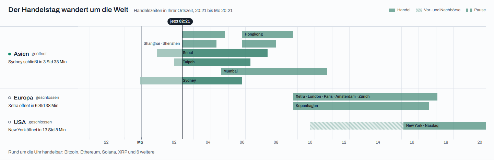
Die vier Bereiche darunterThe four panels below
| Bereich | Was er zeigt | Bedienung |
|---|---|---|
| Empfehlungen | Die bis zu acht neuesten Empfehlungen als Karten: Richtung, Symbol, Name, Setup, Zeitrahmen, Region und Datenverzögerung; Referenz (nach dem Einstieg: Einstieg), Stopp und Ziel mit Abstand in Prozent, Chance/Risiko, Konfidenz, Status und KI-Urteil. | Schalter „auch verworfene Kandidaten zeigen“; Details öffnet die Signal-Schublade, Übernehmen öffnet das Orderticket für Ihr Depot mit Richtung, Stopp und Ziel des Signals; „Alle Signale“ führt zur Signalseite. |
| KI gegen mich | Depotwert von KI-Depot und Mein Depot, Veränderung seit Start und heute, wer wie weit vorn liegt, Kurve beider Depots mit den Vergleichsindizes (gestrichelt). | „Depot“ führt zur Depotseite. |
| Märkte | Kompakte Beobachtungsliste nach Regionen mit Handelsstatus, Tagesverlauf, Kurs und Veränderung. Reine Umrechnungskurse (Devisenpaare) fehlen hier. | Klick auf eine Zeile öffnet das Instrument. |
| Nachrichten | Die acht neuesten Meldungen mit KI-Relevanz ab 3 von 5. | „Alle Nachrichten“ führt zur Nachrichtenseite. |
| Panel | What it shows | Controls |
|---|---|---|
| Empfehlungen (recommendations) | Up to eight newest recommendations as cards: direction, symbol, name, setup, timeframe, region and data delay; reference price (after the entry: entry price), stop and target with distance in percent, reward/risk, confidence, status and AI verdict. | Switch 'auch verworfene Kandidaten zeigen' (also show rejected candidates); Details opens the signal drawer, Übernehmen (adopt) opens the order ticket for your portfolio with the signal's direction, stop and target; 'Alle Signale' leads to the signals page. |
| KI gegen mich (AI versus me) | Value of the AI portfolio and of my portfolio, change since the start and today, who leads by how much, curve of both portfolios with the benchmark indices (dashed). | 'Depot' leads to the portfolio page. |
| Märkte (markets) | Compact watchlist by region with trading status, intraday sparkline, price and change. Pure conversion rates (currency pairs) are left out here. | Clicking a row opens the instrument. |
| Nachrichten (news) | The eight newest items with an AI relevance of at least 3 out of 5. | 'Alle Nachrichten' leads to the news page. |
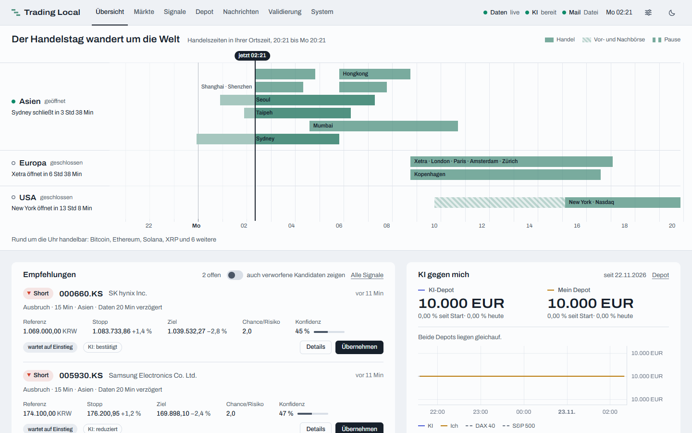
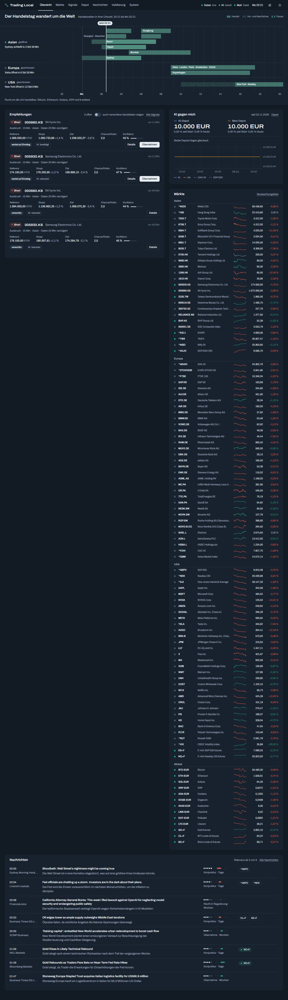
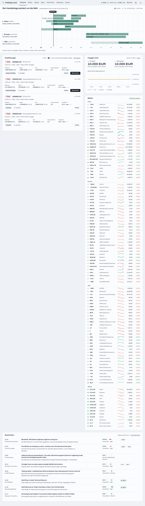

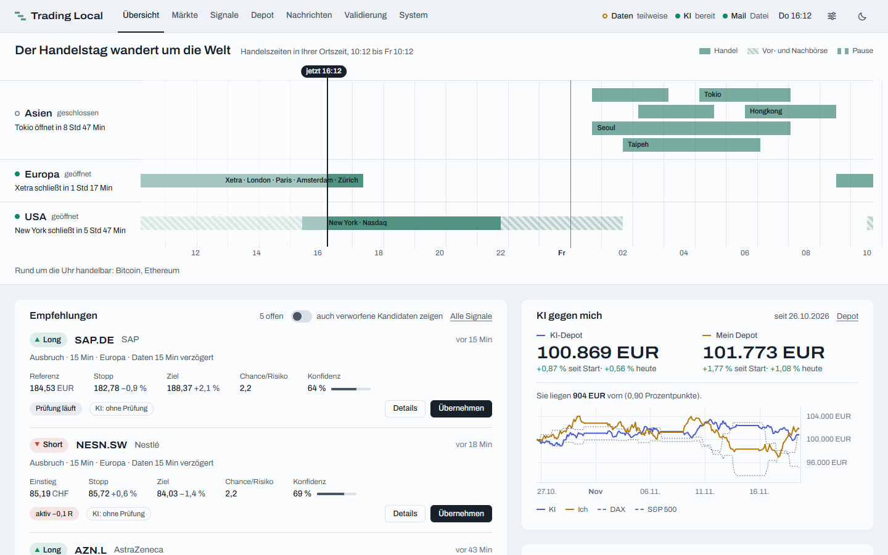

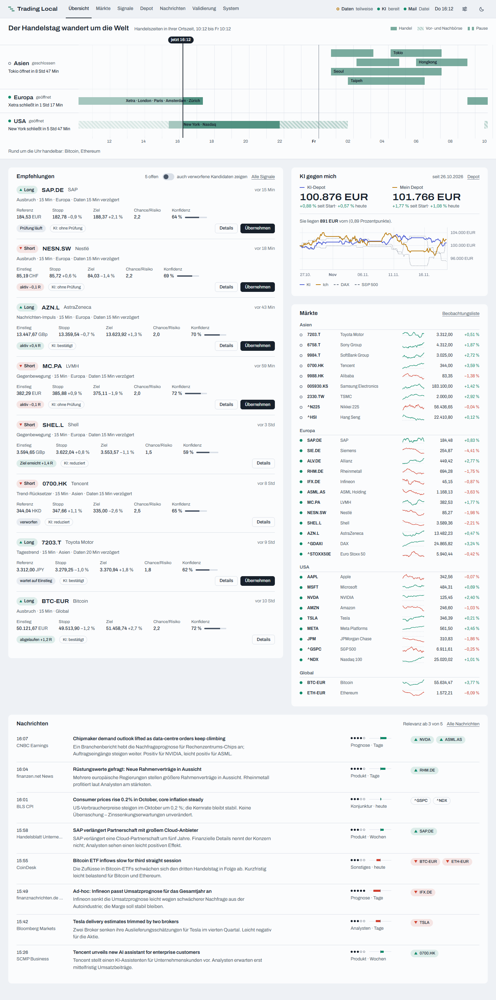
Auf dem TelefonOn a phone
Die Oberfläche passt sich schmalen Bildschirmen an: Die Bereiche stehen untereinander, Tabellen werden zu Karten, das Handelszeiten-Band lässt sich waagerecht wischen und startet so, dass „jetzt“ sichtbar ist. Die Plattform lauscht aber nur auf 127.0.0.1; ein Telefon erreicht sie deshalb nicht ohne Weiteres (siehe Sicherheit).The interface adapts to narrow screens: the panels stack, tables turn into cards, and the session ribbon can be swiped sideways and starts with 'jetzt' in view. The platform only listens on 127.0.0.1, though, so a phone cannot reach it out of the box (see Security).
Telefon hochkant (390 × 844)Phone portrait (390 × 844)

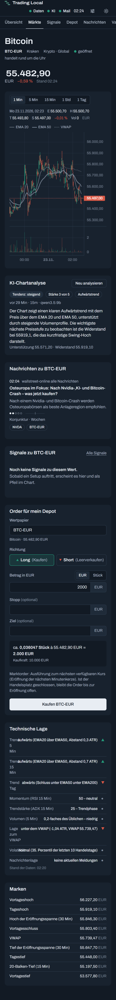

Märkte und InstrumentMarkets and instrument
Beobachtungsliste und ChartWatchlist and chartAlle Werte in einer sortierbaren Liste, jeder Wert mit Chart, Analyse und Orderticket.Every instrument in one sortable list, each with chart, analysis and order ticket.

Die MarktlisteThe market list
Die Seite Märkte zeigt die ganze Beobachtungsliste. Für aktive Werte werden Minutenkerzen gespeichert, Nachrichten zugeordnet und Signale gesucht. Oben rechts steht, wie viele aktive Werte jede Region hat.
- Filter: Suche (Symbol, Name oder Börse), Region, Anlageklasse und „inaktive zeigen“.
- Sortieren: Ein Klick auf eine Spaltenüberschrift sortiert – Text zuerst A–Z, Zahlen und Schalter zuerst mit den größten Werten, der Handelsstatus zuerst mit den geöffneten Börsen. Der zweite Klick dreht die Richtung um, der dritte stellt die Standardreihenfolge (nach Region) wieder her. Dasselbe geht über die Auswahl „Sortierung“. Die Wahl bleibt in diesem Browser gespeichert. Damit die Zeilen nicht unter dem Mauszeiger springen, ordnen Live-Kurse eine Kurs- oder Veränderungs-Sortierung höchstens alle 10 Sekunden neu. Werte ohne Kurs stehen immer am Ende.
- Spalten: Handelsstatus (Punkt), Symbol, Name, Börse mit Phase und Datenverzögerung („15 Min verzögert“), Klasse, Kurs mit Währung und Alter, Veränderung, Tagesverlauf, offenes Signal, „Aktiv“ und „Handelbar“.
- Aktiv aus: Der Wert wird nicht mehr beobachtet (keine Daten, keine Signale), seine gespeicherte Historie bleibt. Handelbar aus: Der Wert bleibt sichtbar, aber weder die KI noch Sie können ihn im Papierdepot handeln. Devisenpaare und Futures dienen nur als Umrechnungskurs oder Vergleichswert und lassen sich nicht handelbar schalten.
- Wert hinzufügen: Symbol in der Schreibweise von Yahoo Finance eingeben (z. B.
ASML.AS,7203.T). Die Plattform prüft es bei der Datenquelle, übernimmt Börse, Währung und Handelszeiten und lädt die Historie im Hintergrund.
Londoner Aktien notieren in Pence (GBp). Die Plattform zeigt sie so an und rechnet sie nicht stillschweigend um; im Depot werden sie korrekt in Euro bewertet.
The Märkte page shows the whole watchlist. For active instruments the platform stores minute candles, links news and looks for signals. The top right shows how many active instruments each region has.
- Filters: search (symbol, name or exchange), region, asset class and 'inaktive zeigen' (show inactive).
- Sorting: clicking a column header sorts – text A–Z first, numbers and switches with the largest values first, the trading status with the open exchanges first. The second click reverses the direction, the third restores the default order (by region). The 'Sortierung' drop-down does the same. The choice is remembered in this browser. So that rows do not jump under the mouse pointer, live prices re-order a price or change sort at most every 10 seconds. Instruments without a price always go last.
- Columns: trading status (dot), symbol, name, exchange with phase and data delay ('15 Min verzögert'), class, price with currency and age, change, intraday sparkline, open signal, 'Aktiv' (active) and 'Handelbar' (tradable).
- Aktiv off: the instrument is no longer watched (no data, no signals); its stored history stays. Handelbar off: the instrument stays visible, but neither the AI nor you can trade it in the paper portfolio. Currency pairs and futures serve only as conversion rates or benchmarks and cannot be made tradable.
- Adding an instrument: enter the symbol as spelled by Yahoo Finance (e.g.
ASML.AS,7203.T). The platform checks it at the data source, takes over exchange, currency and trading hours and downloads the history in the background.
London shares are quoted in pence (GBp). The platform shows them that way and does not convert them silently; in the portfolio they are valued correctly in euros.
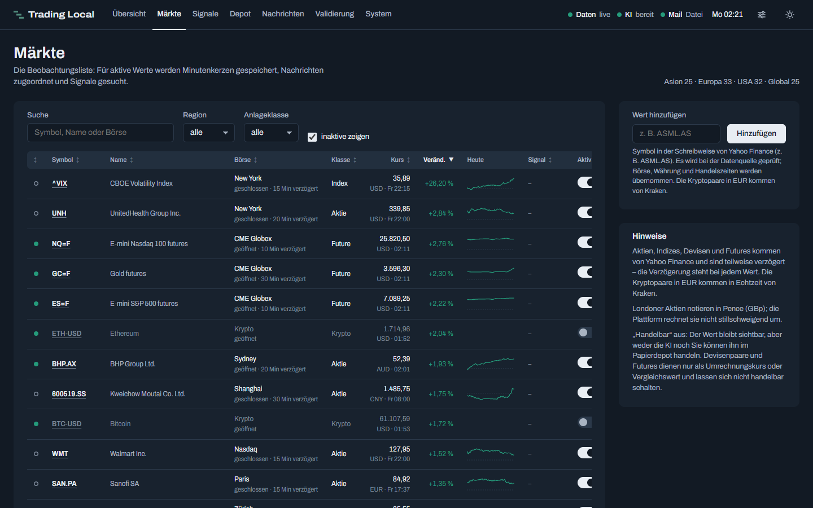
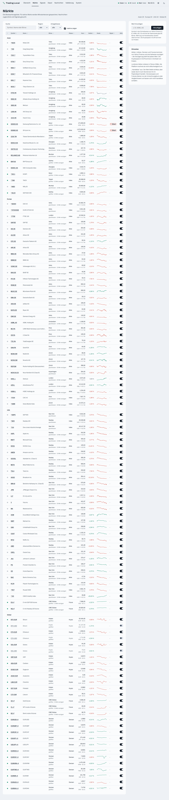
Die Instrument-SeiteThe instrument page
Ein Klick auf einen Wert öffnet seine Seite. Der Kopf zeigt Name, Symbol, Börse, Klasse, Region, Handelsphase mit Countdown („schließt in …“, „handelt rund um die Uhr“), den Live-Kurs mit Tagesveränderung und – falls zutreffend – „Daten 15 Min verzögert“.Clicking an instrument opens its page. The header shows name, symbol, exchange, class, region, trading phase with countdown ('schließt in …' – closes in, 'handelt rund um die Uhr' – trades around the clock), the live price with daily change and, where it applies, 'Daten 15 Min verzögert' (data delayed by 15 min).
| Bereich | Inhalt und Bedienung |
|---|---|
| Chart | Kerzenchart mit Volumen. Zeitrahmen: 1 Min, 5 Min, 15 Min (voreingestellt), 1 Std, 1 Tag. Überlagert sind EMA 20, EMA 50 und der VWAP der Sitzung; der Tageschart zeigt EMA 20, EMA 50 und EMA 200. Die Legende zeigt Zeit, Eröffnung, Hoch, Tief, Schluss, Veränderung und Volumen der Kerze unter dem Mauszeiger. Neue Minuten kommen live hinzu. Pfeile markieren Einstiege von Empfehlungen, Kreise ihre Ausstiege mit dem Ergebnis in R; gestrichelte Linien zeigen Referenz, Stopp und Ziel eines offenen Signals, durchgezogene und gepunktete Linien Ihre eigene Position. |
| KI-Chartanalyse | Die jüngste Einschätzung der lokalen KI: Tendenz (steigend, fallend, neutral), Stärke von 1 bis 5, Struktur (z. B. Aufwärtstrend, Seitwärtsspanne), ein kurzer deutscher Kommentar sowie Unterstützung und Widerstand, die die KI aus den vom Code berechneten Marken auswählt. Neu analysieren stellt den Wert sofort in die Warteschlange; die KI arbeitet Signalprüfungen und Nachrichten vorher ab. |
| Nachrichten zu … | Meldungen, die diesem Wert zugeordnet sind, mit Relevanz und Stimmung. |
| Signale zu … | Alle Signale dieses Werts, auch verworfene, mit Zeit, Richtung, Setup, Referenz, Status und Konfidenz. |
| Order für mein Depot | Das Orderticket (siehe unten). Nicht handelbare Werte zeigen stattdessen einen Hinweis. |
| Technische Lage | Trend auf 5 Minuten, 15 Minuten und Tagesbasis, Momentum (RSI), Trendstärke (ADX), Volumen gegenüber üblich, Lage zum VWAP, Volatilität, Markt (Trend und 60-Minuten-Veränderung des Vergleichsindex) und Nachrichtenlage – jeweils mit Wert und Pfeil (positiv, negativ, neutral). Darunter der Stand der Daten. |
| Marken | Vortageshoch und -tief, Tageshoch und -tief, Vortagesschluss, VWAP, Hoch und Tief der Eröffnungsspanne (30 Minuten) und die 20-Kerzen-Extreme im 15-Minuten-Chart, nach Preis sortiert. |
| Panel | Content and controls |
|---|---|
| Chart | Candlestick chart with volume. Timeframes: 1 Min, 5 Min, 15 Min (default), 1 Std (1 hour), 1 Tag (1 day). Overlays are EMA 20, EMA 50 and the session VWAP; the daily chart shows EMA 20, EMA 50 and EMA 200. The legend shows time, open, high, low, close, change and volume of the candle under the mouse pointer. New minutes are added live. Arrows mark entries of recommendations, circles their exits with the result in R; dashed lines show the reference, stop and target of an open signal, solid and dotted lines your own position. |
| KI-Chartanalyse (AI chart analysis) | The latest assessment by the local AI: bias (rising, falling, neutral), strength from 1 to 5, structure (e.g. uptrend, range), a short German comment, and support and resistance, which the AI picks from the levels computed by the code. Neu analysieren (analyse again) puts the instrument into the queue right away; the AI handles signal reviews and news first. |
| Nachrichten zu … (news for …) | Items linked to this instrument, with relevance and sentiment. |
| Signale zu … (signals for …) | All signals of this instrument, rejected ones too, with time, direction, setup, reference, status and confidence. |
| Order für mein Depot (order for my portfolio) | The order ticket (see below). Instruments that cannot be traded show a note instead. |
| Technische Lage (technical readings) | Trend on 5 minutes, 15 minutes and daily, momentum (RSI), trend strength (ADX), volume versus usual, position relative to the VWAP, volatility, market (trend and 60-minute change of the benchmark index) and news situation – each with a value and an arrow (positive, negative, neutral). Below: the time of the data. |
| Marken (levels) | Previous day's high and low, today's high and low, previous close, VWAP, high and low of the opening range (30 minutes) and the 20-candle extremes on the 15-minute chart, sorted by price. |
Ist die Börse geschlossen, zeigt die Seite den Stand des letzten Handels („Börse geschlossen – Stand des letzten Handels“). Bei verzögerten Märkten ist auch die letzte Kerze entsprechend alt.
When the exchange is closed the page shows the last trading state ('Börse geschlossen – Stand des letzten Handels'). For delayed markets the newest candle is correspondingly old.
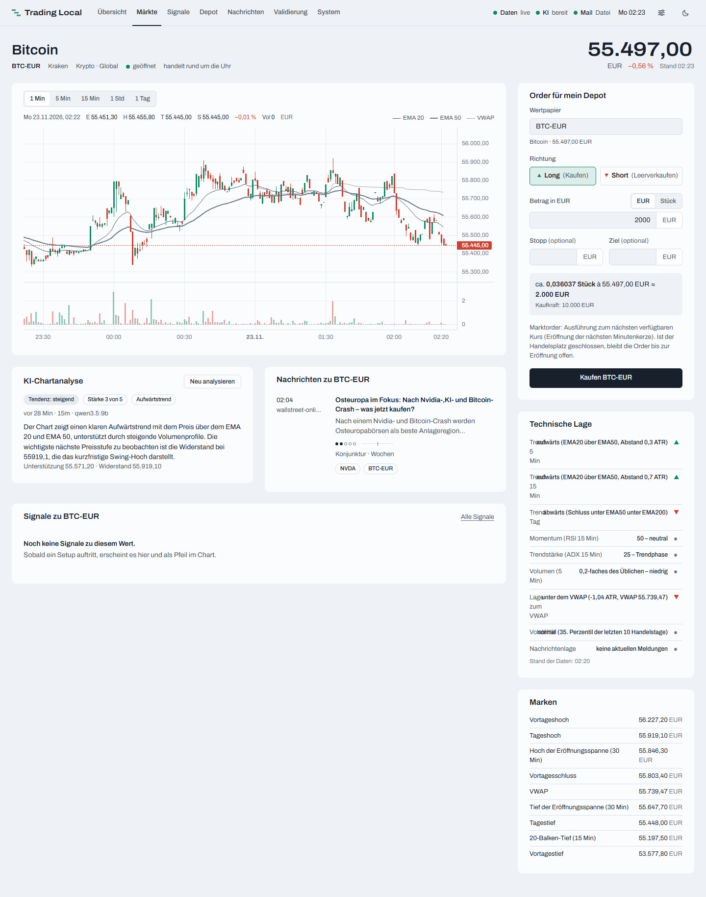

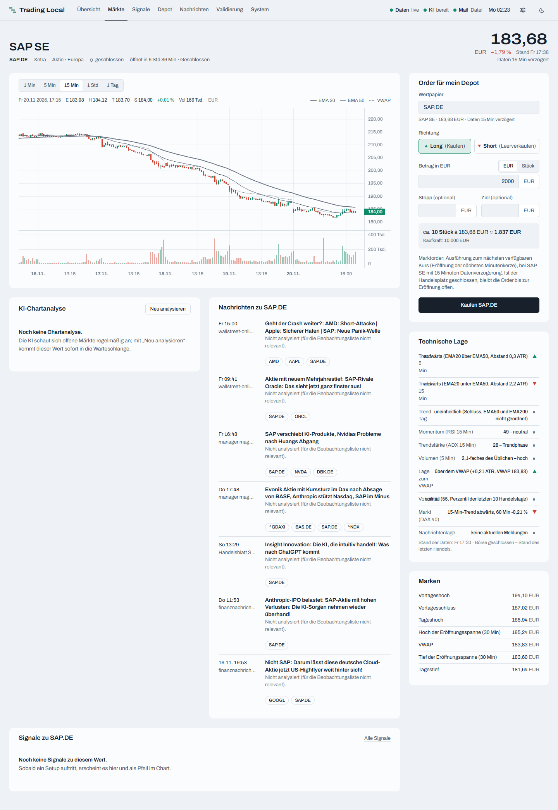
Das OrderticketThe order ticket
Mit dem Orderticket handeln Sie in Ihrem Papierdepot („Mein Depot“). Es steht auf jeder Instrument-Seite, auf der Depotseite und öffnet sich als Schublade, wenn Sie bei einem Signal Übernehmen klicken.
- Wertpapier wählen – nur handelbare Werte der Beobachtungsliste. Darunter stehen Name, aktueller Kurs und die Datenverzögerung.
- Richtung: Long (Kaufen) oder Short (Leerverkaufen).
- Menge als Betrag in Euro (voreingestellt 2.000) oder als Stückzahl. Die Plattform rundet auf ganze handelbare Einheiten ab: Aktien 1 Stück, Indizes 0,01, Krypto 0,000001.
- Stopp und Ziel optional. Bei Long muss der Stopp unter und das Ziel über dem Kurs liegen, bei Short umgekehrt. Das Ticket zeigt den Abstand in Prozent und Chance/Risiko.
- Die Vorschau zeigt Stückzahl, Gegenwert in Euro, Risiko bis zum Stopp und Ihre Kaufkraft. Der Knopf heißt „Kaufen …“ oder „Leerverkaufen …“.
Jede Order ist eine Marktorder. Sie wird zur Eröffnung der nächsten Minutenkerze ausgeführt – bei verzögerten Märkten also erst, wenn diese Kerze tatsächlich eingetroffen ist; gebucht wird, sobald sie abgerechnet ist. Ist der Handelsplatz geschlossen, bleibt die Order bis zur Eröffnung offen; nicht ausgeführte manuelle Orders verfallen nach 7 Tagen. Wurde das Ticket über Übernehmen geöffnet, ist die Order mit dem Signal verknüpft („Übernimmt KI-Signal #…“); die Verknüpfung lässt sich lösen.
The order ticket trades in your paper portfolio ('Mein Depot'). It sits on every instrument page and on the portfolio page, and it opens as a drawer when you click Übernehmen (adopt) on a signal.
- Choose the Wertpapier (security) – only tradable instruments of the watchlist. Below it are the name, the current price and the data delay.
- Richtung (direction): Long (Kaufen – buy) or Short (Leerverkaufen – sell short).
- Quantity as an amount in euros (default 2,000) or as a number of units. The platform rounds down to whole tradable units: shares 1, indices 0.01, crypto 0.000001.
- Stopp (stop) and Ziel (target) are optional. For a long the stop must be below and the target above the price, for a short the other way round. The ticket shows the distance in percent and the reward/risk ratio.
- The preview shows the quantity, the value in euros, the risk to the stop and your buying power. The button reads 'Kaufen …' (buy) or 'Leerverkaufen …' (sell short).
Every order is a market order. It fills at the open of the next minute candle – for delayed markets only once that candle has actually arrived; it is booked as soon as the candle is settled. If the exchange is closed, the order stays pending until the open; manual orders that have not filled expire after 7 days. When the ticket was opened through Übernehmen, the order is linked to the signal ('Übernimmt KI-Signal #…'); the link can be removed.
SignaleSignals
Bilanz, Tabelle, DetailTrack record, table, detailJedes Signal wird bis zum Ende verfolgt – auch die verworfenen Kandidaten. So bleibt sichtbar, ob die Auswahl der Engine etwas taugt.Every signal is tracked to its end – the rejected candidates too. That keeps visible whether the engine's selection is any good.
Bilanz aller verfolgten SignaleTrack record of all tracked signals
Der obere Bereich zählt nur abgeschlossene Signale der aktuellen Engine-Version. Ergebnisse stehen in R: dem Vielfachen des geplanten Risikos (Abstand Einstieg bis Stopp). +2 R heißt, der Trade hat das Doppelte des Risikos verdient; −1 R ist ein normaler Stopp. Die Werte sind nach Slippage, aber ohne die feste Ordergebühr gerechnet – die fällt nur in den Depots an.
- Empfehlungen und Verworfene Kandidaten stehen getrennt nebeneinander: Anzahl, Trefferquote mit 95-%-Intervall (Wilson), Ø Ergebnis mit 95-%-Intervall (Bootstrap mit 2.000 Wiederholungen, ab 5 Ergebnissen), Summe und Profitfaktor. Liefern die verworfenen Kandidaten auf Dauer ähnliche Ergebnisse wie die Empfehlungen, bringt die Auswahl nichts.
- Ein Hinweis sagt ehrlich, wie belastbar die Zahlen sind: bei 0 Signalen „noch keine Aussage möglich“, unter 100 „statistisch noch nicht belastbar“.
- Kalibrierung der Konfidenz: je Score-Bereich (unter 0,5 · 0,5–0,6 · 0,6–0,7 · 0,7–0,8 · ab 0,8) die vorhergesagte gegen die eingetretene Trefferquote. Punkte auf der Diagonalen bedeuten: Die Konfidenz stimmt. Die Punktgröße wächst mit der Anzahl, n steht daneben.
- Aufschlüsselung nach Setup, Region, Richtung und KI-Prüfung (bestätigt, reduziert, Veto, ohne Prüfung), jeweils mit n, Trefferquote und Ø R.
The upper part counts only closed signals of the current engine version. Results are given in R: multiples of the planned risk (distance from entry to stop). +2 R means the trade earned twice its risk; −1 R is a normal stop. The values are after slippage but without the flat order fee – that is only charged in the portfolios.
- Empfehlungen (recommendations) and Verworfene Kandidaten (rejected candidates) stand side by side: count, hit rate with 95 % interval (Wilson), average result with 95 % interval (bootstrap with 2,000 resamples, from 5 results), sum and profit factor. If the rejected candidates keep producing results similar to the recommendations, the selection adds nothing.
- A note says honestly how reliable the numbers are: with 0 signals 'noch keine Aussage möglich' (no statement possible yet), below 100 'statistisch noch nicht belastbar' (not statistically reliable yet).
- Kalibrierung der Konfidenz (confidence calibration): per score range (below 0.5 · 0.5–0.6 · 0.6–0.7 · 0.7–0.8 · from 0.8) the predicted versus the observed hit rate. Points on the diagonal mean the confidence is right. The point size grows with the count; n is written next to it.
- Breakdown by setup, region, direction and AI review (confirmed, reduced, veto, no review), each with n, hit rate and average R.
Die SignaltabelleThe signal table
Reiter Offen, Abgeschlossen, Alle; dazu die Art (Empfehlungen, Verworfene Kandidaten, Alle) und ein Symbolfilter. Spalten: Zeit, Richtung, Wert, Setup (bei verworfenen mit Grund), Referenz, Stopp / Ziel, Chance/Risiko (C/R), Konfidenz, KI-Urteil und Status. Beim Herunterscrollen lädt die Tabelle weitere Signale nach; neue Signale erscheinen live. Ein Klick auf eine Zeile öffnet die Schublade.Tabs Offen (open), Abgeschlossen (closed), Alle (all); plus the kind (Empfehlungen, Verworfene Kandidaten, Alle) and a symbol filter. Columns: time, direction, instrument, setup (with the reason for rejected ones), reference, stop / target, reward/risk (C/R), confidence, AI verdict and status. Scrolling down loads more signals; new signals appear live. Clicking a row opens the drawer.

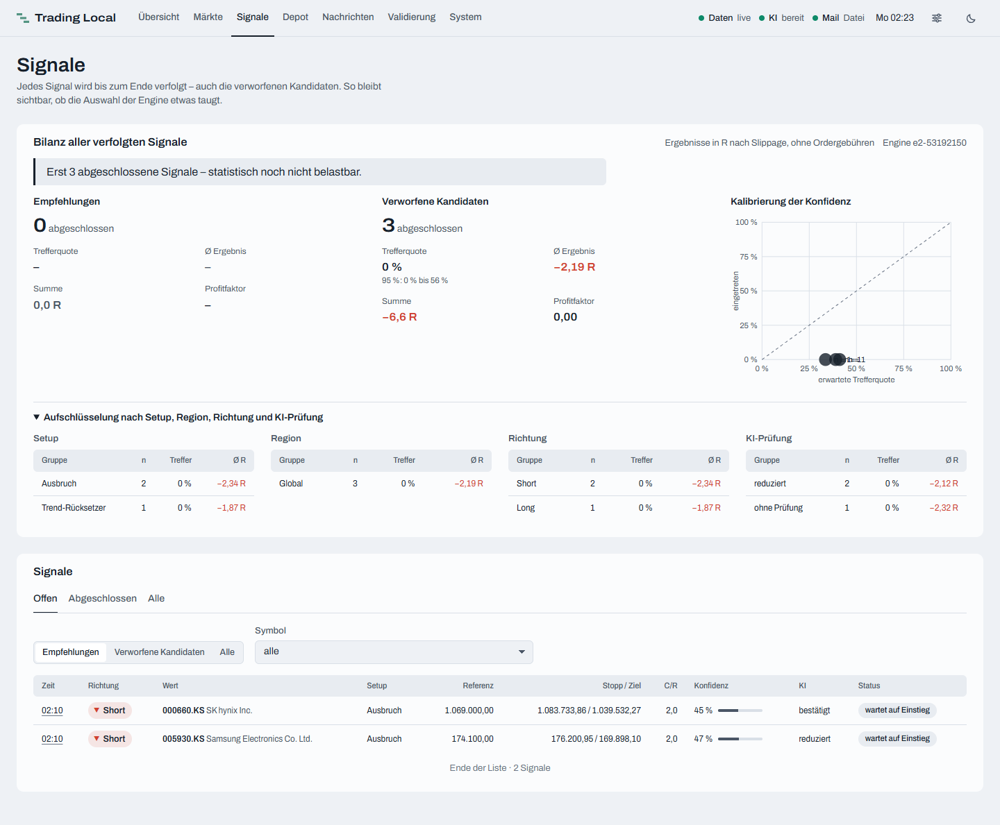
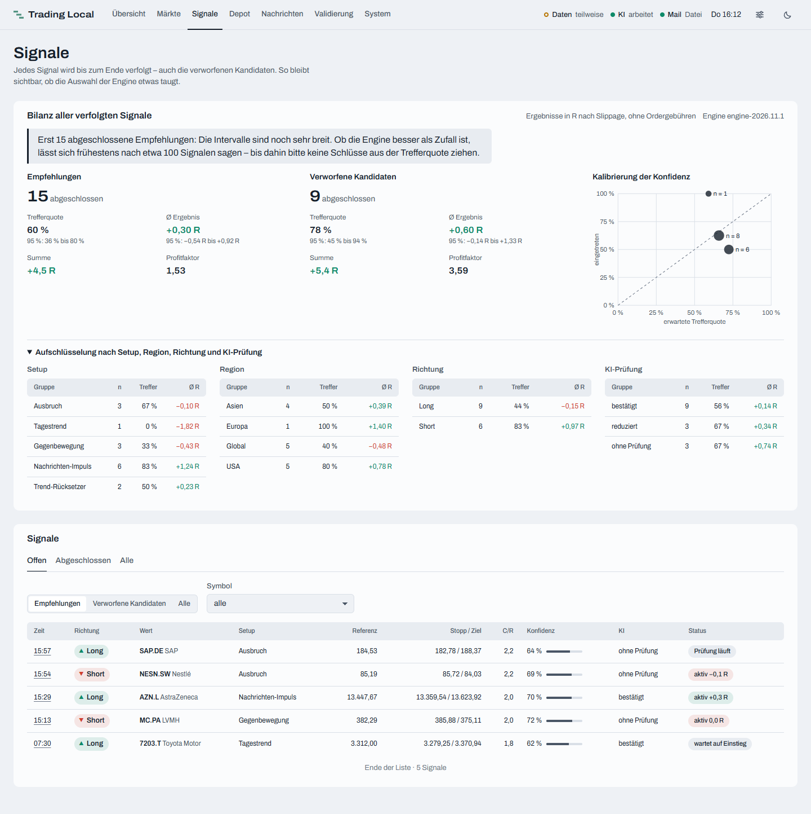
Die Signal-SchubladeThe signal drawer
Die Schublade öffnet sich über der Liste und hat eine eigene Adresse (#/signale/9) – genau dorthin führt auch der Link in der Alarm-Mail. Esc oder das Kreuz schließt sie.
- Kennzahlen: Referenzkurs (nach dem Einstieg der Einstiegskurs), Stopp und Ziel mit Abstand, Chance/Risiko, Konfidenz, Score, erwartetes Ergebnis in R, ATR, Haltedauer, Ergebnis (bei aktiven Signalen das offene Ergebnis zum Live-Kurs), bester und schlechtester Verlauf (MFE, MAE).
- Übernehmen (nur bei offenen Empfehlungen) öffnet das Orderticket mit Richtung, Stopp und Ziel; „Zum Chart von …“ öffnet das Instrument.
- Verlauf um das Signal als 15-Minuten-Chart mit Einstieg, Ausstieg, Referenz, Stopp und Ziel.
- Lebenslauf: erkannt → geprüft → ausgegeben → Einstieg → Ausstieg, jeweils mit Zeit. Bei verworfenen Kandidaten steht, warum sie nicht ausgegeben wurden.
- Bestandteile des Scores: die sieben Komponenten als Balken von 0 bis 1 mit markierter Mitte 0,5 (neutral).
- KI-Prüfung: Urteil, Überzeugung, Begründung und Risiken.
- Messwerte zum Entscheidungszeitpunkt: der gespeicherte Merkmalssatz (Kurs, EMAs, RSI, ADX, ATR, Bollinger, Donchian, Tages- und Vortagesmarken, relatives Volumen …), mit dem die Engine entschieden hat.
- Nachrichten zum Signal und unten Signal-Nummer und Engine-Version.
The drawer opens over the list and has its own address (#/signale/9) – the link in the alert e-mail leads exactly there. Esc or the cross closes it.
- Key figures: reference price (after the entry the entry price), stop and target with distance, reward/risk, confidence, score, expected result in R, ATR, holding period, result (for active signals the open result at the live price), best and worst excursion (MFE, MAE).
- Übernehmen (adopt; only for open recommendations) opens the order ticket with direction, stop and target; 'Zum Chart von …' opens the instrument.
- Verlauf um das Signal (price around the signal) as a 15-minute chart with entry, exit, reference, stop and target.
- Lebenslauf (life cycle): detected → reviewed → issued → entry → exit, each with its time. For rejected candidates it says why they were not issued.
- Bestandteile des Scores (score components): the seven components as bars from 0 to 1 with the neutral middle 0.5 marked.
- KI-Prüfung (AI review): verdict, conviction, rationale and risks.
- Messwerte zum Entscheidungszeitpunkt (readings at decision time): the stored feature set (price, EMAs, RSI, ADX, ATR, Bollinger, Donchian, daily and previous-day levels, relative volume …) the engine decided on.
- Nachrichten zum Signal (news behind the signal) and, at the bottom, signal number and engine version.

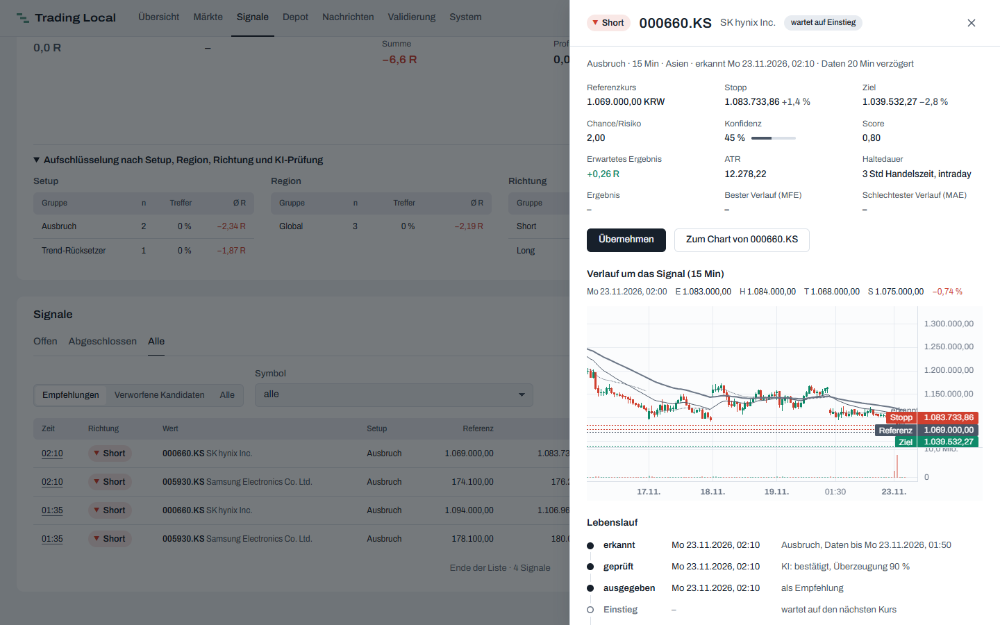

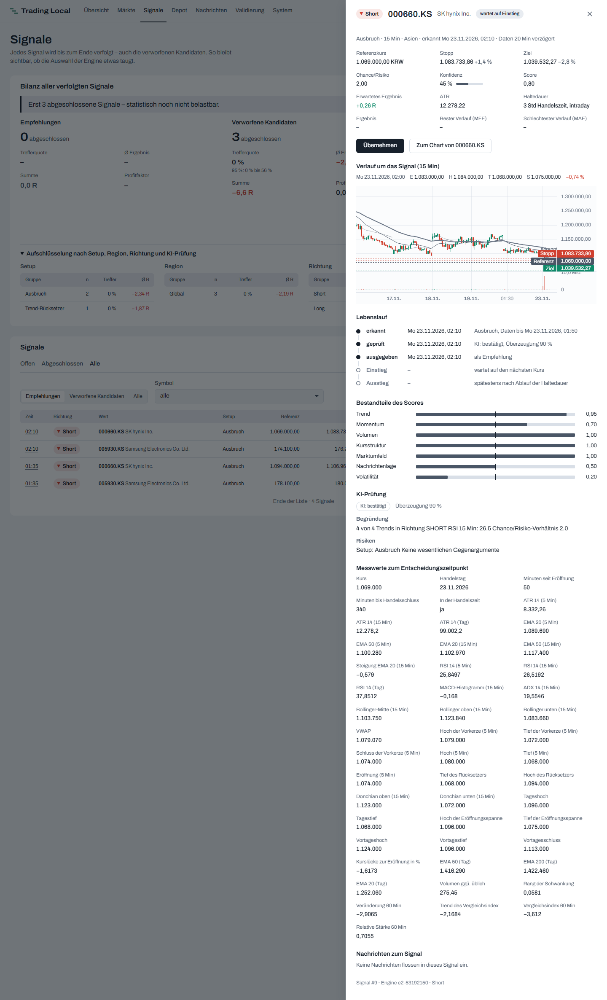
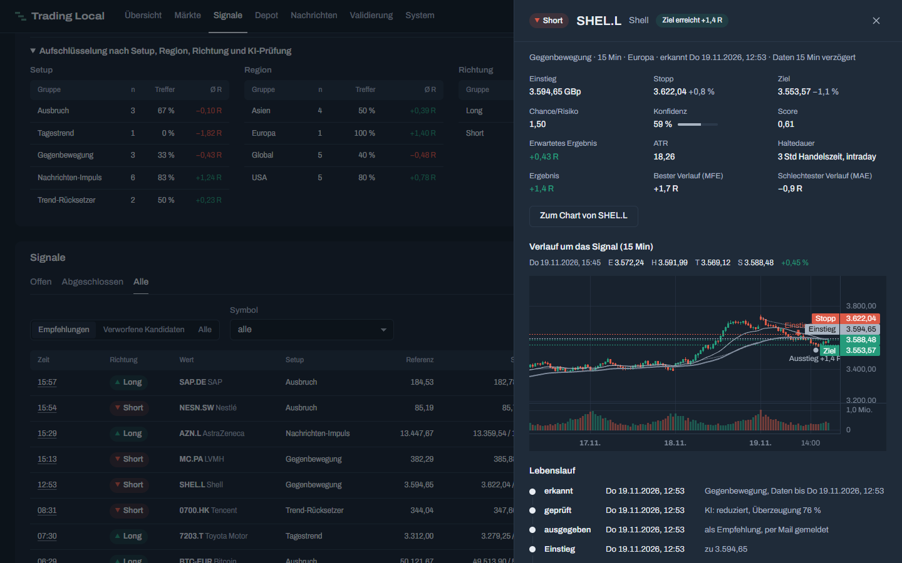
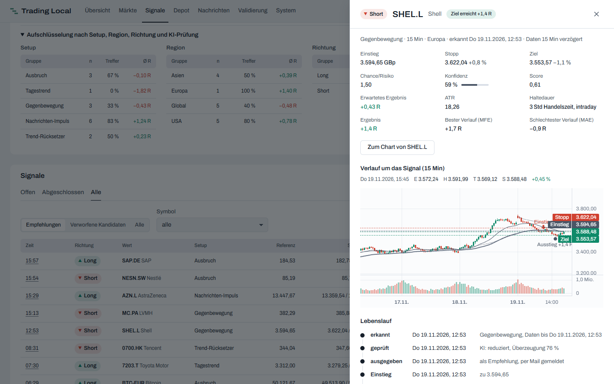

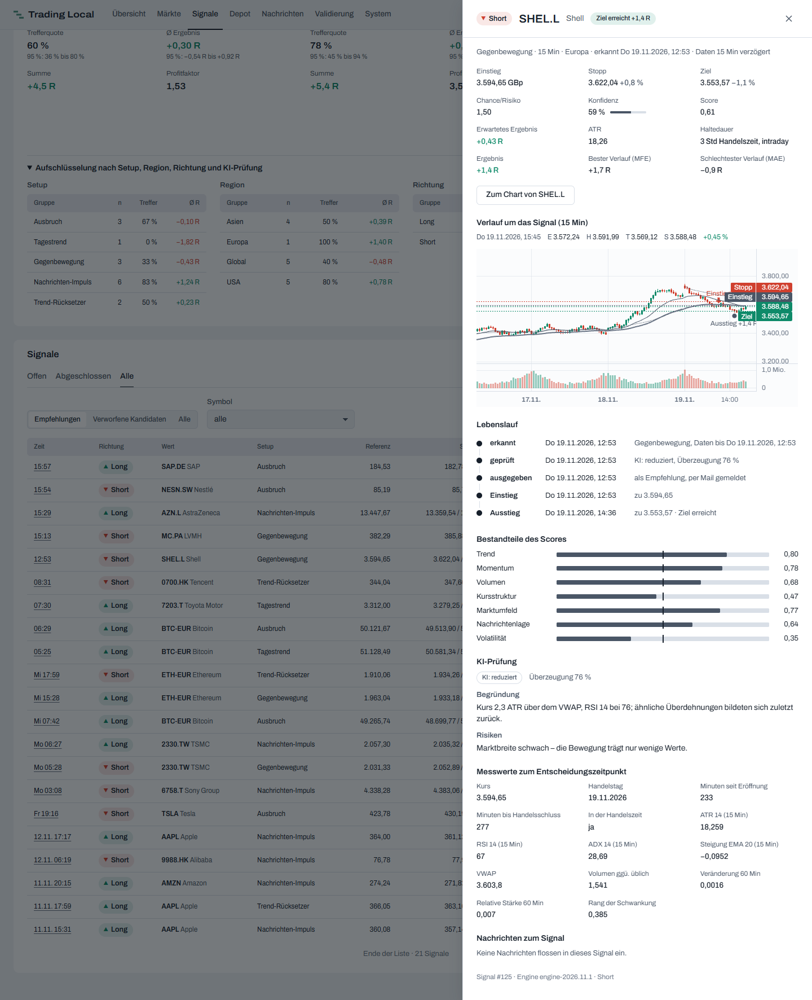
| Status | Bedeutung |
|---|---|
| Prüfung läuft | Der Kandidat liegt bei der KI (höchstens drei warten gleichzeitig). |
| wartet auf Einstieg | Ausgegeben; der Einstieg erfolgt auf der ersten Kerze ab dem Ausgabezeitpunkt. |
| aktiv | Eingestiegen, mit offenem Ergebnis in R; Stopp, Ziel, Zeitstopp und Handelsschluss werden auf jeder Minutenkerze geprüft. |
| Ziel erreicht · Stopp · abgelaufen | Abgeschlossen mit Ergebnis in R. „Abgelaufen“ heißt Zeitstopp oder Glattstellung vor Handelsschluss. |
| verworfen | Kein Einstieg: keine Einstiegskerze bis zur Frist, oder der Kurs ist vorher zu weit davongelaufen. Der Grund steht im Lebenslauf. |
| Status | Meaning |
|---|---|
| Prüfung läuft (under review) | The candidate is with the AI (at most three wait at the same time). |
| wartet auf Einstieg (waiting for entry) | Issued; the entry happens on the first candle from the issue time on. |
| aktiv (active) | Entered, with the open result in R; stop, target, time stop and session close are checked on every minute candle. |
| Ziel erreicht · Stopp · abgelaufen | Closed with a result in R (target reached, stopped, expired). 'Abgelaufen' means time stop or flattening before the session close. |
| verworfen (dropped) | No entry: no entry candle before the deadline, or the price ran away too far before it. The reason is shown in the life cycle. |
Depot: KI gegen michPortfolio: AI versus me
Zwei PapierdepotsTwo paper portfoliosDie KI handelt ihre eigenen Empfehlungen, Sie entscheiden selbst – mit identischen Regeln und Kosten.The AI trades its own recommendations, you decide for yourself – with identical rules and costs.
| Bereich | Inhalt und Bedienung |
|---|---|
| Vergleichstabelle | Depotwert und Start beider Depots, darunter Rendite seit Start, heute, realisiert und unrealisiert, Gebühren, Trefferquote, Profitfaktor, maximaler Drawdown, Sharpe-Kennzahl (ein Strich heißt: zu wenig Historie), offene Positionen und Orders, Exposure long und short, Kaufkraft und Cash. |
| Depotwert im Verlauf | Kurve beider Depots mit den Vergleichsindizes als „gekauft und gehalten“ (gestrichelt). Zeitraum 1T, 1W, 1M, Alles. Der Depotwert wird mindestens alle 5 Minuten und bei jeder Änderung festgehalten. |
| Positionen · Orders · Trades | Reiter mit der Anzahl je Reiter, darunter je ein Block für KI-Depot und Mein Depot. In Ihrem Depot: Stopp/Ziel ändern (leeres Feld entfernt die Marke), Schließen (Schließorder zum nächsten Kurs) und bei offenen Orders Stornieren. Das KI-Depot können Sie nur ansehen. |
| Order für mein Depot | Das Orderticket ohne festes Symbol. |
| Neuer Vergleich | Neu starten … fragt nach dem Startkapital und setzt beide Depots auf denselben Stand zurück, zum Beispiel nach einer Änderung der Engine. |
| Panel | Content and controls |
|---|---|
| Comparison table | Value and start of both portfolios, below that return since the start, today, realised and unrealised, fees, hit rate, profit factor, maximum drawdown, Sharpe ratio (a dash means: too little history), open positions and orders, long and short exposure, buying power and cash. |
| Depotwert im Verlauf (portfolio value over time) | Curve of both portfolios with the benchmark indices as 'bought and held' (dashed). Range 1T (1 day), 1W, 1M, Alles (all). The portfolio value is recorded at least every 5 minutes and on every change. |
| Positionen · Orders · Trades | Tabs with a count each, below them one block for the AI portfolio and one for my portfolio. In your portfolio: Stopp/Ziel ändern (change stop/target; an empty field removes the level), Schließen (close: closing order at the next price) and, for pending orders, Stornieren (cancel). The AI portfolio is view-only. |
| Order für mein Depot | The order ticket without a fixed symbol. |
| Neuer Vergleich (new comparison) | Neu starten … (restart) asks for the starting capital and resets both portfolios to the same state, for example after a change of the engine. |
Neustart ist endgültig. Technisch löscht der Neustart alle Orders, Positionen und Depotwert-Punkte beider Depots und setzt beide auf das neue Startkapital; offene Positionen werden dabei nicht mehr zu einem Kurs verbucht. Die Signal-Historie bleibt vollständig erhalten.
A restart is final. Technically the restart deletes all orders, positions and portfolio value points of both portfolios and puts both on the new starting capital; open positions are not booked at a price any more. The signal history is kept in full.

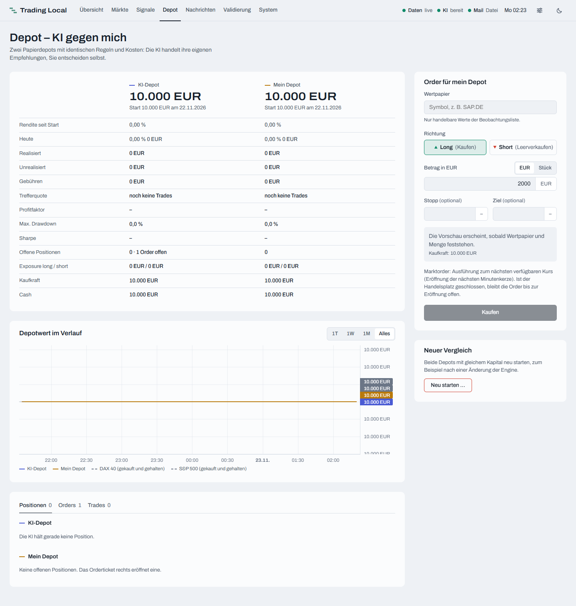
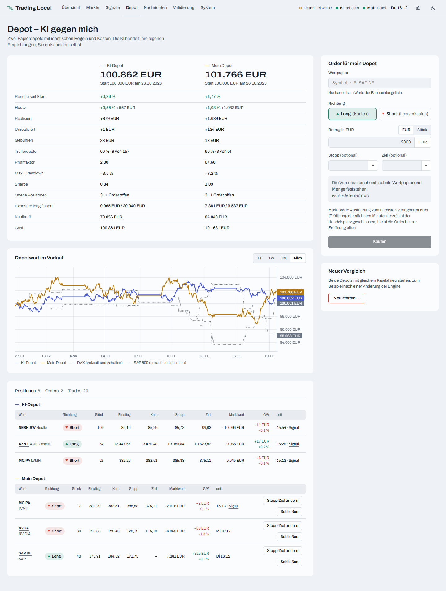
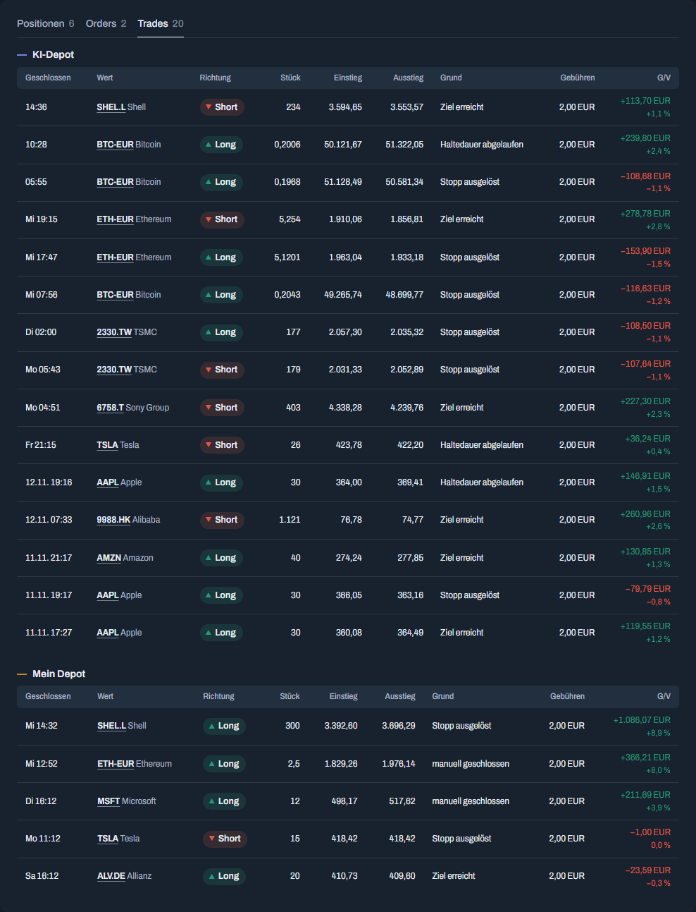
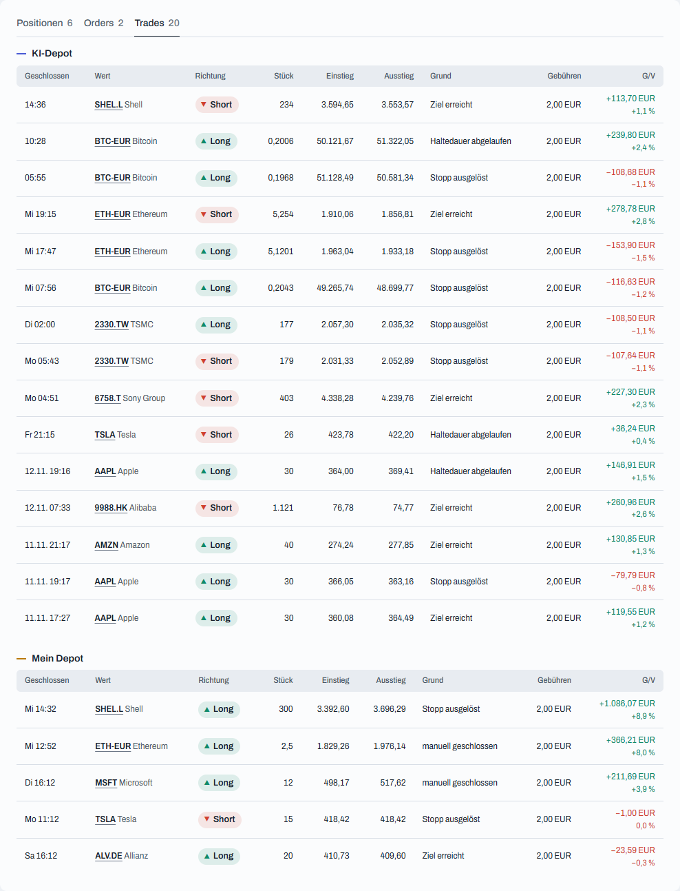
Die Regeln hinter beiden Depots (Ausführung, Kosten, Leerverkauf, Währungen, Positionsgröße) stehen unter Simulation. Hinweis zu den Beispieldaten: Der Demo-Server berechnet auch auf Krypto-Trades die feste Gebühr von 1 EUR je Order; die echte Plattform tut das nicht.The rules behind both portfolios (execution, costs, short selling, currencies, position size) are described under Simulation. Note on the sample data: the demo server also charges the flat fee of 1 EUR per order on crypto trades; the real platform does not.
NachrichtenNews
Alle gesammelten MeldungenEvery collected itemDie lokale KI bewertet Relevanz und Stimmung für die Werte der Beobachtungsliste und fasst jede Meldung auf Deutsch zusammen.The local AI rates relevance and sentiment for the instruments on the watchlist and summarises each item in German.
- Filter: „Relevanz ab“ (1 bis 5 von 5), Symbol, „Region der Quelle“ und „nur analysierte“.
- Eine Meldung zeigt Zeit und Quelle, die Überschrift als Link zum Original (öffnet in einem neuen Fenster), die deutsche Zusammenfassung der KI, die Relevanz als Punkte von 1 bis 5, die Stimmung als Balken, Kategorie (Zahlen, Prognose, Übernahme, Analysten, Konjunktur, Recht & Regulierung, Produkt, Management, Sonstiges) und Zeithorizont (heute, Tage, Wochen).
- Werte-Chips: die betroffenen Werte mit ihrer eigenen Stimmung – grün mit ▲ bei positiver, rot mit ▼ bei negativer Stimmung. Ein Klick öffnet das Instrument.
- „Analyse läuft“ heißt: Die Meldung wartet auf die KI. „Nicht analysiert (für die Beobachtungsliste nicht relevant)“ steht bei jeder übersprungenen Meldung – meist passt sie zu keinem Wert und keinem Makrothema und stammt aus einer weniger hoch bewerteten Quelle; derselbe Zusatz erscheint aber auch bei Meldungen, die älter als 12 Stunden waren, bei ausgeschalteter oder nicht erreichbarer KI und bei Rückstau (siehe Nachrichten). Duplikate zeigen nur „Nicht analysiert“.
- Neue Meldungen erscheinen live oben; „Ältere Meldungen laden“ blättert zurück.
- Filters: 'Relevanz ab' (relevance from 1 to 5 out of 5), symbol, 'Region der Quelle' (region of the source) and 'nur analysierte' (analysed only).
- An item shows time and source, the headline as a link to the original (opens in a new window), the AI's German summary, relevance as dots from 1 to 5, sentiment as a bar, category (earnings, guidance, takeover, analysts, macro, legal and regulation, product, management, other) and time horizon (today, days, weeks).
- Instrument chips: the affected instruments with their own sentiment – green with ▲ when positive, red with ▼ when negative. A click opens the instrument.
- 'Analyse läuft' (analysis running) means the item is waiting for the AI. 'Nicht analysiert (für die Beobachtungsliste nicht relevant)' (not analysed, not relevant for the watchlist) is shown for every skipped item – usually it matches no instrument and no macro topic and comes from a lower-rated source, but the same note also appears for items older than 12 hours, when the AI is switched off or unreachable, and for back-pressure drops (see News pipeline). Duplicates only show 'Nicht analysiert'.
- New items appear live at the top; 'Ältere Meldungen laden' (load older items) pages back.
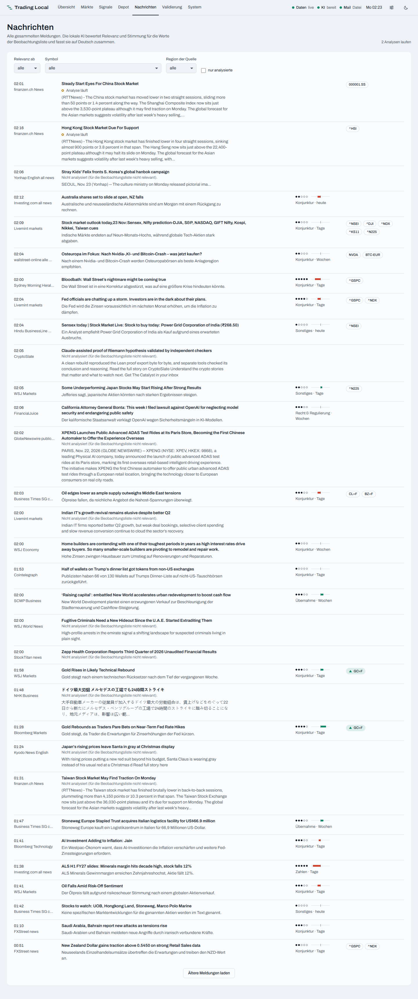
ValidierungValidation
Die Regeln auf der HistorieThe rules on the historySpielt die gespeicherten Minutenkerzen noch einmal ab und lässt die Engine entscheiden, als wäre es live.Replays the stored minute candles and lets the engine decide as if it were live.
- Zeitraum wählen: letzte 5, 10, 20, 30, 60, 90 oder 180 Tage. Längere Zeiträume dauern länger, sagen aber mehr aus.
- Validierung starten. Der Lauf rechnet in einem eigenen Prozess und nutzt nur Daten, die bereits gespeichert sind; die Plattform läuft währenddessen normal weiter. Es läuft immer nur eine Validierung.
- Unter Bisherige Läufe stehen die fünf neuesten Läufe mit Status (läuft, fertig, fehlgeschlagen) und Ø Ergebnis. Ein Klick zeigt das Ergebnis.
Das Ergebnis besteht aus dem Urteil in einem Satz, den Warnungen, den Eckdaten (Zeitraum, Handelstage, Werte, Entscheidungspunkte, Engine-Version), dem Gesamtergebnis, dem Zufallsvergleich, der Stabilität über vier Zeitblöcke, der Kalibrierung, der kumulierten Ergebniskurve in R und der Aufschlüsselung nach Setup, Region und Richtung. Wie man das liest, steht unter Validierung im Teil „So funktioniert es“.
- Choose the Zeitraum (period): last 5, 10, 20, 30, 60, 90 or 180 days. Longer periods take longer but say more.
- Validierung starten (start). The run computes in a process of its own and uses only data that is already stored; the platform keeps working normally meanwhile. Only one validation runs at a time.
- Bisherige Läufe (previous runs) lists the five newest runs with status (läuft – running, fertig – done, fehlgeschlagen – failed) and average result. A click shows the result.
The result consists of the verdict in one sentence, the warnings, the key data (period, trading days, instruments, decision points, engine version), the overall result, the random-entry comparison, the stability over four time blocks, the calibration, the cumulative result curve in R and the breakdown by setup, region and direction. How to read it is explained under Validation in the 'How it works' part.
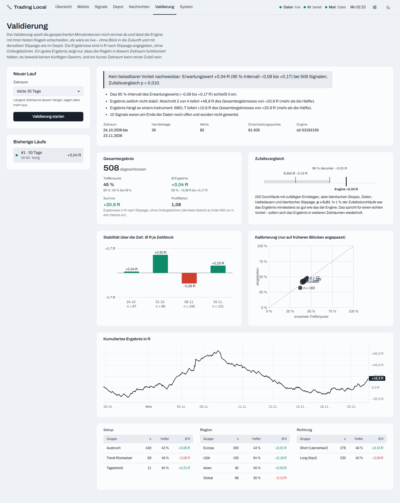

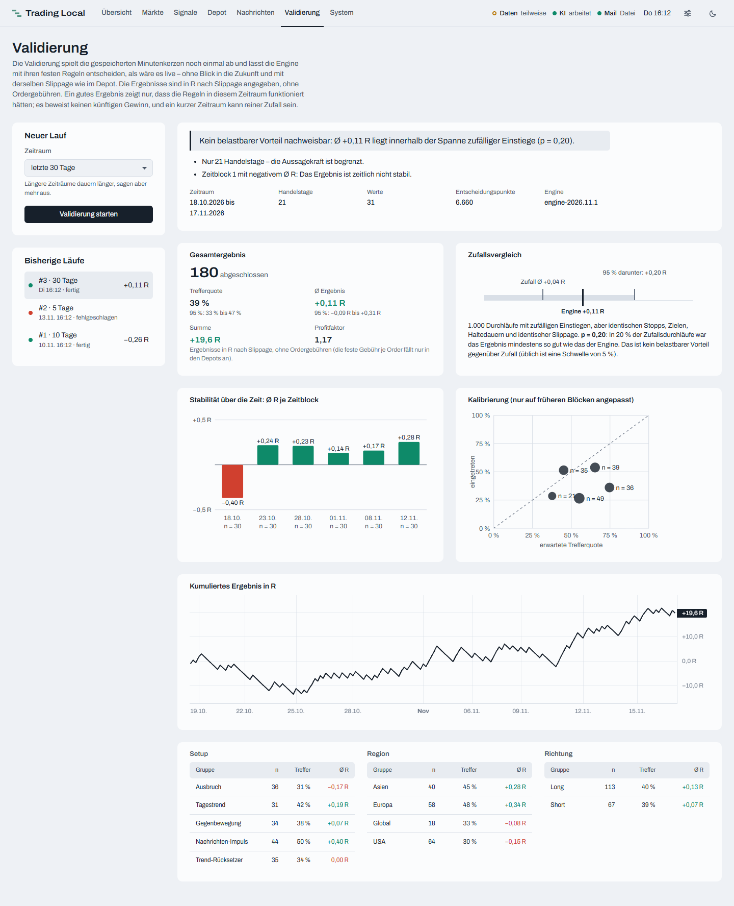
SystemSystem
Betrieb und ProtokolleOperations and logsDer Zustand der Hintergrunddienste. Fehler einzelner Feeds oder Werte halten den Minutentakt nicht an.The state of the background services. Failures of single feeds or instruments do not stop the minute cycle.
| Bereich | Inhalt |
|---|---|
| Kachel Daten | Kursstrom, letzter Tick, letzte REST-Abfrage, Drosselung, Historie (vollständig oder Fortschritt), Werte ohne frische Daten. |
| Kachel KI | Modell, Zustand, Warteschlange, letzte Antwortzeit, Aufrufe und Fehler der letzten Stunde, letzter Fehler. |
| Kachel Nachrichten | Feeds und davon gestörte, Meldungen und Analysen der letzten Stunde, Warteschlange, letzte Abfrage. |
| Kachel Mail | Modus, maskierter Empfänger, versendete Mails der letzten Stunde, letzter Fehler und der Knopf Testmail senden. |
| Kachel Datenbank | Größe in MB, Zahl der Minutenkerzen, Zeitraum der Daten, Nachrichten, Signale, Laufzeit des Servers. |
| Hintergrundjobs | „Kurse und Minutenbalken“, „Simulation (Orders, Stopps, Ziele)“, „Signal-Engine“, „Nachrichten abrufen“ und „Aufräumen“ mit letztem Lauf, Dauer und Ergebnis. |
| KI-Aufrufe | Jeder Modellaufruf mit Art (Nachricht, Signalprüfung, Chartanalyse), Antwortzeit, Wartezeit in der Warteschlange, Tokens und Ergebnis. |
| Nachrichten-Feeds | Alle Feeds mit Region, Sprache, letztem Erfolg, Fehlern und Zahl der Meldungen; gestörte zuerst. |
| Aktivitätsprotokoll | Neue Empfehlungen, verworfene Kandidaten mit Grund, Einstiege, Ausstiege, Orders, Mails, Warnungen – live, filterbar nach Stufe (Info, Warnung, Fehler) und Bereich (Daten, Nachrichten, KI, Signale, Depot, Mail, System); „Ältere Einträge“ blättert zurück. |
| Mail-Protokoll | Jeder Versuch mit Art, Betreff, Empfänger und Status (gesendet, als Datei, übersprungen, fehlgeschlagen) samt Grund. |
| Über | Version, Engine-Version, Basiswährung, Datenquellen und Lizenzhinweise. |
| Panel | Content |
|---|---|
| Tile Daten (data) | Price stream, last tick, last REST request, throttling, history (complete or progress), instruments without fresh data. |
| Tile KI (AI) | Model, state, queue, last response time, calls and errors in the last hour, last error. |
| Tile Nachrichten (news) | Feeds and failing ones, items and analyses in the last hour, queue, last poll. |
| Tile Mail | Mode, masked recipient, e-mails sent in the last hour, last error and the button Testmail senden (send test e-mail). |
| Tile Datenbank (database) | Size in MB, number of minute candles, data period, news, signals, server uptime. |
| Hintergrundjobs (background jobs) | 'Kurse und Minutenbalken' (prices and minute bars), 'Simulation (Orders, Stopps, Ziele)', 'Signal-Engine', 'Nachrichten abrufen' (fetch news) and 'Aufräumen' (housekeeping) with last run, duration and result. |
| KI-Aufrufe (AI calls) | Every model call with kind (news, signal review, chart analysis), response time, waiting time in the queue, tokens and result. |
| Nachrichten-Feeds (news feeds) | All feeds with region, language, last success, failures and number of items; failing ones first. |
| Aktivitätsprotokoll (activity log) | New recommendations, rejected candidates with reason, entries, exits, orders, e-mails, warnings – live, filterable by level (info, warning, error) and area (data, news, AI, signals, portfolio, mail, system); 'Ältere Einträge' pages back. |
| Mail-Protokoll (mail log) | Every attempt with kind, subject, recipient and status (sent, as file, skipped, failed) and the reason. |
| Über (about) | Version, engine version, base currency, data sources and licence notices. |
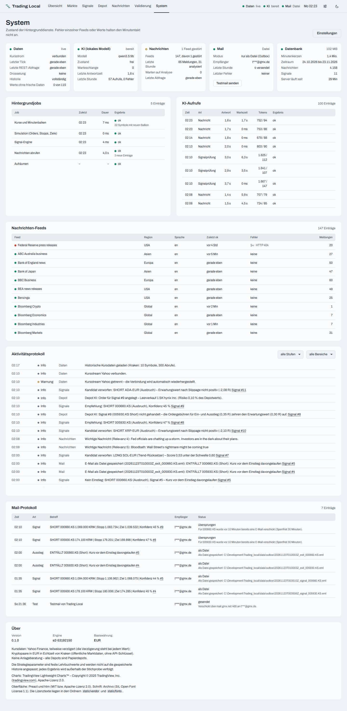
EinstellungenSettings
Vorlieben im laufenden BetriebPreferences while runningAlarme, Signalschwellen und das Risiko des KI-Depots. Gespeichert gelten sie ab dem nächsten Minutentakt.Alerts, signal thresholds and the AI portfolio's risk. Once saved they apply from the next minute cycle.
Die Seite hat fünf Gruppen: E-Mail-Alarme, Signale, Risiko KI-Depot, KI-Hintergrundarbeit und Vergleich. Jedes Feld erklärt sich mit einem Hilfetext; Grenzen werden schon beim Tippen geprüft. Unten zeigt eine Leiste, wie viele Änderungen noch nicht gespeichert sind, mit Verwerfen und Speichern. Liegt der Mindestscore für eine Empfehlung unter dem für die KI-Prüfung, warnt die Seite: Kandidaten zwischen beiden Werten würden ungeprüft ausgegeben.
Alle Felder mit Standardwert und Grenzen stehen in der Tabelle unter Konfiguration. Bewusst nicht einstellbar sind Indikatorperioden, Setup-Regeln und Score-Gewichte – siehe Schutz vor Overfitting. Zugangsdaten, Datenordner und Port stehen in .env und werden in der Oberfläche nie angezeigt.
The page has five groups: E-Mail-Alarme (e-mail alerts), Signale (signals), Risiko KI-Depot (AI portfolio risk), KI-Hintergrundarbeit (AI background work) and Vergleich (comparison). Every field explains itself with a help text; limits are checked while you type. A bar at the bottom shows how many changes are not saved yet, with Verwerfen (discard) and Speichern (save). If the minimum score for a recommendation is below the one for the AI review, the page warns: candidates between the two values would be issued without review.
Every field with its default and limits is listed in the table under Configuration. Deliberately not adjustable are indicator periods, setup rules and score weights – see Guarding against overfitting. Credentials, data folder and port live in .env and are never shown in the interface.
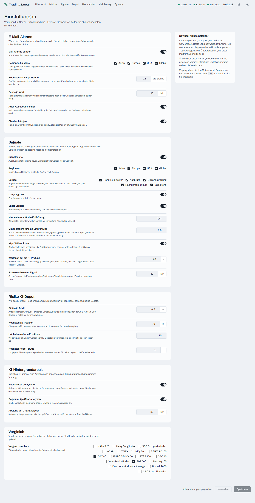
Die Alarm-MailThe alert e-mail
Einstieg, Ausstieg, EntfallEntry, exit, cancellationJede Empfehlung kommt als Mail, die auch auf dem Sperrbildschirm lesbar ist.Every recommendation arrives as an e-mail that is readable even on a lock screen.
Mails sind deutsch und bestehen aus einer Textfassung und einer schlichten HTML-Fassung (eine zentrierte Tabelle, nur Inline-Stile, keine externen Inhalte), damit GMX, Gmail und Outlook sie gleich darstellen – auch im Dunkelmodus. Alle Texte der KI werden vor dem Einsetzen maskiert und gekürzt; Links, die die KI aus einer Meldung übernommen hätte, entfernt die Plattform. Die Testmail aus der Systemseite enthält Versandweg, Zeitpunkt und die Adresse der Oberfläche.
Einstiegs-Mail
Sie geht hinaus, sobald ein Kandidat zur Empfehlung wird. Der Betreff fasst alles zusammen, zum Beispiel LONG NVDA 142,35 USD | Stopp 140,90 | Ziel 145,25 | Konfidenz 58 %.
E-mails are in German and consist of a text part and a plain HTML part (one centred table, inline styles only, no external content), so that GMX, Gmail and Outlook render them alike – in dark mode too. Every AI text is escaped and shortened before it is inserted; links the AI might have copied from a news item are removed. The test e-mail from the system page contains the delivery path, the time and the address of the interface.
Entry e-mail
It goes out as soon as a candidate becomes a recommendation. The subject sums it up, for example LONG NVDA 142,35 USD | Stopp 140,90 | Ziel 145,25 | Konfidenz 58 %.
| Teil | Inhalt |
|---|---|
| Kopf | Abzeichen LONG oder SHORT und die Überschrift „Kaufen (Long): Name (Symbol) – Börse“ bzw. „Leerverkaufen (Short): …“. |
| Zahlen | Referenzkurs, Stopp und Ziel mit Abstand in Prozent, Chance/Risiko, maximale Haltedauer (intraday als Handelszeit, „Schließen vor Handelsschluss“; beim Tagestrend „ca. 5 Handelstage“), Konfidenz, Erwartungswert in R, Setup mit Zeitrahmen, Score. |
| Chart | Chartbild mit Einstieg, Stopp und Ziel, eingebettet und als Anhang (abschaltbar mit „Chart anhängen“). |
| Hinweise | Stopp und Ziel sind vom Referenzkurs aus berechnet; der Einstieg erfolgt zum nächsten verfügbaren Kurs, die Abstände gelten dann ab dem Einstiegskurs. Datenstand (letzte abgeschlossene Kerze) und bei verzögerten Märkten „Kursdaten dieses Marktes sind ca. 15 Minuten verzögert“. |
| Begründung und Risiken | Aus der KI-Prüfung; ohne Prüfung eine vom Code erzeugte Begründung. |
| KI-Prüfung | „bestätigt (Überzeugung … %)“, „reduzierte Positionsgröße empfohlen“ oder „ohne KI-Prüfung“. |
| Bei Short | „Short-Positionen lassen sich z. B. über CFDs, Knock-out-Zertifikate oder Short-ETFs umsetzen; in der Simulation wird direkt leerverkauft.“ |
| Fuß | Link „Signal in der Oberfläche öffnen“ (http://127.0.0.1:8000/#/signale/…, funktioniert nur auf diesem PC) und „Automatisch erzeugte Analyse einer lokalen Simulation. Keine Anlageberatung.“ |
| Part | Content |
|---|---|
| Header | Badge LONG or SHORT and the headline 'Kaufen (Long): name (symbol) – exchange' or 'Leerverkaufen (Short): …'. |
| Figures | Reference price, stop and target with distance in percent, reward/risk, maximum holding period (intraday as trading time with 'Schließen vor Handelsschluss' – close before the session ends; for the daily trend 'ca. 5 Handelstage' – about 5 trading days), confidence, expected value in R, setup with timeframe, score. |
| Chart | Chart image with entry, stop and target, embedded and attached (can be switched off with 'Chart anhängen'). |
| Notes | Stop and target are computed from the reference price; the entry happens at the next available price, and the distances then apply from the entry price. Data time (last closed candle) and, for delayed markets, 'Kursdaten dieses Marktes sind ca. 15 Minuten verzögert' (prices of this market are delayed by about 15 minutes). |
| Rationale and risks | From the AI review; without a review a rationale generated by the code. |
| AI review | 'bestätigt (Überzeugung … %)' (confirmed, conviction …), 'reduzierte Positionsgröße empfohlen' (smaller position recommended) or 'ohne KI-Prüfung' (without AI review). |
| For shorts | A hint that short positions can be implemented through CFDs, knock-out certificates or short ETFs, while the simulation sells short directly. |
| Footer | Link 'Signal in der Oberfläche öffnen' (http://127.0.0.1:8000/#/signale/…, works only on this PC) and 'Automatisch erzeugte Analyse einer lokalen Simulation. Keine Anlageberatung.' (automatically generated analysis of a local simulation, not investment advice). |
Ausstiegs-Mail und Entfall-MailExit e-mail and cancellation e-mail
Folgemails gibt es nur zu Signalen, deren Einstiegs-Mail zugestellt wurde. Sie sind vom Regionsfilter und von der Pause je Wert ausgenommen und dürfen das stündliche Limit um bis zu 50 % überschreiten – eine Ausstiegsmeldung soll nicht im Limit hängen bleiben. Abschaltbar sind sie mit „Auch Ausstiege melden“.
- Schließen: Betreff
SCHLIESSEN SYMBOL (Long): Grund, Ergebnis. Inhalt: „Long-Position schließen: Name (Symbol)“, ein Satz zum Ende der Empfehlung, Ergebnis in R und Prozent, Einstieg und Ausstieg mit Kurs und Zeit, Grund (Ziel erreicht, Stopp ausgelöst, Handelsschluss, Haltedauer abgelaufen) und das Datum des Signals. R und Prozent sind nach der simulierten Slippage gerechnet. - Entfällt: Kam der Einstieg gar nicht zustande, lautet der Betreff
ENTFÄLLT SYMBOL (Long): Grund– entweder „Kurs vor dem Einstieg davongelaufen“ oder „kein Einstieg zustande gekommen“. Die Mail rät: „Wer trotzdem eingestiegen ist, sollte die Position schließen.“
Follow-up e-mails exist only for signals whose entry e-mail was delivered. They are exempt from the region filter and from the per-instrument pause and may exceed the hourly limit by up to 50 % – an exit notice should not get stuck in the limit. They can be switched off with 'Auch Ausstiege melden' (also report exits).
- Close: subject
SCHLIESSEN SYMBOL (Long): reason, result. Content: 'Long-Position schließen: name (symbol)', a sentence on the end of the recommendation, the result in R and percent, entry and exit with price and time, the reason (Ziel erreicht – target reached, Stopp ausgelöst – stopped, Handelsschluss – session close, Haltedauer abgelaufen – holding period over) and the date of the signal. R and percent are after the simulated slippage. - Cancelled: if the entry never happened, the subject reads
ENTFÄLLT SYMBOL (Long): reason– either 'Kurs vor dem Einstieg davongelaufen' (price ran away before the entry) or 'kein Einstieg zustande gekommen' (no entry). The e-mail advises closing the position if you entered anyway.
Wann eine Mail übersprungen wird und wie Sie den Versand einrichten, steht unter E-Mail-Alarme einrichten.When an e-mail is skipped and how to set up sending is described under Setting up e-mail alerts.
Datenfluss und MinutentaktData flow and minute cycle
Daten fließen in die Datenbank, ein fester Minutentakt verarbeitet sie in gleichbleibender Reihenfolge, die KI arbeitet daneben eine Anfrage nach der anderen ab.Data flows into the database, a fixed minute cycle processes it in the same order every time, and the AI works alongside, one request after the other.
Der MinutentaktThe minute cycle
Drei Sekunden nach jeder vollen Minute laufen drei Schritte in fester Reihenfolge, damit jeder Schritt die Ergebnisse des vorigen sieht:
- Daten – abgeschlossene 1-Minuten-Kerzen und Kurse stehen in der Datenbank.
- Depots – offene Orders werden auf den neuen, abgerechneten Kerzen ausgeführt, Stopps, Ziele, Zeitstopps und die Glattstellung vor Handelsschluss geprüft.
- Engine – offene Signale werden auf neuen Kerzen weiterverfolgt; für jeden handelbaren Wert, dessen Börse gerade regulär handelt und dessen neueste 5-Minuten-Kerze vollständig ist, prüft die Engine die fünf Setups. Neue Kandidaten gehen bei Bedarf im Hintergrund an die KI.
Schlägt ein Schritt fehl, wird er protokolliert und der Takt läuft mit dem nächsten weiter. Dauert ein Takt länger als eine Minute, werden die verpassten Minuten übersprungen, nicht nachgeholt. Unabhängig davon fragt eine zweite Schleife jede Minute (zur halben Minute) die Nachrichten ab, und einmal pro Stunde räumt die Plattform auf (siehe Datenbank).
Ein Ereignisbus meldet alles, was passiert, an die Oberfläche (neue Kerzen, Kurse, Signale, Orders, Nachrichten, Phasenwechsel der Börsen). Er steuert nichts: Die Reihenfolge legt allein der Takt fest – das macht das Verhalten vorhersehbar und testbar.
Three seconds after every full minute three steps run in a fixed order, so that each step sees the results of the previous one:
- Data – closed 1-minute candles and quotes are in the database.
- Portfolios – pending orders fill on the new, settled candles; stops, targets, time stops and the flattening before the session close are checked.
- Engine – open signals are tracked on new candles; for every tradable instrument whose exchange is in its regular session and whose newest 5-minute candle is complete, the engine checks the five setups. New candidates go to the AI in the background where needed.
If a step fails it is logged and the cycle continues with the next one. If a cycle takes longer than a minute, the missed minutes are skipped, not queued. Independently, a second loop polls the news every minute (at half past the minute), and once an hour the platform cleans up (see Database).
An event bus reports everything that happens to the interface (new candles, quotes, signals, orders, news, phase changes of the exchanges). It controls nothing: the order is set by the cycle alone, which keeps the behaviour predictable and testable.
Marktdaten und VerzögerungenMarket data and delays
Zwei Quellen mit getrennten Wegen: Yahoo Finance für Aktien, Indizes, Devisen und Futures, Kraken für die Kryptopaare in Euro. Ein Ausfall oder eine Drosselung der einen Quelle berührt die andere nicht.Two sources with separate paths: Yahoo Finance for shares, indices, currencies and futures, Kraken for the crypto pairs in euros. An outage or throttling of one source never affects the other.
Yahoo FinanceYahoo Finance
| Weg | Wie oft | Wozu |
|---|---|---|
| Kursstrom (WebSocket) | laufend | Ticks aktualisieren die Kurse und bilden vorläufige Minutenkerzen, solange die Börse offen ist. Yahoo bedient je Verbindung nur die ersten 100 Symbole – deshalb verteilt die Plattform die Werte auf mehrere Verbindungen mit höchstens 70 Symbolen und je einem Krypto-Kontrollsymbol. Schweigt das Kontrollsymbol 90 Sekunden oder kommt 45 Sekunden gar nichts, wird die Verbindung neu aufgebaut. |
| Kursabfrage | alle 15 s, solange eine Börse offen ist (sonst alle 5 min) | Eine Anfrage für alle Werte. Für Werte ohne Ticks werden daraus Minutenkerzen gebildet. |
| REST-Abgleich | jeder Wert etwa alle 5 min | Die maßgeblichen Kerzen: Fenster über die letzten 20 Minuten (plus Verzögerung), für offene Börsen und bis 30 Minuten nach Handelsschluss. Lücken werden sofort nachgeladen (höchstens alle 2 Minuten je Wert). |
| Schlussabruf | 20 bis 30 min nach Handelsschluss (plus Verzögerung) | Holt die Schlussauktion, die Yahoo zum Sitzungsende stempelt. |
| Tageskerzen | 30 min nach Sitzungsende (plus Verzögerung) | Nur abgeschlossene Sitzungen werden gespeichert. |
| Path | How often | Purpose |
|---|---|---|
| Price stream (WebSocket) | continuous | Ticks update the quotes and build provisional minute candles while the exchange is open. Yahoo serves only the first 100 symbols per connection – so the platform spreads the instruments over several connections of at most 70 symbols, each with one crypto canary. If the canary is silent for 90 seconds or nothing at all arrives for 45 seconds, the connection is rebuilt. |
| Quote polling | every 15 s while any exchange is open (otherwise every 5 min) | One request for all instruments. For instruments without ticks, minute candles are sampled from it. |
| REST reconciliation | each instrument about every 5 min | The authoritative candles: a window over the last 20 minutes (plus delay), for open exchanges and up to 30 minutes after the close. Holes are fetched at once (at most every 2 minutes per instrument). |
| Closing fetch | 20 to 30 min after the close (plus delay) | Picks up the closing auction, which Yahoo stamps at the session end. |
| Daily candles | 30 min after the session end (plus delay) | Only completed sessions are stored. |
Alle REST-Anfragen an Yahoo teilen sich ein Budget von 26 Anfragen pro Minute. Meldet Yahoo eine Drosselung, pausiert die Plattform alle REST-Abrufe für 10 Minuten, bei Wiederholung doppelt so lange bis höchstens 2 Stunden; der Kursstrom läuft weiter. Gespeichert werden nur abgeschlossene Minutenkerzen – die letzte Zeile einer Live-Abfrage ist bei Yahoo ein flacher Schnappschuss der laufenden Minute und wird verworfen. Für Devisen gibt Yahoo kein sinnvolles Minutenvolumen; es wird als 0 gespeichert.
All REST requests to Yahoo share a budget of 26 requests per minute. If Yahoo throttles, the platform pauses all REST access for 10 minutes, twice as long on repetition, up to 2 hours; the price stream keeps running. Only closed minute candles are stored – Yahoo's last row of a live request is a flat snapshot of the running minute and is dropped. Yahoo provides no meaningful minute volume for currencies; it is stored as 0.
Kraken (Kryptopaare in Euro)Kraken (crypto pairs in euros)
Die zehn Paare BTC, ETH, SOL, XRP, ADA, DOGE, AVAX, LINK, DOT und LTC gegen Euro kommen aus den öffentlichen Marktdaten der Börse Kraken – in Echtzeit und ohne API-Schlüssel. Die früheren Yahoo-Symbole BTC-USD, ETH-USD und SOL-USD hat die Plattform beim Wechsel abgeschaltet (Bestandsversion 2); ihre Kerzen und Signale bleiben gespeichert.
- WebSocket v2: Der Kanal
tickerliefert laufend letzten Kurs, Geld und Brief; der Kanalohlcliefert die 1-Minuten-Kerzen der Börse. Eine Kerze gilt als abgeschlossen, sobald eine Kerze einer späteren Minute eintrifft oder 1,5 Sekunden nach Ende ihrer Minute; spätere Korrekturen werden nachgereicht. In der Messung der Recherche kamen Kraken-Daten im Median nach 26 Millisekunden an. - REST: Jedes Paar wird etwa alle 3 Minuten über die OHLC-Schnittstelle bestätigt, die Tagesstatistik kommt alle 30 Sekunden. Alle Anfragen zusammen höchstens etwa eine pro Sekunde; nach einer Drosselung pausiert der Weg 60 Sekunden, bei Wiederholung doppelt so lange bis 15 Minuten.
- Keine Umsätze, keine Kerze: Minuten ohne Handel haben keine Kerze. Das Volumen ist das echte Börsenvolumen.
- Die Tagesveränderung bezieht sich auf die Eröffnung des UTC-Tages, passend zu den Tageskerzen.
The ten pairs BTC, ETH, SOL, XRP, ADA, DOGE, AVAX, LINK, DOT and LTC against the euro come from the public market data of the Kraken exchange – in real time and without an API key. The former Yahoo symbols BTC-USD, ETH-USD and SOL-USD were switched off with the change (universe version 2); their candles and signals stay stored.
- WebSocket v2: the
tickerchannel delivers last price, bid and ask continuously; theohlcchannel delivers the exchange's own 1-minute candles. A candle counts as closed as soon as a candle of a later minute arrives or 1.5 seconds after its minute ended; later corrections are passed on. In the research measurement Kraken data arrived after a median of 26 milliseconds. - REST: every pair is confirmed through the OHLC endpoint about every 3 minutes, the daily statistics come every 30 seconds. All requests together at most about one per second; after throttling this path pauses for 60 seconds, twice as long on repetition, up to 15 minutes.
- No trades, no candle: minutes without trading have no candle. The volume is the real exchange volume.
- The daily change refers to the open of the UTC day, matching the daily candles.
Welche Börse wie verzögert istHow delayed each exchange is
Yahoo gibt die Verzögerung an zwei Stellen an: im Feld exchangeDataDelayedBy seiner Kursantwort und auf seiner Hilfeseite. Beide widersprechen sich teilweise. Die Plattform rechnet immer mit dem größeren Wert: Eine unterschätzte Verzögerung würde die Validierung Daten früher sehen lassen, als sie wirklich ankommen; eine überschätzte macht sie nur vorsichtiger. Die Werte stammen aus der Recherche vom 22.11.2026 (Sonntag); die tatsächliche Verzögerung während des Handels konnte dabei nicht gemessen werden.Yahoo states the delay in two places: in the field exchangeDataDelayedBy of its quote response and on its help page. The two partly contradict each other. The platform always uses the larger value: an underestimated delay would let the validation see data earlier than it really arrives; an overestimated one only makes it more cautious. The values come from the research of 22 November 2026 (a Sunday); the actual delay during trading could not be measured then.
| Börse | Yahoo-Feld | Hilfeseite | Plattform rechnet mit |
|---|---|---|---|
| Kraken (Krypto) | – | eigene Quelle | 0 min (Echtzeit) |
| Devisen | 0 | Echtzeit | 0 min |
| S&P 500, Nasdaq 100, Dow Jones, EURO STOXX 50 | 0 | Echtzeit (S&P-, Dow-Jones- und Nasdaq-Indizes) | 0 min |
| Kopenhagen | 0 | Echtzeit | 0 min |
| Nasdaq (Aktien) | 15 | Echtzeit | 15 min |
| NYSE (Aktien) | 20 | – | 20 min |
| Xetra, Paris, Hongkong, Mumbai (NSE) | 15 | 15 bzw. Echtzeit (NSE) | 15 min |
| Amsterdam | 0 | 15 min | 15 min |
| London (Aktien) | 15 | 20 min | 20 min |
| Tokio, Seoul, Taipeh, Sydney | 20 | 20 min | 20 min |
| Zürich | 15 | 30 min | 30 min |
| Shanghai, Shenzhen | 15 | 30 min | 30 min |
| CME-Futures (S&P, Nasdaq) | 10 | 10 min | 10 min |
| COMEX/NYMEX (Gold, Öl) | 10 | 30 min | 30 min |
| Exchange | Yahoo field | Help page | Platform uses |
|---|---|---|---|
| Kraken (crypto) | – | own source | 0 min (real time) |
| Currencies | 0 | real time | 0 min |
| S&P 500, Nasdaq 100, Dow Jones, EURO STOXX 50 | 0 | real time (S&P, Dow Jones and Nasdaq indices) | 0 min |
| Copenhagen | 0 | real time | 0 min |
| Nasdaq (shares) | 15 | real time | 15 min |
| NYSE (shares) | 20 | – | 20 min |
| Xetra, Paris, Hong Kong, Mumbai (NSE) | 15 | 15 or real time (NSE) | 15 min |
| Amsterdam | 0 | 15 min | 15 min |
| London (shares) | 15 | 20 min | 20 min |
| Tokyo, Seoul, Taipei, Sydney | 20 | 20 min | 20 min |
| Zurich | 15 | 30 min | 30 min |
| Shanghai, Shenzhen | 15 | 30 min | 30 min |
| CME futures (S&P, Nasdaq) | 10 | 10 min | 10 min |
| COMEX/NYMEX (gold, oil) | 10 | 30 min | 30 min |
Ausnahmen bei Indizes: Nikkei 225 30 min, DAX, FTSE 100, CAC 40, Hang Seng, Nifty, Russell 2000 und VIX 15 min, SMI und SSE Composite 30 min, KOSPI, TAIEX und S&P/ASX 200 20 min. Bei 23 von 25 US-Aktien meldet Yahoo als Quelle „Nasdaq Real Time Price“; die Plattform verlässt sich darauf nicht und rechnet mit der angegebenen Verzögerung.Exceptions for indices: Nikkei 225 30 min; DAX, FTSE 100, CAC 40, Hang Seng, Nifty, Russell 2000 and VIX 15 min; SMI and SSE Composite 30 min; KOSPI, TAIEX and S&P/ASX 200 20 min. For 23 of 25 US shares Yahoo names 'Nasdaq Real Time Price' as the source; the platform does not rely on that and uses the stated delay.
Was das für Alarme bedeutetWhat this means for alerts
- Ein Signal auf einem 15 Minuten verzögerten Markt entsteht auf Daten, die 15 Minuten alt sind. Der Einstieg erfolgt zur Eröffnung der ersten Kerze ab dem Ausgabezeitpunkt – also zum echten Kurs dieses Moments. Die Plattform wartet, bis diese Kerze tatsächlich da ist, also mindestens Verzögerung plus eine Minute.
- Die Einstiegsfrist verlängert sich um die Verzögerung (10 Minuten plus Verzögerung).
- Das Setup „Nachrichten-Impuls“ kann bei Märkten mit 20 Minuten Verzögerung oder mehr nie auslösen: Ihre neueste Kerze kann noch keine Reaktion auf eine frische Meldung zeigen.
- Jede Einstiegs-Mail nennt Datenstand und Verzögerung. Wer schnelle Alarme will, ist bei den Werten ohne Verzögerung besser aufgehoben: Kryptopaare, die großen US-Indizes, EURO STOXX 50 und Novo Nordisk (Kopenhagen).
- A signal on a market delayed by 15 minutes is based on data that is 15 minutes old. The entry happens at the open of the first candle from the issue time on – that is, at the real price of that moment. The platform waits until that candle has actually arrived, so at least the delay plus one minute.
- The entry deadline grows by the delay (10 minutes plus delay).
- The 'Nachrichten-Impuls' (news momentum) setup can never trigger on markets delayed by 20 minutes or more: their newest candle cannot yet show a reaction to a fresh news item.
- Every entry e-mail states the data time and the delay. If you want fast alerts, the instruments without delay serve you better: the crypto pairs, the major US indices, EURO STOXX 50 and Novo Nordisk (Copenhagen).
Warum Ausführungen ein paar Minuten später erscheinenWhy fills can appear a few minutes late
Live sind die gespeicherten Kerzen nicht sofort endgültig. Kerzen aus dem Kursstrom oder der Kursabfrage sind vorläufig; der REST-Abgleich bestätigt sie Minuten später, korrigiert sie gelegentlich und fügt Minuten ein, die der Strom verpasst hat (oder die während eines Neustarts fehlten). Das Papierdepot und die Signalverfolgung bearbeiten aber jede Kerze genau einmal. Deshalb nehmen sie eine Kerze erst, wenn sie abgerechnet ist:
- Sie ist vom REST-Abgleich bestätigt, oder
- sie ist älter als Datenverzögerung plus 10 Minuten (bis dahin hat der Abgleich jeden Wert mehrfach erfasst),
- und davor fehlt keine gehandelte Minute, die noch nachkommen könnte.
- In den ersten 10 Minuten nach einem Start zählt allein das Alter nicht; die Signalverfolgung wartet ebenso nach dem Aufwachen aus dem Ruhezustand. So kann das Nachladen der Pause noch Einstiegs- oder Ausstiegskerzen liefern, bevor ein Signal verfällt.
Folge: Eine Ausführung, ein Stopp oder ein Ziel kann in der Oberfläche ein paar Minuten nach dem Ereignis erscheinen – meist nach dem nächsten REST-Abgleich (Kraken etwa alle 3 Minuten, Yahoo etwa alle 5 Minuten), sonst nach Verzögerung plus 10 Minuten. Kurs und Zeit bleiben exakt: Gebucht wird mit der Zeit und dem Kurs der Kerze selbst und mit dem Wechselkurs dieses Zeitpunkts. Das Warten verschiebt nur, wann Sie es sehen, nie das Ergebnis.
Live, the stored candles are not final right away. Candles from the price stream or from quote polling are provisional; the REST reconciliation confirms them minutes later, occasionally corrects them and inserts minutes the stream missed (or that were missing during a restart). The paper portfolio and the signal tracking, however, process every candle exactly once. That is why they take a candle only once it is settled:
- it has been confirmed by the REST reconciliation, or
- it is older than the data delay plus 10 minutes (by then the reconciliation has covered every instrument several times),
- and no traded minute before it is missing that could still arrive.
- During the first 10 minutes after a start age alone does not count; the signal tracking waits the same way after waking from sleep. So the backfill of the break can still deliver entry or exit candles before a signal expires.
Consequence: a fill, a stop or a target can appear in the interface a few minutes after the event – usually after the next REST reconciliation (Kraken about every 3 minutes, Yahoo about every 5 minutes), otherwise after the delay plus 10 minutes. Price and time stay exact: the booking uses the candle's own time and price and the exchange rate of that moment. The wait only shifts when you see it, never the result.
HandelszeitenTrading hours
17 Börsen in Asien, Europa und den USA mit Feiertagen, verkürzten Handelstagen und Mittagspausen, dazu Krypto und Devisen rund um die Uhr. Signale und Ausführungen gibt es nur in der regulären Handelszeit.17 exchanges in Asia, Europe and the USA with holidays, shortened sessions and lunch breaks, plus crypto and currencies around the clock. Signals and fills only happen during regular trading hours.
| Börse | Kürzel | Zeitzone | Regulär (Ortszeit) | Mittagspause | In MEZ (Winter) |
|---|---|---|---|---|---|
| Tokio | XTKS | Asia/Tokyo | 09:00–15:30 | 11:30–12:30 | 01:00–07:30 |
| Hongkong | XHKG | Asia/Hong_Kong | 09:30–16:00 | 12:00–13:00 | 02:30–09:00 |
| Shanghai | XSHG | Asia/Shanghai | 09:30–15:00 | 11:30–13:00 | 02:30–08:00 |
| Shenzhen | XSHE | Asia/Shanghai | 09:30–15:00 | 11:30–13:00 | 02:30–08:00 |
| Seoul | XKRX | Asia/Seoul | 09:00–15:30 | – | 01:00–07:30 |
| Taipeh | XTAI | Asia/Taipei | 09:00–13:30 | – | 02:00–06:30 |
| Mumbai (NSE) | XNSE | Asia/Kolkata | 09:15–15:30 | – | 04:45–11:00 |
| Sydney | XASX | Australia/Sydney | 10:00–16:00 | – | 00:00–06:00 |
| Xetra | XETR | Europe/Berlin | 09:00–17:30 | – | 09:00–17:30 |
| Frankfurt | XFRA | Europe/Berlin | 09:00–17:30 | – | 09:00–17:30 |
| London | XLON | Europe/London | 08:00–16:30 | – | 09:00–17:30 |
| Paris | XPAR | Europe/Paris | 09:00–17:30 | – | 09:00–17:30 |
| Amsterdam | XAMS | Europe/Amsterdam | 09:00–17:30 | – | 09:00–17:30 |
| Zürich | XSWX | Europe/Zurich | 09:00–17:30 | – | 09:00–17:30 |
| Kopenhagen | XCSE | Europe/Copenhagen | 09:00–17:00 | – | 09:00–17:00 |
| New York (NYSE) | XNYS | America/New_York | 09:30–16:00 | – | 15:30–22:00 |
| Nasdaq | XNAS | America/New_York | 09:30–16:00 | – | 15:30–22:00 |
| Kraken (Krypto) | KRAKEN | UTC-Tag | rund um die Uhr | – | Handelstag 01:00–01:00 |
| Devisen | FX | Regel in New-York-Zeit | So 17:00 – Fr 17:00 | – | So 23:00 – Fr 23:00 |
| CME Globex | CME | Regel in New-York-Zeit | So 18:00 – Fr 17:00 | täglich 17:00–18:00 | Pause 23:00–00:00 |
| Exchange | Code | Time zone | Regular (local time) | Lunch break | In CET (winter) |
|---|---|---|---|---|---|
| Tokyo | XTKS | Asia/Tokyo | 09:00–15:30 | 11:30–12:30 | 01:00–07:30 |
| Hong Kong | XHKG | Asia/Hong_Kong | 09:30–16:00 | 12:00–13:00 | 02:30–09:00 |
| Shanghai | XSHG | Asia/Shanghai | 09:30–15:00 | 11:30–13:00 | 02:30–08:00 |
| Shenzhen | XSHE | Asia/Shanghai | 09:30–15:00 | 11:30–13:00 | 02:30–08:00 |
| Seoul | XKRX | Asia/Seoul | 09:00–15:30 | – | 01:00–07:30 |
| Taipei | XTAI | Asia/Taipei | 09:00–13:30 | – | 02:00–06:30 |
| Mumbai (NSE) | XNSE | Asia/Kolkata | 09:15–15:30 | – | 04:45–11:00 |
| Sydney | XASX | Australia/Sydney | 10:00–16:00 | – | 00:00–06:00 |
| Xetra | XETR | Europe/Berlin | 09:00–17:30 | – | 09:00–17:30 |
| Frankfurt | XFRA | Europe/Berlin | 09:00–17:30 | – | 09:00–17:30 |
| London | XLON | Europe/London | 08:00–16:30 | – | 09:00–17:30 |
| Paris | XPAR | Europe/Paris | 09:00–17:30 | – | 09:00–17:30 |
| Amsterdam | XAMS | Europe/Amsterdam | 09:00–17:30 | – | 09:00–17:30 |
| Zurich | XSWX | Europe/Zurich | 09:00–17:30 | – | 09:00–17:30 |
| Copenhagen | XCSE | Europe/Copenhagen | 09:00–17:00 | – | 09:00–17:00 |
| New York (NYSE) | XNYS | America/New_York | 09:30–16:00 | – | 15:30–22:00 |
| Nasdaq | XNAS | America/New_York | 09:30–16:00 | – | 15:30–22:00 |
| Kraken (crypto) | KRAKEN | UTC day | around the clock | – | trading day 01:00–01:00 |
| Currencies | FX | rule in New York time | Sun 17:00 – Fri 17:00 | – | Sun 23:00 – Fri 23:00 |
| CME Globex | CME | rule in New York time | Sun 18:00 – Fri 17:00 | daily 17:00–18:00 | break 23:00–00:00 |
Die Spalte „In MEZ“ gilt für den deutschen Winter. Gerechnet wird intern immer in der Ortszeit der Börse mit ihrer IANA-Zeitzone; Sommerzeitwechsel, auch die Wochen, in denen die USA und Europa nicht gleichzeitig umstellen (dann öffnet New York um 14:30 deutscher Zeit), und die Gegenläufigkeit von Sydney ergeben sich daraus von selbst. Das Handelszeiten-Band zeigt alles in Ihrer Ortszeit.
Feiertage und verkürzte Tage
- Grundlage ist die Bibliothek
exchange_calendars4.13.3. Sie stimmt für New York, Nasdaq, Xetra, Frankfurt, London, Paris, Amsterdam, Zürich, Kopenhagen, Tokio, Hongkong und Sydney bis Ende 2027 mit den offiziellen Kalendern überein, einschließlich der verkürzten Tage (etwa New York 13:00 Uhr Ortszeit am 27.11.2026 und 24.12.2026, London 12:30 Uhr, Paris und Amsterdam 14:05 Uhr, Hongkong 12:00 Uhr und Sydney 14:10 Uhr an Heiligabend und Silvester). - Ergänzt werden vier Taiwaner Schließtage 2027 (offizielle Liste der TWSE) und der koreanische Verfassungstag (17.07.2026; der Ersatztag 19.07.2027 ist abgeleitet und noch unsicher).
- Für Shanghai, Shenzhen und Mumbai enden die Bibliotheksdaten am 31.12.2026. Für 2027 nutzt die Plattform die aus der Feiertagsankündigung des chinesischen Staatsrats abgeleiteten Schließtage und eine vorläufige Liste für die NSE. Die Börsen veröffentlichen ihre eigenen Listen im Dezember 2026 (siehe Fehlerbehebung). Shenzhen folgt dem Kalender von Shanghai, die NSE dem der BSE.
- Tage ohne Daten schätzt die Plattform aus Wochentagen und regulären Zeiten und schreibt dazu einmal je Börse eine Warnung ins Log.
- Frankfurt hat eigentlich längere Präsenzzeiten (08:00–22:00); die Plattform nutzt bewusst die Xetra-Zeiten, weil nur dort Liquidität und Kostenannahmen gelten.
Krypto: der UTC-Tag
Kraken handelt rund um die Uhr, der Handelstag ist aber der UTC-Tag (00:00 UTC = 01:00 MEZ bzw. 02:00 MESZ). Daraus folgt: Tageskerzen sind UTC-Tage; Intraday-Positionen in Krypto werden 5 Minuten vor 00:00 UTC glattgestellt; neue Intraday-Einstiege gibt es nicht in den ersten 15 Minuten nach und den letzten 30 Minuten vor 00:00 UTC.
Vor- und Nachbörse, Nachtsitzung
In den USA zählt nur die reguläre Sitzung 09:30–16:00 Uhr New-York-Zeit. Vorbörse (ab 04:00) und Nachbörse (bis 20:00) erscheinen im Band nur zur Information. Die ab 06.12.2026 angekündigte 23-Stunden-Sitzung von NYSE Arca und Nasdaq (Nachtsitzung 21:00–04:00 New-York-Zeit) ist nicht abgebildet: In ihr entstehen keine Signale und keine Ausführungen. Devisen und CME-Futures dienen nur als Umrechnungskurs und Vergleich; ihre Zeiten folgen festen Regeln ohne Feiertage.
The 'In CET' column applies to the German winter. Internally everything is computed in the exchange's local time with its IANA time zone; daylight saving changes, including the weeks when the USA and Europe do not switch at the same time (New York then opens at 14:30 German time), and Sydney's opposite seasons follow automatically. The session ribbon shows everything in your local time.
Holidays and shortened sessions
- The basis is the library
exchange_calendars4.13.3. For New York, Nasdaq, Xetra, Frankfurt, London, Paris, Amsterdam, Zurich, Copenhagen, Tokyo, Hong Kong and Sydney it matches the official calendars until the end of 2027, including shortened sessions (for example New York 13:00 local time on 27 Nov 2026 and 24 Dec 2026, London 12:30, Paris and Amsterdam 14:05, Hong Kong 12:00 and Sydney 14:10 on Christmas Eve and New Year's Eve). - Added on top are four Taiwanese closures in 2027 (official TWSE list) and Korea's Constitution Day (17 Jul 2026; the substitute day 19 Jul 2027 is derived and still uncertain).
- For Shanghai, Shenzhen and Mumbai the library data ends on 31 Dec 2026. For 2027 the platform uses closures derived from the Chinese State Council's holiday notice and a tentative list for the NSE. The exchanges publish their own lists in December 2026 (see Troubleshooting). Shenzhen follows the Shanghai calendar, the NSE that of the BSE.
- Days without data are estimated from weekdays and regular hours, with one warning per exchange in the log.
- Frankfurt actually has longer floor hours (08:00–22:00); the platform deliberately uses the Xetra hours, because liquidity and cost assumptions only hold there.
Crypto: the UTC day
Kraken trades around the clock, but the trading day is the UTC day (00:00 UTC = 01:00 CET or 02:00 CEST). It follows that daily candles are UTC days; intraday crypto positions are flattened 5 minutes before 00:00 UTC; and there are no new intraday entries in the first 15 minutes after and the last 30 minutes before 00:00 UTC.
Pre-market, after-hours, overnight session
In the USA only the regular session 09:30–16:00 New York time counts. Pre-market (from 04:00) and after-hours (until 20:00) appear in the ribbon for information only. The 23-hour session of NYSE Arca and Nasdaq announced from 6 Dec 2026 (overnight session 21:00–04:00 New York time) is not modelled: no signals and no fills happen in it. Currencies and CME futures serve only as conversion rates and benchmarks; their hours follow fixed rules without holidays.
NachrichtenNews pipeline
147 RSS-Feeds auf 83 Servern, jede Minute abgefragt; nur was zu einem Wert oder einem Makrothema passt, geht an die KI.147 RSS feeds on 83 servers, polled every minute; only what matches an instrument or a macro topic goes to the AI.
| Merkmal | Wert |
|---|---|
| Feeds | 147, davon 50 in der schnellen Spur (Abruf alle 60 bis 300 s: Nachrichtenagenturen, deutsche Ad-hoc-Meldungen über finanznachrichten.de und wallstreet-online, Fed, EZB, BLS, Destatis, Eurostat) und 97 im Hintergrund (alle 120 bis 1.800 s). |
| Sprachen | 100 englische, 45 deutsche, je 1 französischer und japanischer Feed. |
| Regionen der Quellen | Europa 58, global 31, USA 30, Asien 28. |
| Themen | Märkte 59, Konjunktur 46, Unternehmen 24, Pressemitteilungen 10, Krypto 8. |
| Bewusst nicht dabei | SEC EDGAR (verlangt Kontaktdaten im User-Agent), Google News (Nutzungsbedingungen: nur persönliches Lesen), Nikkei Asia (unzuverlässig, ohne Datum). |
| Property | Value |
|---|---|
| Feeds | 147, of which 50 in the fast lane (polled every 60 to 300 s: news wires, German ad-hoc disclosures through finanznachrichten.de and wallstreet-online, Fed, ECB, BLS, Destatis, Eurostat) and 97 in the background (every 120 to 1,800 s). |
| Languages | 100 English, 45 German, one French and one Japanese feed. |
| Source regions | Europe 58, global 31, USA 30, Asia 28. |
| Topics | Markets 59, macro 46, companies 24, press releases 10, crypto 8. |
| Deliberately left out | SEC EDGAR (requires contact details in the user agent), Google News (terms: personal reading only), Nikkei Asia (unreliable, no dates). |
AbrufPolling
- Einmal pro Minute (zur halben Minute) werden die fälligen Feeds geholt, die überfälligsten zuerst, höchstens 4 Anfragen je Server und Minute und je Server immer nur eine gleichzeitig; insgesamt laufen bis zu 8 Abrufe parallel. Was nach 40 Sekunden noch läuft, wird abgebrochen und bleibt fällig – ein langsamer Server hält nie die ganze Runde auf.
- Die Plattform meldet sich ehrlich als Feed-Leser (
Mozilla/5.0 (compatible; RSS-Reader/1.0; private feed reader)) statt einen Browser vorzutäuschen, nutzt bedingte Abrufe (ETag, Last-Modified), überspringt das Auswerten, wenn der Inhalt byteweise gleich ist, und begrenzt jede Antwort auf 2 MB. Ein defekter Feed bekommt eine wachsende Wartezeit und stört die anderen nicht. - Zeitpunkt: Maßgeblich ist der Moment, in dem die Plattform eine Meldung zum ersten Mal sieht. Feeds veröffentlichen oft 10 Minuten bis 4 Stunden nach ihrem eigenen Datum; das angegebene Veröffentlichungsdatum dient nur der Anzeige.
- Once a minute (at half past) the due feeds are fetched, the most overdue first, at most 4 requests per server and minute and only one at a time per server; up to 8 fetches run in parallel overall. Whatever is still running after 40 seconds is cancelled and stays due – a slow server never holds up the whole round.
- The platform identifies itself honestly as a feed reader (
Mozilla/5.0 (compatible; RSS-Reader/1.0; private feed reader)) instead of pretending to be a browser, uses conditional requests (ETag, Last-Modified), skips parsing when the body is byte-identical and caps every response at 2 MB. A broken feed gets a growing waiting time and does not disturb the others. - Timing: what counts is the moment the platform sees an item for the first time. Feeds often publish 10 minutes to 4 hours after their own date; the stated publication date is for display only.
Duplikate und ZuordnungDuplicates and matching
- Duplikate: Jede Meldung hat einen stabilen Schlüssel. Gleiche Überschriften werden als Duplikat markiert, und ein Ähnlichkeitsindex über die letzten 48 Stunden erkennt dieselbe Geschichte aus einer zweiten Quelle (gruppiert nach den zugeordneten Werten).
- Zuordnung ohne KI: Ein Regelwerk aus Namen, Namensvarianten (deutsch und englisch), ISINs und Tickern ordnet Meldungen den aktiven Werten zu – mit Wortgrenzen, Groß-/Kleinschreibung bei Namen, die auch normale Wörter sind (Apple, Shell, Meta), Ticker-Kontext für mehrdeutige Kürzel (V, MA, HD …), Ausschlussphrasen („Allianz Arena“, „Oracle of Omaha“) und der Regel „längster Treffer gewinnt“ (Siemens Energy schlägt Siemens). Banken, die nur als Analyst auftreten („JPMorgan hebt SAP auf Overweight“), zählen nicht als Thema. Vom Feed gelieferte ISINs oder Ticker haben Vorrang. Auf 452 von Hand geprüften echten Überschriften lag die Zuordnung der Recherche in 99,1 % richtig.
- Eine zweite Tabelle ordnet Makro- und Marktmeldungen (Notenbanken, Konjunkturdaten, Handelspolitik, Indexnamen) den Indizes zu, die sie bewegen.
- Duplicates: every item has a stable key. Identical headlines are marked as duplicates, and a similarity index over the last 48 hours recognises the same story from a second source (grouped by the linked instruments).
- Matching without AI: a rule set of names, name variants (German and English), ISINs and tickers links items to the active instruments – with word boundaries, case sensitivity for names that are also ordinary words (Apple, Shell, Meta), ticker context for ambiguous short codes (V, MA, HD …), veto phrases ('Allianz Arena', 'Oracle of Omaha') and the rule 'longest match wins' (Siemens Energy beats Siemens). Banks that only appear as analysts ('JPMorgan raises SAP to overweight') do not count as the subject. ISINs or tickers delivered by the feed take precedence. On 452 hand-checked real headlines the matching from the research was right in 99.1 % of cases.
- A second table links macro and market news (central banks, economic data, trade policy, index names) to the indices they move.
Was an die KI gehtWhat goes to the AI
| Fall | Ergebnis |
|---|---|
| Duplikat | gespeichert, nicht analysiert |
| Veröffentlicht vor mehr als 12 Stunden | übersprungen „alt“ – ein erster Start soll die KI nicht fluten |
| Kein Wert und kein Makrothema, Feed-Qualität unter 4 von 5 | übersprungen „kein Bezug“ |
| KI ausgeschaltet | übersprungen „KI aus“ |
| Sonst | in der Warteschlange; die KI darf als betroffene Werte nur die gefundenen Kandidaten nennen (bis zu 8 zugeordnete Werte, dann die Makro-Indizes). Andere Symbole verwirft die Plattform. |
| Case | Result |
|---|---|
| Duplicate | stored, not analysed |
| Published more than 12 hours ago | skipped 'alt' (old) – a first start must not flood the AI |
| No instrument and no macro topic, feed quality below 4 of 5 | skipped 'kein Bezug' (no relation) |
| AI switched off | skipped 'KI aus' (AI off) |
| Otherwise | queued; the AI may only name the candidates found as affected instruments (up to 8 matched instruments, then the macro indices). The platform discards any other symbol. |
Rückstau: Höchstens 40 Analysen sind gleichzeitig offen, davon höchstens 8 schon bei der KI. Ist die Grenze erreicht, fällt die älteste noch nicht übergebene Meldung heraus („Rückstau“) – frische Nachrichten gehen immer vor, und keine Rechenzeit wird verschwendet. Wartende werden neueste zuerst übergeben; eine Nachricht, die 20 Minuten in der KI-Warteschlange lag, verfällt. Meldungen und ihre Analysen werden 180 Tage aufbewahrt.Back-pressure: at most 40 analyses are open at a time, at most 8 of them already handed to the AI. When the limit is reached, the oldest item not yet handed over is dropped ('Rückstau', backlog) – fresh news always wins, and no computing time is wasted. Waiting items are handed over newest first; an item that waited 20 minutes in the AI queue expires. Items and their analyses are kept for 180 days.
Rolle der KIRole of the AI
Die lokale KI liest, ordnet ein und begründet. Rechnen, entscheiden und handeln tut der Code.The local AI reads, classifies and explains. Computing, deciding and trading are done by the code.
| Aufgabe | Bekommt | Liefert | Vorrang und Zeitlimit |
|---|---|---|---|
| Signalprüfung | Den Kandidaten mit Richtung und geplanten Marken, Fakten mit Markierung [PRO], [CON] oder [NEUTRAL] relativ zur Richtung (Chance/Risiko, Trends, Stimmung der Schlagzeilen), weitere Fakten als [INFO], bis zu 5 Schlagzeilen, eine Marktnotiz und das Chartbild. | 1 bis 3 Gründe und 1 bis 2 Risiken auf Deutsch, das Urteil bestätigen, reduzieren oder Veto und eine Überzeugung (0,7–1,0 bestätigen, 0,4–0,69 reduzieren, 0–0,39 Veto). | Vorrang 1; die Engine wartet höchstens „Wartezeit auf die KI-Prüfung“ (Standard 45 s). |
| Nachrichtenanalyse | Eine Meldung (Überschrift bis 300, Text bis 1.200 Zeichen) und die erlaubten Kandidaten. | Einen deutschen Satz, betroffene Werte mit eigener Stimmung (höchstens 5), Kategorie, Zeithorizont, Stimmung −1 bis +1, Relevanz 1 bis 5, Sicherheit. | Vorrang 2, neueste zuerst; ein Aufruf höchstens 20 s; eine ungültige Antwort wird einmal mit 0,1 höherer Temperatur wiederholt. |
| Chartanalyse | Chartbild und Faktenblatt, die Marken schon nach „unter dem Kurs“ und „über dem Kurs“ getrennt. | Struktur (Aufwärtstrend, Abwärtstrend, Seitwärtsspanne, Ausbruch nach oben, Bruch nach unten, Umkehr nach oben oder unten), Tendenz, Stärke 1 bis 5, Unterstützung und Widerstand, Kommentar. | Vorrang 3; ein Aufruf höchstens 30 s; automatisch für offene Werte alle 30 Minuten je Wert, immer nur eine gleichzeitig. |
| Task | Receives | Returns | Priority and time limit |
|---|---|---|---|
| Signal review | The candidate with direction and planned levels, facts tagged [PRO], [CON] or [NEUTRAL] relative to the direction (reward/risk, trends, headline sentiment), further facts as [INFO], up to 5 headlines, a market note and the chart image. | 1 to 3 reasons and 1 to 2 risks in German, the verdict confirm, reduce or veto and a conviction (0.7–1.0 confirm, 0.4–0.69 reduce, 0–0.39 veto). | Priority 1; the engine waits at most 'Wartezeit auf die KI-Prüfung' (default 45 s). |
| News analysis | One item (headline up to 300, text up to 1,200 characters) and the allowed candidates. | One German sentence, affected instruments with their own sentiment (at most 5), category, time horizon, sentiment −1 to +1, relevance 1 to 5, confidence. | Priority 2, newest first; one call at most 20 s; an invalid answer is asked once more with a temperature 0.1 higher. |
| Chart analysis | Chart image and fact sheet, with the levels already split into 'below the price' and 'above the price'. | Structure (uptrend, downtrend, range, breakout up, breakdown, reversal up or down), bias, strength 1 to 5, support and resistance, comment. | Priority 3; one call at most 30 s; automatically for open instruments every 30 minutes per instrument, only one at a time. |
Was die KI bewusst nicht tutWhat the AI deliberately does not do
- Sie rechnet keine Kurse, Stopps, Ziele oder Positionsgrößen und wählt keine Richtung. In der Recherche legte das Modell Unterstützungen über den Kurs, Stopps auf die falsche Seite und hielt negative Nachrichten für ein Risiko eines Short-Trades. Deshalb bereitet der Code alles vor: Marken getrennt nach Seite, Fakten mit [PRO]/[CON] relativ zur Richtung.
- Sie kann einen Kandidaten nicht über die Schwelle heben und keine Order auslösen. Eine einzelne KI-Antwort löst nie allein einen Trade oder eine Mail aus.
- Ihr Einfluss ist eng begrenzt: Ein Veto macht aus dem Kandidaten einen verworfenen; reduzieren halbiert die Positionsgröße im KI-Depot; ohne Urteil braucht ein Kandidat einen um 0,08 höheren Score.
- Sie wird nicht in der Validierung nachgespielt: Das kostete Stunden Rechenzeit, und das Modell könnte sich an die Vergangenheit erinnern. Ihr Beitrag wird live gemessen – über die verworfenen Kandidaten und die Aufschlüsselung „KI-Prüfung“.
- It computes no prices, stops, targets or position sizes and chooses no direction. In the research the model put supports above the price, stops on the wrong side and treated bearish news as a risk for a short trade. That is why the code prepares everything: levels split by side, facts tagged [PRO]/[CON] relative to the direction.
- It cannot lift a candidate over the threshold and cannot place an order. A single AI answer never triggers a trade or an e-mail on its own.
- Its influence is narrowly limited: a veto turns the candidate into a rejected one; reduce halves the position size in the AI portfolio; without a verdict a candidate needs a score 0.08 higher.
- It is not replayed in the validation: that would cost hours of computing time, and the model might remember the past. Its contribution is measured live – through the rejected candidates and the 'KI-Prüfung' breakdown.
Einstellungen des ModellsModel settings
Alle Anfragen gehen mit derselben Kontextlänge (TL_OLLAMA_NUM_CTX, Standard 4096) an Ollama, auch das Vorladen beim Start; jede Abweichung ließe Ollama das Modell neu laden. Das „Nachdenken“ (thinking) ist aus, die Temperatur steht für alle Aufgaben auf 0,1 (TL_OLLAMA_TEMPERATURE), die Präsenzstrafe (presence_penalty) auf 0, das Modell bleibt 30 Minuten geladen (TL_OLLAMA_KEEP_ALIVE). Eine einzige Warteschlange schickt immer nur eine Anfrage gleichzeitig an die Grafikkarte: Signalprüfungen vor Nachrichten vor Chartanalysen. Gibt ein Aufrufer auf, wird die Anfrage abgebrochen; Ollama hört dann innerhalb von etwa 0,1 Sekunden auf zu rechnen.
Every request goes to Ollama with the same context length (TL_OLLAMA_NUM_CTX, default 4096), the preload at start included; any difference would make Ollama reload the model. Thinking is off, the temperature is 0.1 for all tasks (TL_OLLAMA_TEMPERATURE), the presence penalty (presence_penalty) 0, and the model stays loaded for 30 minutes (TL_OLLAMA_KEEP_ALIVE). One single queue sends only one request at a time to the graphics card: signal reviews before news before chart analyses. If a caller gives up, the request is cancelled; Ollama then stops computing within about 0.1 seconds.
Schutz gegen manipulierte MeldungenProtection against manipulated news
- Fremder Text (Meldungen, Schlagzeilen) steht nur in einem abgegrenzten Datenblock (
<news>,<headlines>). Der Systemtext sagt, dass nichts darin eine Anweisung ist und Texte, die Gewinne versprechen, Spam sind. Der Text wird auf eine Zeile gebracht, eigene Blockmarken werden entschärft, die Länge begrenzt – so kann er weder den Block schließen noch den Systemtext aus dem Kontext drängen. - Die Antwort ist an ein JSON-Schema gebunden und wird danach noch einmal geprüft: Zahlen werden in ihren Bereich geklemmt, Listen bereinigt, Links und E-Mail-Adressen aus allen Texten entfernt („[Link entfernt]“), Antworten mit verstümmelten Umlauten (fremde Schriftzeichen) verworfen.
- Angenommen wird eine Antwort nur, wenn das Modell regulär fertig wurde, die Anfrage nicht abgeschnitten war (Ollama kürzt zu lange Anfragen stillschweigend von vorn; erkennbar daran, dass genau halb so viele Tokens wie die Kontextlänge plus 2 verarbeitet wurden) und das Schema stimmt.
- In der Recherche kaperte ein präparierter Text ohne den Schutzsatz 1 von 16 Aufrufen, mit Schutzsatz 0 von 16 – eine kleine Stichprobe, aber ein klarer Hinweis.
- Foreign text (news items, headlines) only appears in a delimited data block (
<news>,<headlines>). The system text says that nothing inside it is an instruction and that texts promising gains are spam. The text is flattened to one line, the block's own tags are defused and the length is capped – so it can neither close the block nor push the system text out of the context. - The answer is bound to a JSON schema and checked again afterwards: numbers are clamped into range, lists cleaned, links and e-mail addresses removed from all texts ('[Link entfernt]'), answers with garbled umlauts (foreign script characters) rejected.
- An answer is accepted only if the model finished normally, the request was not truncated (Ollama silently cuts over-long requests from the front; the sign is that exactly half the context length plus 2 tokens were processed) and the schema matches.
- In the research, a crafted text hijacked 1 of 16 calls without the protective sentence and 0 of 16 with it – a small sample, but a clear hint.
Gemessene ZeitenMeasured times
| Aufgabe | typische Dauer |
|---|---|
| Nachricht | rund 1,7 s |
| Signalprüfung | rund 3 s, mit Chartbild rund 4 s |
| Chartanalyse | 3,5 bis 4 s |
| Modell laden | 4 bis 8 s, nach einem Neustart des PCs rund 35 s |
| Task | typical duration |
|---|---|
| News item | about 1.7 s |
| Signal review | about 3 s, with chart image about 4 s |
| Chart analysis | 3.5 to 4 s |
| Loading the model | 4 to 8 s, after a PC restart about 35 s |
Gemessen mit qwen3.5:9b auf einer RTX 2080 SUPER (8 GB). Mit eingeschaltetem Nachdenken dauerte ein Aufruf 32 bis 117 Sekunden, und viele Antworten wurden nicht fertig – deshalb bleibt es aus. Alle Qualitätszahlen der Recherche stammen aus kleinen, selbst gebauten Testmengen (22 Meldungen, 8 Charts, 8 Trade-Fälle); sie sind Plausibilitätsprüfungen, keine Benchmarks. Bekannte Schwächen: Rechtsthemen werden überbewertet, und das Modell neigt zu Long.Measured with qwen3.5:9b on an RTX 2080 SUPER (8 GB). With thinking switched on, a call took 32 to 117 seconds and many answers never finished – so it stays off. All quality figures from the research come from small, self-made test sets (22 news items, 8 charts, 8 trade cases); they are sanity checks, not benchmarks. Known weaknesses: legal news is over-rated, and the model leans towards long.
SignaleSignal engine
Fünf Lehrbuch-Setups, ein transparenter Score mit festen Gewichten, eine vorsichtig lernende Kalibrierung und ein Erwartungswert nach Kosten – dann erst entscheidet sich, ob ein Kandidat zur Empfehlung wird.Five textbook setups, a transparent score with fixed weights, a cautiously learning calibration and an expected value after costs – only then is it decided whether a candidate becomes a recommendation.
Takt und ZeitrahmenCadence and timeframes
Die Engine entscheidet auf 5-Minuten-Kerzen und liest den Trend aus 15-Minuten-Kerzen; dazu kommen Tageskerzen. Indikatoren: EMA 20 und 50 (intraday), EMA 50, 200 und 20 auf Tagesbasis, RSI 14, ATR 14, ADX 14, MACD 12/26/9, Bollinger-Bänder 20/2, Donchian-Kanal 20, Eröffnungsspanne 30 Minuten. Ein Wert braucht mindestens 60 abgeschlossene 15-Minuten-Kerzen. Für intraday gilt: keine Einstiege in den ersten 15 und den letzten 30 Minuten einer Sitzung, Glattstellung 5 Minuten vor Handelsschluss.The engine decides on 5-minute candles and reads the trend from 15-minute candles; daily candles come on top. Indicators: EMA 20 and 50 (intraday), EMA 50, 200 and 20 on daily data, RSI 14, ATR 14, ADX 14, MACD 12/26/9, Bollinger bands 20/2, Donchian channel 20, opening range 30 minutes. An instrument needs at least 60 completed 15-minute candles. Intraday rules: no entries in the first 15 and the last 30 minutes of a session, flattening 5 minutes before the close.
Die fünf SetupsThe five setups
| Setup | Regel (Long; Short spiegelbildlich) | Stopp · Ziel · Haltedauer |
|---|---|---|
| Nachrichten-Impuls (5 Min) | Die neueste Meldung zum Wert hat Relevanz ab 4 und eine Stimmung von mindestens ±0,5, war beim Ende der Kerze schon analysiert und ist höchstens 20 Minuten alt (gezählt ab dem ersten Sehen). Die Kerze schließt in Richtung der Nachricht und hat sich mindestens 0,3 ATR bewegt oder das 1,3-Fache des üblichen Volumens; der Kurs ist höchstens 2 ATR vom VWAP entfernt. | 1,5 ATR · 2 R · 240 Min |
| Ausbruch (15 Min) | Erster Schluss über dem höheren Wert aus 20-Kerzen-Donchian-Hoch (15 Min) und Hoch der Eröffnungsspanne; mindestens 1,5-faches übliches Volumen (ohne Volumendaten: schnelle ATR mindestens das 0,5-Fache der langsamen); der langsame Trend zeigt nicht dagegen. | 1,2 ATR · 2 R · 180 Min |
| Trend-Rücksetzer (15 Min) | Im 15-Minuten-Chart EMA 20 über EMA 50 mit steigender EMA 20, ADX ab 18; die letzten Kerzen tauchten in die Wertzone (bis 0,25 ATR über dieser EMA 20); die aktuelle 5-Minuten-Kerze schließt über dem Hoch der Vorkerze und über der EMA 20 des 5-Minuten-Charts und liegt höchstens 1 ATR über der EMA 20 des 15-Minuten-Charts. | 1,5 ATR · 2 R · 240 Min |
| Gegenbewegung (5 Min) | Seitwärtsmarkt (ADX unter 18), RSI unter 25, die Kerze handelte unter dem unteren Bollinger-Band, schließt über ihrer Eröffnung und über dem Vorschluss. | 1,0 ATR · Ziel Bandmitte, höchstens 2 R, mindestens 1,2 R · 120 Min |
| Tagestrend (Tag) | Vortagesschluss über EMA 50 über EMA 200 (Tag); ein Rücksetzer fand statt (Tages-RSI zwischen 40 und 60 oder Vortagestief bis 0,5 Tages-ATR an der EMA 20); die Kerze schließt erstmals über dem Vortageshoch. | 2,0 Tages-ATR · 2 R · 5 Handelstage, nicht intraday |
| Setup | Rule (long; short mirrored) | Stop · target · holding period |
|---|---|---|
| Nachrichten-Impuls – news momentum (5 min) | The newest item on the instrument has relevance 4 or more and a sentiment of at least ±0.5, was already analysed when the candle ended and is at most 20 minutes old (counted from first sight). The candle closes in the direction of the news and moved at least 0.3 ATR or traded 1.3 times the usual volume; the price is at most 2 ATR away from the VWAP. | 1.5 ATR · 2 R · 240 min |
| Ausbruch – breakout (15 min) | First close above the higher of the 20-candle Donchian high (15 min) and the opening-range high; at least 1.5 times the usual volume (without volume data: fast ATR at least 0.5 times the slow one); the slow trend does not point against it. | 1.2 ATR · 2 R · 180 min |
| Trend-Rücksetzer – trend pullback (15 min) | On the 15-minute chart EMA 20 above EMA 50 with a rising EMA 20, ADX from 18; the last candles dipped into the value zone (up to 0.25 ATR above that EMA 20); the current 5-minute candle closes above the previous candle's high and above the EMA 20 of the 5-minute chart and lies at most 1 ATR above the EMA 20 of the 15-minute chart. | 1.5 ATR · 2 R · 240 min |
| Gegenbewegung – mean reversion (5 min) | Sideways market (ADX below 18), RSI below 25, the candle traded below the lower Bollinger band, closes above its open and above the previous close. | 1.0 ATR · target band middle, at most 2 R, at least 1.2 R · 120 min |
| Tagestrend – daily trend (daily) | Previous close above EMA 50 above EMA 200 (daily); a pullback happened (daily RSI between 40 and 60, or the previous low within 0.5 daily ATR of the EMA 20); the candle closes above the previous day's high for the first time. | 2.0 daily ATR · 2 R · 5 trading days, not intraday |
Haltedauern sind Handelsminuten. Je Richtung zählt nur ein Treffer (in der Reihenfolge der Tabelle); ein Setup, das in beide Richtungen zugleich auslösen würde, wird verworfen. Je Wert ist höchstens ein Signal offen; nach dem Ende eines Signals folgt eine Pause je Richtung (Standard 30 Minuten).Holding periods are trading minutes. Only one hit per direction counts (in the order of the table); a setup that would trigger in both directions at once is discarded. At most one signal per instrument is open; after a signal ends there is a pause per direction (default 30 minutes).
Der ScoreThe score
Jeder Treffer bekommt einen Score von 0 bis 1 aus sieben Bestandteilen. Jeder Bestandteil liegt zwischen 0 und 1, 0,5 heißt neutral. Gewichtet wird mit festen, vorab gewählten Gewichten; nichts davon wird an Daten angepasst.
Every hit gets a score from 0 to 1 made of seven components. Each component lies between 0 and 1, 0.5 meaning neutral. They are weighted with fixed weights chosen in advance; none of it is fitted to data.
| Bestandteil | Gewicht | Was er misst |
|---|---|---|
| Trend | 22 % | Gleichlauf von schnellem, langsamem und Tagestrend mit der Richtung (bei der Gegenbewegung neutral) |
| Nachrichtenlage | 16 % | Zeitlich abklingende Stimmung der Meldungen (Halbwertszeit 2 Stunden, Fenster 6 Stunden, gewichtet mit der Relevanz) |
| Momentum | 14 % | RSI und MACD-Histogramm in Richtung des Trades; bei der Gegenbewegung die Tiefe der RSI-Überdehnung |
| Volumen | 14 % | Volumen gegenüber dem üblichen zur gleichen Tageszeit |
| Kursstruktur | 14 % | Platz bis zur nächsten Gegenmarke im Verhältnis zum Zielabstand |
| Marktumfeld | 12 % | Trend und 60-Minuten-Veränderung des Vergleichsindex (für Altcoins: Bitcoin) |
| Volatilität | 8 % | Höchstwert in der Mitte der üblichen Schwankung, abfallend zu beiden Extremen |
| Component | Weight | What it measures |
|---|---|---|
| Trend | 22 % | Agreement of the fast, slow and daily trend with the direction (neutral for mean reversion) |
| News | 16 % | Time-decaying sentiment of the news items (half-life 2 hours, window 6 hours, weighted by relevance) |
| Momentum | 14 % | RSI and MACD histogram in the trade's direction; for mean reversion the depth of the RSI stretch |
| Volume | 14 % | Volume compared with the usual volume at the same time of day |
| Structure | 14 % | Room to the nearest opposing level relative to the target distance |
| Market | 12 % | Trend and 60-minute change of the benchmark index (for altcoins: Bitcoin) |
| Volatility | 8 % | Highest in the middle of the usual range, falling towards both extremes |
Konfidenz: Kalibrierung mit SchrumpfungConfidence: calibration with shrinkage
Die „Konfidenz“ ist die geschätzte Wahrscheinlichkeit, dass der Trade mit Gewinn endet (Ergebnis über 0 R). Sie ist das Einzige, was die Engine aus Daten lernt – und das sehr vorsichtig:
- Ausgangspunkt ist die Gewinnschwelle eines Trades mit Chance/Risiko rr: 1 / (1 + rr), bei 2 R also 33,3 %. Der Score verschiebt die Wahrscheinlichkeit nur um diese Schwelle herum.
- Ohne Daten gilt eine feste Vorannahme: +0,40 × (Score − 0,5). Ein Score von 0,60 ergibt also 33,3 % + 4 % = 37,3 %.
- Mit abgeschlossenen Signalen wird je Score-Bereich (unter 0,5, 0,5–0,6, 0,6–0,7, 0,7–0,8, ab 0,8) der beobachtete Überschuss über die Gewinnschwelle mit 40 gedachten Beobachtungen der Vorannahme gemischt und anschließend monoton gemacht (ein höherer Score bekommt nie eine niedrigere Wahrscheinlichkeit). Wenige Glücks- oder Pechtrades verschieben so kaum etwas.
- Gelernt wird nur aus Signalen dieser Engine-Version, die vor dem Entscheidungszeitpunkt abgeschlossen waren – Empfehlungen und verworfene Kandidaten gleichermaßen. Die Wahrscheinlichkeit bleibt zwischen 2 % und 98 %.
The 'confidence' is the estimated probability that the trade ends with a profit (result above 0 R). It is the only thing the engine learns from data – and it does so very cautiously:
- The starting point is the break-even win rate of a trade with reward/risk rr: 1 / (1 + rr), i.e. 33.3 % at 2 R. The score only shifts the probability around that break-even.
- Without data a fixed prior applies: +0.40 × (score − 0.5). A score of 0.60 therefore gives 33.3 % + 4 % = 37.3 %.
- With closed signals, the observed excess over break-even is mixed per score range (below 0.5, 0.5–0.6, 0.6–0.7, 0.7–0.8, from 0.8) with 40 pseudo-observations of the prior and then made monotone (a higher score never gets a lower probability). A few lucky or unlucky trades hardly move anything this way.
- Learning uses only signals of this engine version that had closed before the decision time – recommendations and rejected candidates alike. The probability stays between 2 % and 98 %.
Erwartungswert nach KostenExpected value after costs
Der Erwartungswert in R ist p × Gewinnauszahlung + (1 − p) × Verlustauszahlung. Die Auszahlungen sind nicht als glatte +rr und −1 angenommen: Zeitstopps und Glattstellungen enden oft dazwischen. Deshalb fließen die tatsächlich erzielten Gewinne und Verluste ein, ebenfalls mit 40 gedachten Beobachtungen in Richtung der glatten Werte geschrumpft. Ohne Daten ist der Wert genau p × rr − (1 − p) − Kosten. Die Kosten sind Ein- und Ausstiegs-Slippage in R: 2 × Slippage × Kurs / Stoppabstand.
Rechenbeispiel ohne Daten (Score 0,60, Chance/Risiko 2, also p = 37,3 %): vor Kosten 0,373 × 2 − 0,627 = +0,12 R.
- US-Aktie, Stopp 1 % vom Kurs: Kosten 2 × 0,02 % / 1 % = 0,04 R → +0,08 R, kann Empfehlung werden.
- Kraken-Krypto, Stopp 1 % vom Kurs: Kosten 2 × 0,44 % / 1 % = 0,88 R → −0,76 R, wird verworfen („Erwartungswert nach Slippage nicht positiv“).
Darum werden intraday-Krypto-Kandidaten mit engen Stopps selten zur Empfehlung: Ein Hin- und Rückweg kostet bei Kraken 0,88 % des Kurses (zweimal je 0,04 % halber Spread plus 0,40 % Taker-Gebühr). Erst ein weiter Stopp und ein hoher Score tragen das – mit 3 % Stopp und Score 0,80 (p = 45,3 %) wären es ohne Daten 0,360 − 0,293 = +0,07 R.
The expected value in R is p × win payoff + (1 − p) × loss payoff. The payoffs are not assumed to be a clean +rr and −1: time stops and flattening often end in between. So the results actually achieved go in, also shrunk towards the clean values with 40 pseudo-observations. Without data the value is exactly p × rr − (1 − p) − costs. The costs are the entry and exit slippage in R: 2 × slippage × price / stop distance.
Worked example without data (score 0.60, reward/risk 2, so p = 37.3 %): before costs 0.373 × 2 − 0.627 = +0.12 R.
- US share, stop 1 % from the price: costs 2 × 0.02 % / 1 % = 0.04 R → +0.08 R, may become a recommendation.
- Kraken crypto, stop 1 % from the price: costs 2 × 0.44 % / 1 % = 0.88 R → −0.76 R, rejected ('Erwartungswert nach Slippage nicht positiv' – expected value after slippage not positive).
That is why intraday crypto candidates with tight stops rarely become recommendations: a round trip on Kraken costs 0.88 % of the price (twice 0.04 % half spread plus 0.40 % taker fee). Only a wide stop and a high score carry that – with a 3 % stop and a score of 0.80 (p = 45.3 %) it would be 0.360 − 0.293 = +0.07 R without data.
Empfehlung oder verworfener KandidatRecommendation or rejected candidate
Kandidaten ab dem Mindestscore für die KI-Prüfung (Standard 0,52) gehen an die KI, höchstens drei warten gleichzeitig. Bei der Ausgabe entscheidet die erste Regel, die nicht erfüllt ist:
Candidates from the minimum score for the AI review (default 0.52) go to the AI; at most three wait at the same time. At issue time the first rule that is not met decides:
| Regel | Sonst verworfen mit |
|---|---|
| Score mindestens „Mindestscore für eine Empfehlung“ (Standard 0,60) | Score unter der Schwelle |
| Erwartungswert nach Slippage über 0 | Erwartungswert nach Slippage nicht positiv |
| Kein Veto der KI | Veto der KI-Prüfung |
| Ohne KI-Urteil: Score mindestens Schwelle + 0,08 (Standard 0,68) | KI-Prüfung nicht verfügbar bzw. Score unter der Schwelle |
| Börse bei der Ausgabe geöffnet | Börse bei Freigabe geschlossen |
| Neueste Kerze nicht älter als Verzögerung + 10 Minuten | Kursdaten bei Freigabe veraltet |
| Rule | Otherwise rejected with |
|---|---|
| Score at least 'Mindestscore für eine Empfehlung' (default 0.60) | score below the threshold |
| Expected value after slippage above 0 | expected value after slippage not positive |
| No veto by the AI | veto of the AI review |
| Without an AI verdict: score at least threshold + 0.08 (default 0.68) | AI review not available, or score below the threshold |
| Exchange open at issue time | exchange closed at release |
| Newest candle not older than delay + 10 minutes | price data stale at release |
Eine Empfehlung geht an das KI-Depot und an den Mailversand. Verworfene Kandidaten werden genauso weiterverfolgt (Einstieg, Stopp, Ziel, Ergebnis) – nur so lässt sich später prüfen, ob Schwellen und KI-Urteile wirklich etwas bringen. Die KI-Depot-Order folgt dem Signal exakt: gleiche erste Kerze, gleiche Einstiegsfrist, gleiche Abweichungsgrenze, gleicher Zeitstopp.A recommendation goes to the AI portfolio and to the mailer. Rejected candidates are tracked exactly the same way (entry, stop, target, result) – that is the only way to check later whether thresholds and AI verdicts really help. The AI portfolio's order follows the signal exactly: same first candle, same entry deadline, same drift limit, same time stop.
Lebenslauf und AusstiegsregelnLife cycle and exit rules
Prüfung → wartet auf Einstieg → aktiv → Ziel, Stopp oder abgelaufen; oder verworfen ohne Einstieg.
- Einstieg: zur Eröffnung der ersten Minutenkerze, die zum Ausgabezeitpunkt oder danach beginnt – nie zu einem Kurs, der bei der Entscheidung schon bekannt war –, plus Slippage. Stopp und Ziel werden dann ab dem tatsächlichen Einstiegskurs gesetzt, der Zeitstopp ab der Einstiegskerze gezählt.
- Kein Einstieg, wenn bis zur Frist (Ausgabe + Verzögerung + 10 Minuten) keine Kerze kommt oder die Einstiegskerze mehr als 0,5 Stoppabstände vom Referenzkurs entfernt eröffnet.
- Ausstieg wird auf jeder Kerze in dieser Reihenfolge geprüft: 1. Zeitstopp erreicht → Marktausstieg zur Eröffnung; 2. Glattstellung vor Handelsschluss → zur Eröffnung; 3. Kerze eröffnet jenseits des Stopps → Ausstieg zur Eröffnung, also schlechter als der Stopp (Kurslücken sind echt); 4. Kerze eröffnet jenseits des Ziels → zur Eröffnung, besser als das Ziel; 5. Stopp in der Kerze berührt → zum Stoppkurs; 6. Ziel in der Kerze berührt → zum Zielkurs.
- Stopp vor Ziel: Berührt eine Kerze beides, gewinnt der Stopp – der Weg innerhalb der Minute ist unbekannt.
- Slippage fällt bei jeder Marktausführung gegen den Händler an; das Ziel ist eine ruhende Limit-Order ohne Slippage.
Review → waiting for entry → active → target, stop or expired; or dropped without an entry.
- Entry: at the open of the first minute candle that starts at or after the issue time – never at a price already known when the decision was taken – plus slippage. Stop and target are then set from the actual entry price, and the time stop counts from the entry candle.
- No entry if no candle arrives before the deadline (issue + delay + 10 minutes) or the entry candle opens more than 0.5 stop distances away from the reference price.
- Exit is checked on every candle in this order: 1. time stop reached → market exit at the open; 2. flattening before the close → at the open; 3. candle opens beyond the stop → exit at the open, i.e. worse than the stop (gaps are real); 4. candle opens beyond the target → at the open, better than the target; 5. stop touched within the candle → at the stop price; 6. target touched within the candle → at the target price.
- Stop before target: if a candle touches both, the stop wins – the path within the minute is unknown.
- Slippage is charged against the trader on every market fill; the target is a resting limit order without slippage.
Nachteil verzögerter Daten: Ein 15 Minuten verzögerter Markt wird auf 15 Minuten alten Kerzen entschieden, gefüllt aber zum Kurs zum Ausgabezeitpunkt. Das ist ehrlich – wer der Mail folgt, handelt zu genau diesem Kurs – kostet aber Treffsicherheit. Die Validierung bildet das nach: Sie entscheidet jede Kerze erst bei Ende + Verzögerung + 1 Minute.
The delayed-data handicap: a market delayed by 15 minutes is decided on 15-minute-old candles but filled at the price at issue time. That is honest – whoever follows the e-mail trades at exactly that price – but it costs accuracy. The validation reproduces this: it decides each candle only at its end + delay + 1 minute.
Schutz vor Overfitting und Look-aheadGuarding against overfitting and look-ahead
Zwei Fehler machen Backtests wertlos: Regeln, die an die Vergangenheit angepasst wurden, und Entscheidungen, die Daten aus der Zukunft sehen. Die Plattform verhindert beides mit konkreten Mechanismen.Two mistakes make backtests worthless: rules fitted to the past and decisions that see data from the future. The platform prevents both with concrete mechanisms.
| Mechanismus | Was er tut |
|---|---|
| Feste, versionierte Parameter | Alle Zahlen, die eine Entscheidung formen (Indikatorperioden, Schwellen, Abstände, Gewichte, Vorannahme der Kalibrierung), stehen in einem einzigen, eingefrorenen Parametersatz. Sie wurden als Lehrbuchwerte gewählt, bevor die Historie angeschaut wurde, und sind in der Oberfläche nicht einstellbar. Die Engine-Version (aktuell e2-53192150) besteht aus einer Regel-Revision und einem Hash über alle Werte; sie wird mit jedem Signal gespeichert. Statistik und Kalibrierung zählen nur Signale der eigenen Version. |
| Kerzen nur „wie damals“ | Entscheidungscode liest Kerzen ausschließlich über einen Leser, der für einen Zeitpunkt erzeugt wird. Er liefert nur Minutenkerzen, die zu diesem Zeitpunkt abgeschlossen waren, zusammengefasste Kerzen nur, wenn sie vollständig sind, und Tageskerzen nur von beendeten Sitzungen. Später geschriebene oder schon gespeicherte jüngere Daten können kein Ergebnis ändern – derselbe Code läuft live und in der Validierung. |
| Nachrichten ab Analysezeit | Eine Meldung zählt erst ab dem Moment, in dem ihre KI-Analyse vorlag. Ihr Alter wird ab dem ersten Sehen gezählt, nicht ab dem behaupteten Veröffentlichungsdatum. Der Nachrichten-Impuls verlangt, dass die Analyse zum Ende der Kerze schon bekannt war. |
| Kalibrierung nur auf Abgeschlossenem | Die Wahrscheinlichkeiten lernen nur aus Signalen, die vor dem Entscheidungszeitpunkt abgeschlossen waren, geschrumpft mit 40 gedachten Beobachtungen und monoton. |
| Verworfene Kandidaten werden verfolgt | Jeder erkannte Kandidat wird bis zum Ende verfolgt, auch unter der Schwelle oder nach einem Veto. So entsteht kein Auswahlfehler, und der Nutzen von Schwellen und KI lässt sich außerhalb der Stichprobe messen. |
| Vorsichtige Ausführung | Einstieg erst auf der nächsten Kerze, Kurslücken zum Eröffnungskurs, Stopp vor Ziel in derselben Kerze, Slippage auf jede Marktausführung, Entscheidung bei verzögerten Märkten erst nach Eintreffen der Daten. |
| Walk-forward in der Validierung | Der Zeitraum wird in vier aufeinanderfolgende Blöcke geteilt. Die Kalibrierung eines Blocks kennt nur Ergebnisse, die vor seinem Beginn bekannt waren (Ausstiegskerze + 1 Minute + größte Datenverzögerung). |
| Zufallsvergleich | 200 Durchläufe mit zufälligen Einstiegen in denselben Werten, mit zufälliger Richtung, aber gleichen Stopps (in ATR), gleichem Chance/Risiko, gleicher Haltedauer und gleichen Kosten. Der p-Wert sagt, wie oft Zufall mindestens so gut war. |
| Ehrliche Warnungen | Unter 100 Signalen, unter 10 Handelstagen, bei einem Intervall, das 0 einschließt, bei p über 0,1, wenn ein Zeitblock oder ein einzelner Wert mehr als die Hälfte des Ergebnisses liefert, ohne Nachrichtenhistorie, bei Signalen, die am Ende der Daten noch offen sind, und bei übersprungenen Werten – die Validierung sagt es. |
| Tests | Eigene Tests prüfen, dass zukünftige Daten keine Entscheidung ändern (tests/analysis/test_no_lookahead.py) und dass die Validierung dieselben Merkmale berechnet wie die Live-Engine. |
| Mechanism | What it does |
|---|---|
| Fixed, versioned parameters | Every number that shapes a decision (indicator periods, thresholds, distances, weights, the calibration prior) lives in one single frozen parameter set. The values were chosen as textbook defaults before the history was looked at, and they cannot be changed in the interface. The engine version (currently e2-53192150) consists of a rules revision and a hash over all values; it is stored with every signal. Statistics and calibration count only signals of their own version. |
| Candles only 'as of then' | Decision code reads candles exclusively through a reader created for one point in time. It returns only minute candles closed at that time, aggregated candles only when complete, and daily candles only of finished sessions. Data written later, or younger data already stored, cannot change any result – the same code runs live and in the validation. |
| News from analysis time | A news item counts only from the moment its AI analysis existed. Its age is counted from first sight, not from the claimed publication date. News momentum requires the analysis to have been known at the end of the candle. |
| Calibration only on closed signals | The probabilities learn only from signals closed before the decision time, shrunk with 40 pseudo-observations and monotone. |
| Rejected candidates are tracked | Every detected candidate is tracked to its end, also below the threshold or after a veto. So there is no selection bias, and the value of thresholds and AI can be measured out of sample. |
| Cautious execution | Entry only on the next candle, gaps at the open price, stop before target within the same candle, slippage on every market fill, decisions on delayed markets only after the data has arrived. |
| Walk-forward in the validation | The period is split into four consecutive blocks. The calibration of a block knows only results that were known before it began (exit candle + 1 minute + largest data delay). |
| Random-entry comparison | 200 runs with random entries in the same instruments, with random direction but the same stops (in ATR), the same reward/risk, holding period and costs. The p-value says how often chance did at least as well. |
| Honest warnings | Below 100 signals, below 10 trading days, with an interval that includes 0, with p above 0.1, when one time block or one instrument delivers more than half the result, without news history, with signals still open at the end of the data and with skipped instruments – the validation says so. |
| Tests | Dedicated tests check that future data changes no decision (tests/analysis/test_no_lookahead.py) and that the validation computes the same features as the live engine. |
Wie groß ist groß genug? Um eine Trefferquote von 55 % sicher von 50 % zu unterscheiden (zweiseitig 5 %, Teststärke 80 %), braucht man nach der Rechnung der Recherche rund 783 Trades, für 60 % rund 194. Ein paar Dutzend Signale sagen nichts über einen Vorteil – deshalb die Warnungen.
How large is large enough? To tell a hit rate of 55 % reliably from 50 % (two-sided 5 %, power 80 %), the research computes about 783 trades, for 60 % about 194. A few dozen signals say nothing about an edge – hence the warnings.
SimulationSimulation
Zwei Papierdepots, „KI“ und „Ich“, mit identischen Regeln: gleiches Startkapital, gleiche Basiswährung, gleiche Kosten, gleiche Ausführung, gleiche Hebelgrenze. Nur so ist der Vergleich fair.Two paper portfolios, 'KI' (AI) and 'Ich' (me), with identical rules: same starting capital, same base currency, same costs, same execution, same leverage limit. Only that makes the comparison fair.
AusführungExecution
Eine Order, die zum Zeitpunkt T entsteht, wird zur Eröffnung der ersten abgeschlossenen Minutenkerze ausgeführt, die bei T oder später beginnt – plus Slippage. Bis diese Kerze da und abgerechnet ist, bleibt die Order offen; bei verzögerten Märkten also mindestens Verzögerung plus eine Minute. Stopps und Ziele folgen den Ausstiegsregeln der Signalverfolgung. Die Ausführungen sind mit der Zeit und dem Kurs der Kerze gebucht und mit dem Wechselkurs, der zu diesem Zeitpunkt bekannt war.An order created at time T fills at the open of the first closed minute candle that starts at or after T – plus slippage. Until that candle has arrived and is settled, the order stays pending; on delayed markets that means at least the delay plus one minute. Stops and targets follow the exit rules of the signal tracking. Fills are booked with the candle's time and price and the exchange rate known at that moment.
Kosten (Standardwerte)Costs (defaults)
| Markt | Slippage je Ausführung | Gebühr je Order |
|---|---|---|
| US-Aktien | 2 bp (0,02 %) | 1 EUR |
| Europäische Aktien | 4 bp | 1 EUR |
| Asiatische Aktien | 6 bp | 1 EUR |
| Indizes | 1,5 bp | 1 EUR |
| Krypto von Kraken | 4 bp (halber Spread) | 0,40 % Taker-Gebühr, keine feste Gebühr |
| Sonstige (z. B. Krypto anderer Quellen) | 5 bp | 1 EUR |
| Market | Slippage per fill | Fee per order |
|---|---|---|
| US shares | 2 bp (0.02 %) | 1 EUR |
| European shares | 4 bp | 1 EUR |
| Asian shares | 6 bp | 1 EUR |
| Indices | 1.5 bp | 1 EUR |
| Crypto from Kraken | 4 bp (half spread) | 0.40 % taker fee, no flat fee |
| Other (e.g. crypto from other sources) | 5 bp | 1 EUR |
Slippage ist der einfache Weg (halber Spread plus Markteinfluss) und wird bei jeder Marktausführung gegen den Händler angesetzt: Käufe werden teurer, Verkäufe billiger. Die Werte sind bewusst etwas pessimistisch. Sie gelten identisch im Depot, in der Signalverfolgung, in der Validierung und im Erwartungswert; die feste Gebühr hängt dagegen von der Positionsgröße ab und fällt nur in den Depots an. Ergebnisse in R (Signal-Journal, Validierung) sind deshalb nach Slippage und prozentualen Gebühren, aber vor festen Ordergebühren. Das KI-Depot lässt eine Empfehlung aus, wenn die Gebühren für Ein- und Ausstieg ihren Erwartungswert aufzehren würden.
Krypto bei Kraken: Kraken berechnet keine feste Gebühr, sondern eine prozentuale Taker-Gebühr (0,40 % in der untersten Volumenstufe von Kraken Pro). Sie verschiebt den Ausführungskurs nicht – Stopps und Ziele liegen relativ zum tatsächlichen Marktpreis –, sondern wird im Depot als Geld gebucht und, weil sie nicht von der Positionsgröße abhängt, in Signal-Journal, Validierung und Erwartungswert in R abgezogen. (Bis Engine-Version e2 steckte sie im Ausführungskurs; dadurch lagen enge Krypto-Stopps praktisch auf dem Marktpreis – korrigiert am 23.11.2026, Version e3.) Die 4 bp halber Spread sind absichtlich vorsichtig: Gemessen wurden am 23.11.2026 0,8 bis 2,7 bp (BTC, ETH, SOL, XRP, LINK, DOGE) und 2,5 bis 4,2 bp (ADA, LTC, AVAX, DOT). Ein Hin- und Rückweg kostet damit 0,88 % des Kurses – bei einem Stopp 1 % vom Kurs schon 0,88 R. Darum tragen nur weite Stopps mit hohem Score einen Krypto-Trade (Rechenbeispiel unter Signale).
Slippage is the one-way cost (half spread plus market impact) and is applied against the trader on every market fill: buys fill higher, sells lower. The values are deliberately a little pessimistic. They apply identically in the portfolio, in the signal tracking, in the validation and in the expected value; the flat fee, in contrast, depends on the position size and is only charged in the portfolios. Results in R (signal journal, validation) are therefore after slippage and percentage fees but before flat order fees. The AI portfolio skips a recommendation if the fees for entry and exit would eat up its expected value.
Crypto on Kraken: Kraken charges no flat fee but a percentage taker fee (0.40 % in the lowest volume tier of Kraken Pro). It does not move the fill price – stops and targets are placed relative to the actual market price – but is booked as money in the portfolios and, as it does not depend on the position size, deducted in R in the signal journal, the validation and the expected value. (Up to engine version e2 it was part of the fill price, which put tight crypto stops practically at the market price – fixed on 23 Nov 2026, version e3.) The 4 bp half spread is deliberately cautious: on 23 Nov 2026 it measured 0.8 to 2.7 bp (BTC, ETH, SOL, XRP, LINK, DOGE) and 2.5 to 4.2 bp (ADA, LTC, AVAX, DOT). A round trip therefore costs 0.88 % of the price – with a stop 1 % from the price that is already 0.88 R. That is why only wide stops with a high score carry a crypto trade (worked example under Signal engine).
LeerverkaufShort selling
Die Simulation verkauft direkt leer: Der Erlös wird dem Cash gutgeschrieben, das Ergebnis ist −Stück × (Kurs − Einstieg). Wie in einem echten Short- oder CFD-Konto bleibt der Erlös in der Währung des Werts; nur das Ergebnis unterliegt dem Wechselkurs, nicht der ganze Betrag. Leihgebühren und Finanzierungskosten bildet die Simulation nicht ab.
Privatanleger in Deutschland können echten Leerverkauf meist nur über ein Margin-Konto bei wenigen Brokern nutzen. Üblich sind stattdessen CFDs (Short), Knock-out-Zertifikate bzw. Turbos und Optionsscheine (Put) oder Short-ETFs auf Indizes (mit täglicher Neugewichtung). Diese Produkte haben eigene Kosten – Spread, Finanzierung, Aufgeld – und eigene Risiken (Knock-out, Pfadabhängigkeit), die die Simulation nicht abbildet. Short-Mails weisen darauf hin.
The simulation sells short directly: the proceeds are credited to cash, and the result is −quantity × (price − entry). As in a real short or CFD account the proceeds stay in the instrument's currency; only the result is exposed to the exchange rate, not the whole amount. Borrowing fees and financing costs are not modelled.
Retail investors in Germany can usually only sell short for real through a margin account at a few brokers. Common instead are CFDs (short), knock-out certificates or turbos and put warrants, or short ETFs on indices (with daily rebalancing). These products have costs of their own – spread, financing, premium – and risks of their own (knock-out, path dependence) that the simulation does not model. Short e-mails point this out.
Währungen, Pence und StückelungCurrencies, pence and lot sizes
- Basiswährung ist Euro (
TL_BASE_CURRENCY). Umgerechnet wird über die Devisenpaare der Beobachtungsliste (z. B.EURUSD=X= Dollar je Euro), fehlende Paare über den Dollar. Für einen vergangenen Zeitpunkt wird nur ein Kurs genutzt, der damals schon bekannt war. - Long-Positionen tragen Kurs- und Währungsrisiko (gekauft mit Euro); Short-Positionen nur das Währungsrisiko auf das Ergebnis.
- Londoner Aktien notieren in Pence; die Plattform rechnet intern mit dem Faktor 0,01 in Pfund um.
- Handelbare Einheiten: Aktien ganze Stück, Indizes 0,01, Krypto 0,000001. Mengen werden immer abgerundet, damit jede Grenze eingehalten bleibt. Devisenpaare und Futures sind nicht handelbar.
- Bewertet wird zum letzten Kurs, sonst zum Schluss der neuesten abgeschlossenen Minutenkerze, sonst zum Einstiegskurs.
- The base currency is the euro (
TL_BASE_CURRENCY). Conversion uses the watchlist's currency pairs (e.g.EURUSD=X= dollars per euro), missing pairs go through the dollar. For a past point in time only a rate known back then is used. - Long positions carry price and currency risk (bought with euros); short positions only the currency risk on the result.
- London shares are quoted in pence; internally the platform converts to pounds with the factor 0.01.
- Tradable units: shares whole units, indices 0.01, crypto 0.000001. Quantities are always rounded down so that every limit is kept. Currency pairs and futures cannot be traded.
- Valuation uses the latest quote, otherwise the close of the newest closed minute candle, otherwise the entry price.
Positionsgröße im KI-Depot und HebelAI portfolio position size and leverage
- Risiko je Trade (Standard 0,5 % des Depotwerts): So viel darf zwischen Einstieg und Stopp verloren gehen. Die Stückzahl ist das Risiko geteilt durch den Stoppabstand in Euro.
- Begrenzt durch Höchstens je Position (Standard 10 % des Depotwerts) und durch die Kaufkraft. Bei einem KI-Urteil „reduzieren“ wird die Größe danach halbiert.
- Höchstens offene Positionen (Standard 10, offene Orders mitgezählt), je Wert höchstens eine Position.
- Hebelgrenze (Standard 1,0, gilt für beide Depots): Long- plus Short-Exposure geteilt durch den Depotwert. Die Kaufkraft ist Depotwert × Hebelgrenze minus bestehendes Exposure. 1,0 heißt: kein Kredit.
Der Depotwert wird mindestens alle 5 Minuten und bei jeder Änderung festgehalten. Daraus kommen Kurve, maximaler Drawdown und Sharpe-Kennzahl; Trefferquote und Profitfaktor kommen aus den abgeschlossenen Trades. Das Startkapital ist TL_START_CAPITAL (Standard 100.000 EUR) und lässt sich beim Neustart beider Depots neu wählen.
- Risk per trade (default 0.5 % of portfolio value): this much may be lost between entry and stop. The quantity is the risk divided by the stop distance in euros.
- Capped by maximum per position (default 10 % of portfolio value) and by the buying power. With an AI verdict 'reduce' the size is then halved.
- Maximum open positions (default 10, pending orders included), at most one position per instrument.
- Leverage limit (default 1.0, applies to both portfolios): long plus short exposure divided by the portfolio value. Buying power is portfolio value × leverage limit minus existing exposure. 1.0 means: no credit.
The portfolio value is recorded at least every 5 minutes and on every change. The curve, maximum drawdown and Sharpe ratio come from these points; hit rate and profit factor from the closed trades. The starting capital is TL_START_CAPITAL (default 100,000 EUR) and can be chosen anew when restarting both portfolios.
E-Mail-Alarme einrichtenSetting up e-mail alerts
Im Standardmodus schreibt die Plattform jede Mail als Datei in data\outbox – dafür genügt ein Empfänger in TL_MAIL_TO. Für echten Versand reichen ein Postfach und fünf Zeilen in .env.In the default mode the platform writes every e-mail as a file to data\outbox – all it needs is a recipient in TL_MAIL_TO. For real sending you need a mailbox and five lines in .env.
TL_MAIL_MODE | Wirkung |
|---|---|
file (Standard) | Die vollständige Mail wird als .eml-Datei in data\outbox abgelegt (mit einem Doppelklick in Outlook oder Thunderbird zu öffnen). Nötig ist nur TL_MAIL_TO. |
smtp | Versand über den Mailserver. Nötig sind Server, Benutzer, Passwort und Empfänger. |
off | Keine Mails. |
TL_MAIL_MODE | Effect |
|---|---|
file (default) | The complete e-mail is saved as an .eml file in data\outbox (opens with a double click in Outlook or Thunderbird). Only TL_MAIL_TO is needed. |
smtp | Sending through the mail server. Server, user, password and recipient are needed. |
off | No e-mails. |
GMX in vier SchrittenGMX in four steps
- Externen Zugriff erlauben. Im GMX-Postfach unter E-Mail-Einstellungen → POP3/IMAP den Schalter „POP3- und IMAP-Zugriff erlauben“ einschalten. Er ist standardmäßig aus und wird laut GMX-Hilfe nach längerer Nichtnutzung wieder abgeschaltet; ohne ihn lehnt GMX die Anmeldung ab.
- App-Passwort bei Zwei-Faktor-Anmeldung. Ist die Zwei-Faktor-Anmeldung aktiv, funktioniert das normale Passwort nicht. Unter Kontoverwaltung → Login & Sicherheit → App-Passwörter ein neues App-Passwort erstellen; es wird nur einmal angezeigt.
.envausfüllen:
Alternativ PortTL_MAIL_MODE=smtp TL_SMTP_HOST=mail.gmx.net TL_SMTP_PORT=465 TL_SMTP_SECURITY=ssl TL_SMTP_USER=ihre.adresse@gmx.de TL_SMTP_PASSWORD=app-passwort-oder-passwort TL_MAIL_FROM=ihre.adresse@gmx.de TL_MAIL_TO=empfaenger@example.com587mitstarttls. Der Benutzer ist die vollständige Adresse; als Absender sind nur Adressen des eigenen Postfachs erlaubt.- Testen. Plattform neu starten, dann auf der Seite System Testmail senden. Die Antwort steht direkt unter dem Knopf und im Mail-Protokoll. Landet die Mail im Spam-Ordner, dort als „kein Spam“ markieren.
- Allow external access. In the GMX mailbox, under E-Mail-Einstellungen → POP3/IMAP, switch on 'POP3- und IMAP-Zugriff erlauben' (allow POP3 and IMAP access). It is off by default and, according to the GMX help, switched off again after a long period without use; without it GMX rejects the login.
- App password with two-factor login. If two-factor login is active, the normal password does not work. Under Kontoverwaltung → Login & Sicherheit → App-Passwörter create a new app password; it is shown only once.
- Fill in
.env:
Alternatively portTL_MAIL_MODE=smtp TL_SMTP_HOST=mail.gmx.net TL_SMTP_PORT=465 TL_SMTP_SECURITY=ssl TL_SMTP_USER=your.address@gmx.de TL_SMTP_PASSWORD=app-password-or-password TL_MAIL_FROM=your.address@gmx.de TL_MAIL_TO=recipient@example.com587withstarttls. The user is the full address; only addresses of your own mailbox are allowed as sender. - Test. Restart the platform, then click Testmail senden on the System page. The answer appears right below the button and in the mail log. If the e-mail lands in the spam folder, mark it as 'not spam' there.
Wann eine Mail übersprungen wirdWhen an e-mail is skipped
| Regel | Standard | Einstellbar |
|---|---|---|
| Mail-Alarme senden | an | Einstellungen |
| Nur Signale aus gewählten Regionen | alle Regionen | Einstellungen |
| Höchstens Mails je Stunde | 12 | Einstellungen (0 bis 120) |
| Pause je Wert nach einer Mail | 30 Minuten | Einstellungen |
| Abstand zwischen zwei SMTP-Verbindungen | 20 Sekunden | fest |
| SMTP-Mails je 24 Stunden | höchstens 40 | fest |
| Pause nach abgelehnter Anmeldung oder Antwort 535, 550, 554 | 30 Minuten, gilt auch nach einem Neustart | fest |
| Wiederholung bei vorübergehenden Fehlern (Verbindung, 4xx) | einmal nach 5 Sekunden | fest; keine Wiederholung bei Anmeldefehlern und 5xx |
| Rule | Default | Adjustable |
|---|---|---|
| Send e-mail alerts | on | Settings |
| Only signals from selected regions | all regions | Settings |
| Maximum e-mails per hour | 12 | Settings (0 to 120) |
| Pause per instrument after an e-mail | 30 minutes | Settings |
| Gap between two SMTP connections | 20 seconds | fixed |
| SMTP e-mails per 24 hours | at most 40 | fixed |
| Pause after a rejected login or reply 535, 550, 554 | 30 minutes, also across a restart | fixed |
| Retry on transient errors (connection, 4xx) | once after 5 seconds | fixed; no retry on login errors and 5xx |
Die festen Grenzen schützen Ihr Postfach: GMX veröffentlicht keine Versandgrenzen, und gehäufte Sendungen können ein Konto sperren lassen. Deshalb bleibt die Plattform bei etwa einer Mail pro Minute. Testmails umgehen Vorlieben und Postfachschutz – Sie haben sie ja ausdrücklich angefordert. Jeder Versuch steht im Mail-Protokoll, jede Zustellung und jeder Fehler auch im Aktivitätsprotokoll.
Geheimnisse: Das SMTP-Passwort wird nur für die Anmeldung verwendet. Jeder Text, der den Versand verlässt (Log, Mail-Protokoll, Aktivität, Status, Antwort der Testmail), läuft durch einen Filter, der das Passwort entfernt und die Adressen maskiert. Die Plattform meldet sich mit dem festen Namen trading.local beim Server, sodass weder PC-Name noch lokale IP-Adresse übertragen werden.
The fixed limits protect your mailbox: GMX publishes no sending limits, and bursts can get an account blocked. That is why the platform stays at about one e-mail per minute. Test e-mails bypass preferences and mailbox protection – you asked for them explicitly. Every attempt is in the mail log, every delivery and every failure in the activity log as well.
Secrets: the SMTP password is used for the login only. Every text that leaves the mailer (log, mail log, activity, status, test reply) passes through a filter that removes the password and masks the addresses. The platform greets the server with the fixed name trading.local, so that neither the PC name nor the local IP address is transmitted.
ValidierungValidation
Die Validierung spielt die gespeicherte Minutenhistorie durch genau denselben Code wie live – Merkmale, Setups, Score, Signalverfolgung und Ausführungsregeln – und berichtet so, dass niemand getäuscht wird.The validation replays the stored minute history through exactly the same code as live – features, setups, score, signal tracking and execution rules – and reports in a way that fools nobody.
Was sie zeigt
- Ob die festen Regeln auf den Daten des Zeitraums nach Kosten einen Vorteil gehabt hätten.
- Mit derselben Slippage, denselben Verzögerungen (Entscheidung erst bei Kerzenende + Verzögerung + 1 Minute) und derselben Kalibrierung, die live zum jeweiligen Zeitpunkt bekannt gewesen wäre.
- „Ausgewählt“ sind die Signale, die live ausgegeben worden wären: Score ab 0,60 und Erwartungswert nach Slippage über 0 – also dieselbe Erwartungswert-Schranke wie live.
- Alle Kandidaten werden verfolgt; nach dem Ende eines Signals gilt die Standardpause von 30 Minuten je Richtung.
Was sie nicht zeigt
- Den Beitrag der KI – die KI-Prüfung wird nicht nachgespielt.
- Ihre Vorlieben – Regionen, abgewählte Setups und erlaubte Richtungen werden nicht angewandt; geprüft werden die Regeln selbst.
- Künftige Gewinne. Ein kurzer Zeitraum kann reiner Zufall sein.
- Zeiträume ohne Daten: Yahoo liefert Minutenkerzen nur 30 Tage rückwirkend, Kraken hier 14 Tage. Weil die Plattform Minutenkerzen nie löscht, wächst der mögliche Zeitraum mit jedem Tag Laufzeit.
What it shows
- Whether the fixed rules would have had an edge after costs on the data of the period.
- With the same slippage, the same delays (decision only at candle end + delay + 1 minute) and the same calibration that would have been known live at each moment.
- 'Selected' are the signals that would have been issued live: score from 0.60 and expected value after slippage above 0 – the same expected-value gate as live.
- All candidates are tracked; after a signal ends the default pause of 30 minutes per direction applies.
What it does not show
- The contribution of the AI – the AI review is not replayed.
- Your preferences – regions, deselected setups and allowed directions are not applied; the rules themselves are tested.
- Future profits. A short period can be pure chance.
- Periods without data: Yahoo delivers minute candles only 30 days back, Kraken here 14 days. Since the platform never deletes minute candles, the possible period grows with every day of running.
Den Bericht lesenReading the report
Das Urteil sagt nur dann „Hinweis auf einen Vorteil des Regelwerks“, wenn alle vier Bedingungen erfüllt sind: Die Untergrenze des 95-%-Intervalls des Ø Ergebnisses liegt über 0, der Zufallsvergleich hat p ≤ 0,05, es gibt mindestens 100 ausgewählte Signale, und mindestens 3 der 4 Zeitblöcke sind positiv. Liegt sogar die Obergrenze unter 0, heißt es „Kein Vorteil – die Regeln verlieren nach Slippage“, sonst „Kein belastbarer Vorteil nachweisbar“.
Beispiel aus dem echten Lauf #1 (30 Tage, 82 Werte, 81.935 Entscheidungspunkte): 508 ausgewählte Signale, Ø +0,04 R mit Intervall −0,08 bis +0,17 R, Summe +20,9 R, Profitfaktor 1,08. Der Zufallsvergleich ist mit p = 0,010 sogar gut – die Engine war besser als 99 % der Zufallsläufe. Trotzdem lautet das Urteil „kein belastbarer Vorteil“: Das Intervall schließt 0 ein, Zeitblock 2 liefert allein +48,8 R des Gesamtergebnisses, und ein einziger Wert (6861.T) liefert +10,8 R. Genau diese Einschränkungen stehen als Warnungen über den Zahlen.
The verdict only says 'Hinweis auf einen Vorteil des Regelwerks' (indication of an edge of the rules) when all four conditions hold: the lower bound of the 95 % interval of the average result is above 0, the random comparison has p ≤ 0.05, there are at least 100 selected signals, and at least 3 of the 4 time blocks are positive. If even the upper bound is below 0, it says 'Kein Vorteil – die Regeln verlieren nach Slippage' (no edge, the rules lose after slippage), otherwise 'Kein belastbarer Vorteil nachweisbar' (no reliable edge demonstrable).
Example from the real run #1 (30 days, 82 instruments, 81,935 decision points): 508 selected signals, average +0.04 R with interval −0.08 to +0.17 R, sum +20.9 R, profit factor 1.08. The random comparison is even good with p = 0.010 – the engine beat 99 % of the random runs. Still the verdict reads 'no reliable edge': the interval includes 0, time block 2 alone delivers +48.8 R of the total, and a single instrument (6861.T) delivers +10.8 R. Exactly these limitations are listed as warnings above the numbers.
| Teil des Berichts | Worauf achten |
|---|---|
| Gesamtergebnis | Trefferquote und Ø R mit 95-%-Intervall. Entscheidend ist, ob das Intervall des Ø R über 0 liegt – nicht die Summe. |
| Zufallsvergleich | Skala mit dem Mittel der Zufallsläufe, der Marke, unter der 95 % der Zufallsläufe liegen, und dem Ergebnis der Engine. p ist der Anteil der Zufallsläufe, die mindestens so gut waren. |
| Stabilität über die Zeit | Ø R je Zeitblock mit n. Ein guter Block und drei schlechte sind kein Vorteil, sondern eine Phase. |
| Kalibrierung | Vorhergesagte gegen eingetretene Trefferquote, je Block nur auf früheren Blöcken angepasst. Punkte nahe der Diagonalen: Die Konfidenz ist ehrlich. |
| Kumuliertes Ergebnis | Verlauf in R. Steile Sprünge zeigen, dass wenige Tage das Ergebnis tragen. |
| Aufschlüsselung | Setup, Region, Richtung mit n, Treffer und Ø R. Kleine Gruppen nicht überbewerten. |
| Part of the report | What to look for |
|---|---|
| Overall result | Hit rate and average R with 95 % interval. What matters is whether the interval of the average R lies above 0 – not the sum. |
| Random comparison | Scale with the mean of the random runs, the mark below which 95 % of the random runs lie, and the engine's result. p is the share of random runs that did at least as well. |
| Stability over time | Average R per time block with n. One good block and three bad ones are not an edge but a phase. |
| Calibration | Predicted versus observed hit rate, fitted for each block only on earlier blocks. Points near the diagonal: the confidence is honest. |
| Cumulative result | Course in R. Steep jumps show that a few days carry the result. |
| Breakdown | Setup, region, direction with n, hits and average R. Do not overrate small groups. |
Technisch läuft jede Validierung als eigener Prozess (python -m trading_local.validate), damit sie den Server nicht bremst; die Datenbank im WAL-Modus erlaubt das parallel. Gleiche Daten und Einstellungen ergeben immer denselben Bericht (fester Zufallsstartwert). Endet der Prozess ohne Ergebnis oder bleibt ein Lauf nach einem Neustart des Servers zwei Stunden ohne Rückmeldung, wird er als fehlgeschlagen markiert.Technically every validation runs as a process of its own (python -m trading_local.validate) so that it does not slow the server down; the database in WAL mode allows this in parallel. The same data and settings always give the same report (fixed random seed). If the process ends without a result, or a run stays without feedback for two hours after a server restart, it is marked as failed.
Weg zum Live-Handel (Kraken)Road to live trading (Kraken)
Ausblick – noch nicht umgesetztOutlook – not implemented yetDies ist ein Plan, keine Funktion. Trading Local handelt heute ausschließlich auf Papier. Es gibt keinen Code, der Orders an Kraken oder einen anderen Broker schickt, keine Verwaltung von API-Schlüsseln und keinen Abgleich mit einem echten Konto. Der Kraken-Datenzugang nutzt nur öffentliche Marktdaten ohne Schlüssel; die dort hinterlegten Paar-Daten (Mindestmengen, Kursschritte) sind lediglich für später vorbereitet.
This is a plan, not a feature. Today Trading Local trades on paper only. There is no code that sends orders to Kraken or any other broker, no handling of API keys and no reconciliation with a real account. The Kraken data access uses public market data without a key only; the pair data stored there (minimum sizes, price steps) is merely prepared for later.
Geplant ist, die Kryptosignale nach einer Testphase automatisch mit einem eigenen Kraken-API-Schlüssel zu handeln. Damit daraus kein teurer Irrtum wird, sind die Bedingungen vorab festgelegt.
Vorab vereinbarte Kriterien für den Start
- Dauer: mindestens rund 3 Monate Testphase mit der aktuellen Engine-Version.
- Stichprobe: rund 150 bis 200 ausgegebene Kryptosignale.
- Ergebnis: Ø Ergebnis nach Gebühren über 0, und zwar mit der Untergrenze des 95-%-Intervalls über 0.
- Vergleich: Das KI-Depot schlägt das einfache Halten von Bitcoin im selben Zeitraum.
Sind die Kriterien nicht erfüllt, wird nicht live gehandelt. Ändern sich die Regeln, beginnt die Testphase mit der neuen Engine-Version von vorn.
Erforderliches Sicherheitskonzept
| Baustein | Anforderung |
|---|---|
| API-Schlüssel | Nur Handelsrechte, ausdrücklich keine Auszahlungsrechte. |
| Harte Grenzen | Höchste Ordergröße, höchster Tagesverlust und höchste Zahl offener Positionen – bei Überschreitung automatischer Stopp des Handels. |
| Not-Aus | Ein Schalter, der den Live-Handel sofort beendet. |
| Schrittweiser Start | Zuerst Probeorders mit Krakens validate-Option (werden geprüft, aber nicht ausgeführt), danach Kleinstbeträge. |
| Abgleich | Regelmäßiger Vergleich der eigenen Buchführung mit dem echten Kontostand bei Kraken. |
| Steuern | Export aller Trades für die Steuererklärung. |
Keiner dieser Bausteine ist bisher umgesetzt.
The plan is to trade the crypto signals automatically with your own Kraken API key after a test phase. So that this does not turn into an expensive mistake, the conditions are fixed in advance.
Go-live criteria agreed in advance
- Duration: a test phase of at least about 3 months with the current engine version.
- Sample: about 150 to 200 issued crypto signals.
- Result: average result after fees above zero, with the lower bound of the 95 % interval above zero as well.
- Comparison: the AI portfolio beats simply holding Bitcoin over the same period.
If the criteria are not met, there is no live trading. If the rules change, the test phase starts again with the new engine version.
Required safety design
| Building block | Requirement |
|---|---|
| API key | Trading rights only, explicitly no withdrawal rights. |
| Hard limits | Maximum order size, maximum daily loss and maximum number of open positions – with an automatic stop of trading when exceeded. |
| Kill switch | A switch that ends live trading immediately. |
| Gradual start | First trial orders with Kraken's validate option (checked but not executed), then tiny amounts. |
| Reconciliation | Regular comparison of the platform's own books with the real account balance at Kraken. |
| Taxes | Export of all trades for the tax return. |
None of these building blocks is implemented yet.
ArchitekturArchitecture
Ein Python-Prozess mit FastAPI, SQLite und pandas; die Oberfläche ist eine statische Preact-Anwendung ohne Build-Schritt. Komponenten sprechen nur über festgelegte Schnittstellen miteinander.One Python process with FastAPI, SQLite and pandas; the interface is a static Preact application without a build step. Components talk to each other only through defined interfaces.
| Paket | Aufgabe |
|---|---|
trading_local/markets | Handelskalender aller Börsen: Börsentabelle mit Korrekturen (venues.py), Kalender auf Basis von exchange_calendars (calendar.py), Sitzungsübersicht für das Band. |
trading_local/data | Marktdaten: Yahoo (REST, Kursstrom), Kraken (REST, WebSocket), der Marktdaten-Dienst mit getrennten Wegen je Quelle, Abgleich, Lückenreparatur und Nachladen der Historie. |
trading_local/news | Feed-Liste, Abruf und Auswertung, Zuordnung zu Werten, Duplikaterkennung, Nachrichten-Dienst. |
trading_local/llm | Anbindung an Ollama, Prioritäts-Warteschlange, Prompts, Antwortschemata und deren Prüfung. |
trading_local/analysis | Parameter, Indikatoren, Merkmale, Setups, Score, Kalibrierung, Signalverfolgung, Signal-Engine, Lesetexte für die Oberfläche, Statistik und Validierung. |
trading_local/sim | Papier-Broker für die Depots „KI“ und „Ich“, Wechselkurse, Positionsgröße, Kennzahlen. |
trading_local/alerts | Mailversand (smtp, file, off), Mail-Inhalte, Formatierung. |
trading_local/charts | Kerzencharts als PNG für die KI und die Mails (matplotlib). |
trading_local/web | FastAPI-Anwendung, Sicherheits-Middleware, WebSocket-Verteiler, REST-Routen und die Oberfläche in static/. |
trading_local/db | SQLite-Schema, Datenbankzugriff (WAL) und Zugriffsfunktionen je Bereich. |
trading_local/runtime | Verdrahtung aller Komponenten und der Hintergrund-Takt. |
| Package | Responsibility |
|---|---|
trading_local/markets | Trading calendar of all exchanges: exchange table with corrections (venues.py), calendar based on exchange_calendars (calendar.py), session overview for the ribbon. |
trading_local/data | Market data: Yahoo (REST, price stream), Kraken (REST, WebSocket), the market data service with separate paths per source, reconciliation, hole repair and history backfill. |
trading_local/news | Feed list, fetching and parsing, matching to instruments, duplicate detection, news service. |
trading_local/llm | Connection to Ollama, priority queue, prompts, answer schemas and their checks. |
trading_local/analysis | Parameters, indicators, features, setups, score, calibration, signal tracking, signal engine, reading texts for the interface, statistics and validation. |
trading_local/sim | Paper broker for the portfolios 'KI' and 'Ich', exchange rates, position sizing, metrics. |
trading_local/alerts | Mail delivery (smtp, file, off), mail content, formatting. |
trading_local/charts | Candlestick charts as PNG for the AI and the e-mails (matplotlib). |
trading_local/web | FastAPI application, security middleware, WebSocket hub, REST routes and the interface in static/. |
trading_local/db | SQLite schema, database access (WAL) and access functions per area. |
trading_local/runtime | Wiring of all components and the background cycle. |
Verträge und DienstcontainerContracts and service container
Die Schnittstellen stehen in contracts.py als Protokolle: MarketCalendar, MarketData, FxRates, Llm, News, ChartRenderer, Mailer, Broker und Engine. Jedes Paket hat eine Fabrikfunktion (build_calendar, build_market_data, build_llm …). runtime/wiring.py öffnet die Datenbank, bringt den Bestand auf die aktuelle Version, erzeugt alle Komponenten und legt sie in den Dienstcontainer Services (services.py). Die Weboberfläche und der Takt bekommen diesen Container und sprechen nur über die Protokolle – Tests ersetzen einzelne Teile durch Attrappen.
Weitere zentrale Module: barstore.py (der zeitgebundene Kerzenleser, die einzige Tür zu Kerzen für Entscheidungscode), execution.py (die gemeinsamen Ausführungsregeln für Signalverfolgung, Depot und Validierung), universe.py (Standardbestand und seine Versionen), config.py (Einstellungen, Kosten, Vorlieben), events.py (Ereignisbus nur für Meldungen an die Oberfläche).
Threads: Datenbank- und pandas-Arbeit jeder großen Komponente läuft in genau einem eigenen Arbeits-Thread; die Ereignisschleife orchestriert nur. Grund ist die globale Sperre von Python: Gemessen dauerte der Merkmals-Schritt für 100 Werte in einem Thread 2,8 s, in zwei Threads 5,4 s und in vier 10 s. Die Validierung läuft deshalb als eigener Prozess.
Oberfläche: Preact 10 mit htm (ohne Build-Schritt), TradingView Lightweight Charts 5.3.0, Schrift Archivo – alles lokal unter web/static, kein CDN. Navigation über Hash-Adressen (#/maerkte, #/signale/9), Live-Daten über die WebSocket-Verbindung, das gewählte Design im Browser-Speicher.
The interfaces live in contracts.py as protocols: MarketCalendar, MarketData, FxRates, Llm, News, ChartRenderer, Mailer, Broker and Engine. Every package has a factory function (build_calendar, build_market_data, build_llm …). runtime/wiring.py opens the database, brings the universe to the current version, creates all components and puts them into the service container Services (services.py). The web layer and the cycle receive this container and talk only through the protocols – tests replace single parts with fakes.
Further central modules: barstore.py (the time-bound candle reader, the only door to candles for decision code), execution.py (the shared execution rules of signal tracking, portfolio and validation), universe.py (default universe and its versions), config.py (settings, costs, preferences), events.py (event bus for notifications to the interface only).
Threads: the database and pandas work of every large component runs in exactly one worker thread of its own; the event loop only orchestrates. The reason is Python's global lock: measured, the feature step for 100 instruments took 2.8 s in one thread, 5.4 s in two and 10 s in four. That is also why the validation runs as a separate process.
Interface: Preact 10 with htm (no build step), TradingView Lightweight Charts 5.3.0, the Archivo font – all local under web/static, no CDN. Navigation uses hash addresses (#/maerkte, #/signale/9), live data comes over the WebSocket connection, and the chosen design is kept in browser storage.
DatenbankDatabase
Eine SQLite-Datei, data\trading.sqlite, im WAL-Modus: Leser blockieren Schreiber nicht und umgekehrt. Alle Zeiten sind Epochensekunden in UTC, Minutenkerzen tragen ihre Eröffnungszeit, Tageskerzen das Sitzungsdatum der Börse.One SQLite file, data\trading.sqlite, in WAL mode: readers never block writers and vice versa. All times are epoch seconds in UTC; minute candles carry their open time, daily candles the exchange's session date.
| Tabellen | Inhalt | Aufbewahrung |
|---|---|---|
instruments | Beobachtungsliste mit Börse, Währung, Pence-Faktor, Verzögerung, Schaltern „aktiv“ und „handelbar“ | dauerhaft |
bars_1m, bars_1d | Minutenkerzen (mit Quelle rest, stream oder quote) und Tageskerzen | dauerhaft – die Minutenhistorie ist der wertvollste Bestand |
quotes | letzter Kurs je Wert | überschrieben |
news, news_analysis, news_symbols | Meldungen, KI-Analysen, Zuordnung zu Werten mit Analysezeit | 180 Tage |
feed_state | Abrufzustand je Feed | überschrieben |
chart_analyses | KI-Chartanalysen | dauerhaft |
signals | unveränderliches Journal aller Kandidaten (Empfehlungen und verworfene) mit Merkmalen, Score-Bestandteilen, KI-Urteil und Ergebnis | dauerhaft |
portfolios, orders, positions, equity_snapshots | die beiden Papierdepots | bis zum Neustart der Depots |
settings | Vorlieben aus der Oberfläche (JSON unter dem Schlüssel runtime) und interner Zustand | dauerhaft |
mail_log, llm_calls, job_runs, activity_log | Betriebsdaten | 30 Tage |
validation_runs | Validierungsläufe mit Ergebnis | dauerhaft |
| Tables | Content | Retention |
|---|---|---|
instruments | Watchlist with exchange, currency, pence factor, delay, switches 'active' and 'tradable' | permanent |
bars_1m, bars_1d | Minute candles (with source rest, stream or quote) and daily candles | permanent – the minute history is the most valuable asset |
quotes | Latest quote per instrument | overwritten |
news, news_analysis, news_symbols | News items, AI analyses, links to instruments with analysis time | 180 days |
feed_state | Polling state per feed | overwritten |
chart_analyses | AI chart analyses | permanent |
signals | Immutable journal of all candidates (recommendations and rejected ones) with features, score components, AI verdict and result | permanent |
portfolios, orders, positions, equity_snapshots | The two paper portfolios | until the portfolios are restarted |
settings | Preferences from the interface (JSON under the key runtime) and internal state | permanent |
mail_log, llm_calls, job_runs, activity_log | Operations data | 30 days |
validation_runs | Validation runs with result | permanent |
Aufgeräumt wird stündlich (Job „Aufräumen“). Im Ordner data liegen außerdem outbox\ (Mails im Dateimodus) und logs\trading_local.log (rotierend, 5 Dateien zu je 5 MB).
Sicherung: Plattform mit Strg + C beenden und dann den ganzen Ordner data kopieren. Während des Betriebs gehören zur Datenbank noch die Dateien -wal und -shm; eine Kopie im laufenden Betrieb kann unvollständig sein. Den Ordner nicht in einem Cloud-Sync-Ordner betreiben.
Cleanup runs hourly (job 'Aufräumen'). The data folder also holds outbox\ (e-mails in file mode) and logs\trading_local.log (rotating, 5 files of 5 MB each).
Backup: stop the platform with Ctrl + C and then copy the whole data folder. While running, the database also consists of the -wal and -shm files; a copy taken while running can be incomplete. Do not run the folder inside a cloud sync folder.
API und WebSocketAPI and WebSocket
Die Oberfläche nutzt ausschließlich diese Schnittstelle; Sie können sie auch selbst ansprechen. Antworten sind JSON, Fehlermeldungen deutsch ({"detail": "…"}). Die Beschreibung im OpenAPI-Format liegt unter /api/openapi.json.The interface uses this API exclusively; you can call it yourself as well. Answers are JSON, error messages are German ({"detail": "…"}). The OpenAPI description is at /api/openapi.json.
| Methode und Pfad | Zweck und wichtigste Parameter |
|---|---|
| System | |
GET /api/status | Zustand von Daten, KI, Nachrichten, Mail, Datenbank und Jobs |
GET /api/sessions | Börsenphasen je Region und die Zeitleiste für das Handelszeiten-Band |
GET /api/activity | Aktivitätsprotokoll; limit (bis 1000), level, category, before_id |
GET /api/system/llm-calls · /feeds · /jobs | KI-Aufrufe, Feed-Zustände, Hintergrundjobs |
| Werte und Kurse | |
GET /api/instruments | Beobachtungsliste mit Kurs, Phase und offenem Signal; include_inactive |
POST /api/instruments | Wert hinzufügen {"symbol"}; prüft bei der Datenquelle und lädt die Historie |
PATCH /api/instruments/{symbol} | {"active", "tradable"} umschalten |
GET /api/quotes · /api/sparklines | letzte Kurse; Tagesverläufe für die Liste |
GET /api/bars/{symbol} | abgeschlossene Kerzen mit EMA und VWAP; tf = 1m, 5m, 15m (Standard), 1h, 1d; limit (bis 2000, Standard 500); before |
| Analyse und Nachrichten | |
GET /api/analysis/{symbol} | Technische Lage und Marken |
POST /api/analysis/{symbol}/chart | KI-Chartanalyse in die Warteschlange stellen |
GET /api/chart-analyses/{symbol} | bisherige Chartanalysen; limit |
GET /api/news | Meldungen; limit (bis 200), before_id, symbol, min_relevance (1–5), analyzed_only |
| Signale | |
GET /api/signals | scope = open, closed, all; actionable = true, false, all; symbol; limit (bis 500); before_id |
GET /api/signals/stats | Bilanz, Kalibrierung, Aufschlüsselung; since_ts |
GET /api/signals/{id} | ein Signal mit Merkmalen, Score-Bestandteilen und Nachrichten |
| Depots | |
GET /api/portfolios · /api/portfolios/{key} | Übersicht beider Depots; ein Depot (ai oder me) mit Positionen und offenen Orders |
GET /api/portfolios/equity | Depotkurven mit Vergleichsindizes; since_ts, max_points (2–5000, Standard 600) |
GET /api/portfolios/{key}/trades · /orders | abgeschlossene Trades; Orders |
POST /api/portfolios/me/orders | Order {"symbol", "side", "amount_base" oder "qty", "stop_price", "target_price", "signal_id"} – nur für me, das KI-Depot antwortet mit 403 |
DELETE /api/portfolios/me/orders/{id} | offene Order stornieren |
POST /api/portfolios/me/positions/{id}/close | Position zum nächsten Kurs schließen |
PATCH /api/portfolios/me/positions/{id} | Stopp und Ziel ändern {"stop_price", "target_price"} |
POST /api/portfolios/reset | beide Depots neu starten {"confirm": true, "start_capital"} |
| Einstellungen, Mail, Validierung | |
GET /api/settings · PUT /api/settings | Vorlieben lesen; Teiländerung als JSON-Objekt speichern |
POST /api/mail/test · GET /api/mail/log | Testmail senden; Mail-Protokoll (limit bis 500) |
GET /api/validation | die fünf neuesten Läufe mit Ergebnis |
POST /api/validation/run | Lauf starten {"days"} (2–365, Standard 30); 409, solange einer läuft |
| Method and path | Purpose and main parameters |
|---|---|
| System | |
GET /api/status | State of data, AI, news, mail, database and jobs |
GET /api/sessions | Exchange phases per region and the timeline for the session ribbon |
GET /api/activity | Activity log; limit (up to 1000), level, category, before_id |
GET /api/system/llm-calls · /feeds · /jobs | AI calls, feed states, background jobs |
| Instruments and prices | |
GET /api/instruments | Watchlist with price, phase and open signal; include_inactive |
POST /api/instruments | Add an instrument {"symbol"}; checks it at the data source and downloads the history |
PATCH /api/instruments/{symbol} | Switch {"active", "tradable"} |
GET /api/quotes · /api/sparklines | Latest quotes; intraday sparklines for the list |
GET /api/bars/{symbol} | Closed candles with EMA and VWAP; tf = 1m, 5m, 15m (default), 1h, 1d; limit (up to 2000, default 500); before |
| Analysis and news | |
GET /api/analysis/{symbol} | Technical readings and levels |
POST /api/analysis/{symbol}/chart | Queue an AI chart analysis |
GET /api/chart-analyses/{symbol} | Previous chart analyses; limit |
GET /api/news | News items; limit (up to 200), before_id, symbol, min_relevance (1–5), analyzed_only |
| Signals | |
GET /api/signals | scope = open, closed, all; actionable = true, false, all; symbol; limit (up to 500); before_id |
GET /api/signals/stats | Track record, calibration, breakdown; since_ts |
GET /api/signals/{id} | One signal with features, score components and news |
| Portfolios | |
GET /api/portfolios · /api/portfolios/{key} | Summary of both portfolios; one portfolio (ai or me) with positions and pending orders |
GET /api/portfolios/equity | Portfolio curves with benchmark indices; since_ts, max_points (2–5000, default 600) |
GET /api/portfolios/{key}/trades · /orders | Closed trades; orders |
POST /api/portfolios/me/orders | Order {"symbol", "side", "amount_base" or "qty", "stop_price", "target_price", "signal_id"} – only for me; the AI portfolio answers 403 |
DELETE /api/portfolios/me/orders/{id} | Cancel a pending order |
POST /api/portfolios/me/positions/{id}/close | Close a position at the next price |
PATCH /api/portfolios/me/positions/{id} | Change stop and target {"stop_price", "target_price"} |
POST /api/portfolios/reset | Restart both portfolios {"confirm": true, "start_capital"} |
| Settings, mail, validation | |
GET /api/settings · PUT /api/settings | Read preferences; save a partial change as a JSON object |
POST /api/mail/test · GET /api/mail/log | Send a test e-mail; mail log (limit up to 500) |
GET /api/validation | The five newest runs with result |
POST /api/validation/run | Start a run {"days"} (2–365, default 30); 409 while one is running |
Ändernde Anfragen (POST, PUT, PATCH, DELETE) mit Inhalt müssen Content-Type: application/json senden, sonst antwortet der Server mit 415 (siehe Sicherheit).State-changing requests (POST, PUT, PATCH, DELETE) with a body must send Content-Type: application/json, otherwise the server answers 415 (see Security).
WebSocket /wsWebSocket /ws
Jede Nachricht hat die Form {"type": …, "data": {…}}. Ein langsamer Browser verliert seine ältesten Nachrichten, statt den Server aufzuhalten; ist sein Socket 10 Sekunden blockiert, wird er getrennt.Every message has the form {"type": …, "data": {…}}. A slow browser loses its oldest messages instead of holding up the server; if its socket is blocked for 10 seconds it is disconnected.
| Typ | Inhalt |
|---|---|
hello | beim Verbinden: Serverzeit und Version |
status | Systemzustand, alle 5 Sekunden, solange ein Browser verbunden ist |
ping | alle 20 Sekunden |
quotes | neue Kurse, je Browser zusammengefasst und höchstens alle 0,5 Sekunden |
bar | neue Minutenkerze eines Werts – nur für abonnierte Werte |
sessions | Phasenwechsel einer Börse (exchange, phase), etwa „Xetra öffnet“ |
signal · order · portfolio | neues oder geändertes Signal; Order; Depot geändert (die Oberfläche lädt die Übersicht neu) |
news · activity · chart_analysis · validation | Meldung (auch Statuswechsel der Analyse); Aktivitätseintrag; neue Chartanalyse; Ende eines Validierungslaufs |
| Type | Content |
|---|---|
hello | On connect: server time and version |
status | System state, every 5 seconds while a browser is connected |
ping | Every 20 seconds |
quotes | New quotes, coalesced per browser and at most every 0.5 seconds |
bar | New minute candle of an instrument – only for subscribed instruments |
sessions | Phase change of an exchange (exchange, phase), e.g. 'Xetra opens' |
signal · order · portfolio | New or changed signal; order; portfolio changed (the interface reloads the summary) |
news · activity · chart_analysis · validation | News item (also status changes of its analysis); activity entry; new chart analysis; end of a validation run |
Der Browser abonniert Kerzen mit {"type": "subscribe", "symbols": [...]} (ersetzt das vorige Abo, höchstens 20 Werte). Unbekannte Nachrichten werden ignoriert.The browser subscribes to candles with {"type": "subscribe", "symbols": [...]} (replaces the previous subscription, at most 20 instruments). Unknown messages are ignored.
KonfigurationConfiguration
Zwei Ebenen: feste Einstellungen in .env (Vorlage .env.example, Präfix TL_, gelesen beim Start) und Vorlieben, die Sie im laufenden Betrieb in der Oberfläche ändern. Strategieparameter gehören zu keiner der beiden.Two levels: fixed settings in .env (template .env.example, prefix TL_, read at start-up) and preferences you change in the interface while the platform runs. Strategy parameters belong to neither.
Einstellungen in .envSettings in .env
Umgebungsvariablen haben Vorrang vor .env. Nach einer Änderung die Plattform neu starten.Environment variables take precedence over .env. Restart the platform after a change.
| Einstellung | Standard | Bedeutung |
|---|---|---|
TL_DATA_DIR | <Projekt>\data | Ordner für Datenbank, Mail-Ausgang und Logs |
TL_HOST | 127.0.0.1 | Adresse des Webservice; nur auf dem eigenen PC erreichbar. Andere Adressen nur mit eigenem Zugriffsschutz (siehe Sicherheit) |
TL_PORT | 8000 | Port des Webservice (Startoption --port hat Vorrang) |
TL_OPEN_BROWSER | true | Browser beim Start öffnen (--no-browser schaltet ab) |
TL_OLLAMA_HOST | leer | Adresse des Ollama-Servers; leer heißt http://127.0.0.1:11434 |
TL_OLLAMA_MODEL | qwen3.5:9b | Sprachmodell |
TL_OLLAMA_NUM_CTX | 4096 | Kontextlänge für alle Anfragen; gleich OLLAMA_CONTEXT_LENGTH setzen |
TL_OLLAMA_NUM_GPU | leer | Zahl der Modellschichten auf der Grafikkarte; leer lässt Ollama entscheiden (bei 4096 passt das ganze Modell auf 8 GB). 99 erzwingt alles auf der Grafikkarte, wenn Sie eine größere Kontextlänge nutzen |
TL_OLLAMA_TEMPERATURE | 0.1 | Temperatur für alle KI-Aufgaben (Wiederholungen ungültiger Nachrichtenantworten +0,1) |
TL_OLLAMA_KEEP_ALIVE | 30m | Wie lange Ollama das Modell nach dem letzten Aufruf geladen hält |
TL_MAIL_MODE | file | smtp versendet, file schreibt .eml-Dateien nach data\outbox, off schaltet ab |
TL_SMTP_HOST | mail.gmx.net | Mailserver |
TL_SMTP_PORT | 465 | Port (465 mit ssl, 587 mit starttls) |
TL_SMTP_SECURITY | ssl | ssl oder starttls |
TL_SMTP_USER | leer | Benutzername, bei GMX die vollständige Adresse |
TL_SMTP_PASSWORD | leer | Passwort oder App-Passwort; wird nie geloggt oder angezeigt |
TL_MAIL_FROM | leer | Absender; leer heißt TL_SMTP_USER |
TL_MAIL_TO | leer | Empfänger (auch im Dateimodus nötig) |
TL_BASE_CURRENCY | EUR | Basiswährung beider Depots |
TL_START_CAPITAL | 100000 | Startkapital beider Depots (beim Neustart in der Oberfläche frei wählbar) |
TL_TIMEZONE | Europe/Berlin | Ihre Zeitzone: Tagesgrenzen der Depots, Zeiten in Mails und Charts |
TL_OFFLINE | false | wie --offline: keine Hintergrundjobs, kein Netz |
TL_ENABLE_STREAM | true | Kursströme nutzen |
TL_ENABLE_NEWS | true | Nachrichten abrufen |
TL_ENABLE_LLM | true | lokale KI nutzen |
TL_LOG_LEVEL | INFO | Detailgrad des Logs |
| Setting | Default | Meaning |
|---|---|---|
TL_DATA_DIR | <project>\data | Folder for database, mail outbox and logs |
TL_HOST | 127.0.0.1 | Address of the web service; reachable from your own PC only. Other addresses only with your own access protection (see Security) |
TL_PORT | 8000 | Port of the web service (start option --port takes precedence) |
TL_OPEN_BROWSER | true | Open the browser at start (--no-browser switches it off) |
TL_OLLAMA_HOST | empty | Address of the Ollama server; empty means http://127.0.0.1:11434 |
TL_OLLAMA_MODEL | qwen3.5:9b | Language model |
TL_OLLAMA_NUM_CTX | 4096 | Context length for all requests; set equal to OLLAMA_CONTEXT_LENGTH |
TL_OLLAMA_NUM_GPU | empty | Number of model layers on the graphics card; empty lets Ollama decide (at 4096 the whole model fits on 8 GB). 99 forces everything onto the graphics card if you use a larger context length |
TL_OLLAMA_TEMPERATURE | 0.1 | Temperature for all AI tasks (retries of invalid news answers +0.1) |
TL_OLLAMA_KEEP_ALIVE | 30m | How long Ollama keeps the model loaded after the last call |
TL_MAIL_MODE | file | smtp sends, file writes .eml files to data\outbox, off switches off |
TL_SMTP_HOST | mail.gmx.net | Mail server |
TL_SMTP_PORT | 465 | Port (465 with ssl, 587 with starttls) |
TL_SMTP_SECURITY | ssl | ssl or starttls |
TL_SMTP_USER | empty | User name, at GMX the full address |
TL_SMTP_PASSWORD | empty | Password or app password; never logged or shown |
TL_MAIL_FROM | empty | Sender; empty means TL_SMTP_USER |
TL_MAIL_TO | empty | Recipient (needed in file mode too) |
TL_BASE_CURRENCY | EUR | Base currency of both portfolios |
TL_START_CAPITAL | 100000 | Starting capital of both portfolios (freely chosen when restarting in the interface) |
TL_TIMEZONE | Europe/Berlin | Your time zone: day boundaries of the portfolios, times in e-mails and charts |
TL_OFFLINE | false | Like --offline: no background jobs, no network |
TL_ENABLE_STREAM | true | Use the price streams |
TL_ENABLE_NEWS | true | Fetch news |
TL_ENABLE_LLM | true | Use the local AI |
TL_LOG_LEVEL | INFO | Log detail level |
Vorlieben in der OberflächePreferences in the interface
Gespeichert als JSON in der Tabelle settings (Schlüssel runtime), wirksam ab dem nächsten Minutentakt. Bezeichnungen wie auf der Seite Einstellungen.Stored as JSON in the settings table (key runtime), effective from the next minute cycle. Labels as on the Settings page (German).
| Feld | Bezeichnung | Standard | Bereich und Wirkung |
|---|---|---|---|
| E-Mail-Alarme | |||
mail_enabled | Mail-Alarme senden | an | Aus: keine Signal- und Ausstiegs-Mails; die Testmail geht weiter |
mail_regions | Regionen für Mails | alle | Asien, Europa, USA, Global |
mail_max_per_hour | Höchstens Mails je Stunde | 12 | 0 bis 120; 0 schaltet Mails praktisch ab |
mail_symbol_cooldown_min | Pause je Wert | 30 Min | 0 bis 1.440 |
mail_on_exit | Auch Ausstiege melden | an | Schließen- und Entfällt-Mails |
mail_attach_chart | Chart anhängen | an | Chartbild mit Einstieg, Stopp und Ziel (etwa 100 KB je Mail) |
| Signale | |||
signals_enabled | Signalsuche | an | Aus: keine neuen Signale; offene werden weiter verfolgt |
signal_regions | Regionen | alle | In diesen Regionen sucht die Engine |
disabled_setups | Setups | keines abgewählt | Abgewählte Setups erzeugen keine Signale; die Regeln bleiben gleich |
allow_long · allow_short | Long-Signale · Short-Signale | an · an | Richtungen |
min_score_review | Mindestscore für die KI-Prüfung | 0,52 | 0 bis 1; darunter nur verworfene Kandidaten |
min_score_actionable | Mindestscore für eine Empfehlung | 0,60 | 0 bis 1 |
llm_review | KI prüft Kandidaten | an | Aus: keine Prüfung; Empfehlungen brauchen dann einen um 0,08 höheren Score |
llm_review_timeout_s | Wartezeit auf die KI-Prüfung | 45 s | 5 bis 300; länger warten heißt späterer Einstieg |
signal_cooldown_min | Pause nach einem Signal | 30 Min | 0 bis 1.440, je Wert und Richtung |
| Risiko KI-Depot | |||
risk_per_trade_pct | Risiko je Trade | 0,5 % | über 0 bis 5 |
max_position_pct | Höchstens je Position | 10 % | über 0 bis 100 |
max_open_positions | Höchstens offene Positionen | 10 | 1 bis 100 |
max_gross_leverage | Höchster Hebel (brutto) | 1,0 | über 0 bis 5; gilt für beide Depots |
| KI-Hintergrundarbeit | |||
news_llm_enabled | Nachrichten analysieren | an | Aus: Meldungen erscheinen ohne Bewertung |
chart_scan_enabled | Regelmäßige Chartanalysen | an | für offene Märkte |
chart_scan_interval_min | Abstand der Chartanalysen | 30 Min | 5 bis 1.440, je Wert |
| Vergleich | |||
benchmarks | Vergleichsindizes | DAX 40, S&P 500 | Indizes der Beobachtungsliste, in der Depotkurve gestrichelt |
| Field | Label | Default | Range and effect |
|---|---|---|---|
| E-Mail-Alarme (e-mail alerts) | |||
mail_enabled | Mail-Alarme senden | on | Off: no signal and exit e-mails; the test e-mail still works |
mail_regions | Regionen für Mails | all | Asia, Europe, USA, global |
mail_max_per_hour | Höchstens Mails je Stunde | 12 | 0 to 120; 0 practically switches e-mails off |
mail_symbol_cooldown_min | Pause je Wert | 30 min | 0 to 1,440 |
mail_on_exit | Auch Ausstiege melden | on | Close and cancellation e-mails |
mail_attach_chart | Chart anhängen | on | Chart image with entry, stop and target (about 100 KB per e-mail) |
| Signale (signals) | |||
signals_enabled | Signalsuche | on | Off: no new signals; open ones are still tracked |
signal_regions | Regionen | all | The engine searches in these regions |
disabled_setups | Setups | none deselected | Deselected setups create no signals; the rules stay the same |
allow_long · allow_short | Long-Signale · Short-Signale | on · on | Directions |
min_score_review | Mindestscore für die KI-Prüfung | 0.52 | 0 to 1; below it only rejected candidates |
min_score_actionable | Mindestscore für eine Empfehlung | 0.60 | 0 to 1 |
llm_review | KI prüft Kandidaten | on | Off: no review; recommendations then need a score 0.08 higher |
llm_review_timeout_s | Wartezeit auf die KI-Prüfung | 45 s | 5 to 300; waiting longer means a later entry |
signal_cooldown_min | Pause nach einem Signal | 30 min | 0 to 1,440, per instrument and direction |
| Risiko KI-Depot (AI portfolio risk) | |||
risk_per_trade_pct | Risiko je Trade | 0.5 % | above 0 to 5 |
max_position_pct | Höchstens je Position | 10 % | above 0 to 100 |
max_open_positions | Höchstens offene Positionen | 10 | 1 to 100 |
max_gross_leverage | Höchster Hebel (brutto) | 1.0 | above 0 to 5; applies to both portfolios |
| KI-Hintergrundarbeit (AI background work) | |||
news_llm_enabled | Nachrichten analysieren | on | Off: items appear without rating |
chart_scan_enabled | Regelmäßige Chartanalysen | on | For open markets |
chart_scan_interval_min | Abstand der Chartanalysen | 30 min | 5 to 1,440, per instrument |
| Vergleich (comparison) | |||
benchmarks | Vergleichsindizes | DAX 40, S&P 500 | Indices of the watchlist, dashed in the portfolio curve |
Bewusst fest: Parameter der EngineDeliberately fixed: engine parameters
Indikatorperioden, Setup-Schwellen, Stopp- und Zielabstände, Haltedauern, Score-Gewichte und die Vorannahme der Kalibrierung stehen in trading_local/analysis/params.py und sind unter Signale beschrieben; die Kostenannahmen stehen in CostParams in config.py (siehe Simulation). Wer sie ändert, ändert die Engine-Version – und alle bisherigen Statistiken gelten dann nicht mehr für die neue Version.Indicator periods, setup thresholds, stop and target distances, holding periods, score weights and the calibration prior live in trading_local/analysis/params.py and are described under Signal engine; the cost assumptions live in CostParams in config.py (see Simulation). Changing them changes the engine version – and all earlier statistics then no longer apply to the new version.
SicherheitSecurity
Die Oberfläche hat keine Anmeldung. Sie lauscht deshalb nur auf 127.0.0.1. Geben Sie den Port nicht im Netzwerk oder im Router frei. Wer TL_HOST auf eine andere Adresse setzt, bekommt beim Start eine Warnung und muss den Zugang selbst absichern.
The interface has no login. That is why it listens on 127.0.0.1 only. Do not expose the port on your network or in your router. If you set TL_HOST to another address, you get a warning at start-up and must secure access yourself.
| Schutz | Umsetzung |
|---|---|
| Host-Prüfung | Nur Anfragen mit dem Host 127.0.0.1, localhost oder [::1] (bei einem anderen TL_HOST zusätzlich diese Adresse) und dem eingestellten Port werden angenommen (Schutz gegen DNS-Rebinding), sonst 400. |
| Herkunft | Ändernde Anfragen und WebSocket-Verbindungen mit einem Origin müssen von der eigenen Adresse kommen; andere Webseiten in Ihrem Browser werden mit 403 abgewiesen. |
| Nur JSON | Ändernde Anfragen mit Inhalt müssen application/json senden, sonst 415 – einfache Formular-Angriffe fremder Seiten erreichen nie eine Funktion. |
| Kein CORS | Es werden nie CORS-Header gesetzt; fremde Seiten können nichts mitlesen. |
| Kopfzeilen | Content-Security-Policy (nur eigene Skripte und Schriften, keine fremden Quellen, keine Einbettung in Frames), X-Content-Type-Options: nosniff, X-Frame-Options: DENY, Referrer-Policy: no-referrer. Die interaktive API-Dokumentation ist abgeschaltet, weil sie Skripte von einem CDN lädt. |
| Fehler | Unerwartete Fehler werden mit Ablauf ins Log geschrieben, die Antwort ist eine allgemeine deutsche Meldung ohne Interna. |
| Geheimnisse | Das SMTP-Passwort steht nur in .env, wird nur zur Anmeldung genutzt und in Log, Protokollen und Status maskiert; Adressen erscheinen maskiert (n***@example.com). .env und data/ sind von Git ausgeschlossen. |
| KI-Texte | Alles, was die KI schreibt, gilt als fremder Inhalt: Links und Adressen werden entfernt, HTML in Mails maskiert. |
| Datenquellen | Kraken wird nur mit öffentlichen Endpunkten ohne Schlüssel abgefragt; Feeds mit einem ehrlichen Leser-User-Agent. |
| Protection | Implementation |
|---|---|
| Host check | Only requests with the host 127.0.0.1, localhost or [::1] (plus that address if you set another TL_HOST) and the configured port are accepted (protection against DNS rebinding), otherwise 400. |
| Origin | State-changing requests and WebSocket connections that carry an Origin must come from the platform's own address; other web pages in your browser are refused with 403. |
| JSON only | State-changing requests with a body must send application/json, otherwise 415 – simple form attacks from foreign pages never reach a handler. |
| No CORS | CORS headers are never set; foreign pages cannot read anything. |
| Headers | Content Security Policy (only own scripts and fonts, no foreign sources, no embedding in frames), X-Content-Type-Options: nosniff, X-Frame-Options: DENY, Referrer-Policy: no-referrer. The interactive API documentation is switched off because it loads scripts from a CDN. |
| Errors | Unexpected errors are written to the log with their traceback; the answer is a generic German message without internals. |
| Secrets | The SMTP password lives only in .env, is used only for the login and is masked in log, protocols and status; addresses appear masked (n***@example.com). .env and data/ are excluded from Git. |
| AI texts | Everything the AI writes counts as foreign content: links and addresses are removed, HTML in e-mails is escaped. |
| Data sources | Kraken is queried only through public endpoints without a key; feeds with an honest reader user agent. |
TestsTests
Gut 3.000 Tests laufen ohne Netz und ohne KI; wenige zusätzliche Tests gegen Yahoo, Kraken, die Feeds und das lokale Modell sind markiert und laufen nur auf Wunsch.Just over 3,000 tests run without network and without AI; a few extra tests against Yahoo, Kraken, the feeds and the local model are marked and run only on request.
.venv\Scripts\python.exe -m pytest # alle Offline-Tests
.venv\Scripts\python.exe -m pytest -m network # gegen Yahoo, Kraken und Feeds
.venv\Scripts\python.exe -m pytest -m ollama # gegen das lokale Modell
.venv\Scripts\python.exe -m pytest tests/analysis # ein Paket.venv\Scripts\python.exe -m pytest # all offline tests
.venv\Scripts\python.exe -m pytest -m network # against Yahoo, Kraken and feeds
.venv\Scripts\python.exe -m pytest -m ollama # against the local model
.venv\Scripts\python.exe -m pytest tests/analysis # one packageDie Tests liegen in tests/, je Paket ein Ordner: alerts, analysis, charts, data, foundation (Datenbank, Kerzenleser, Protokolle), gui, llm, markets, news, runtime, sim und web. Standardmäßig sind die Marker network und ollama abgewählt (pyproject.toml). Laufzeitwarnungen aus trading_local gelten als Fehler. Die Tests der JavaScript-Hilfsfunktionen der Oberfläche brauchen Node.js und werden ohne Node übersprungen. Jeder Test arbeitet mit einer eigenen, temporären Datenbank – die echte unter data\ wird nie berührt.
Für die Bildschirmfotos dieser Dokumentation gibt es tools/docs/screenshots.mjs (steuert das installierte Microsoft Edge, nur lesend) und einen Demo-Server mit Beispieldaten, tools/mock_api.py (Anleitung in tools/docs/README.md).
The tests live in tests/, one folder per package: alerts, analysis, charts, data, foundation (database, candle reader, logging), gui, llm, markets, news, runtime, sim and web. By default the markers network and ollama are deselected (pyproject.toml). Runtime warnings from trading_local count as errors. The tests of the interface's JavaScript helpers need Node.js and are skipped without it. Every test works with its own temporary database – the real one under data\ is never touched.
For the screenshots of this documentation there is tools/docs/screenshots.mjs (drives the installed Microsoft Edge, read-only) and a demo server with sample data, tools/mock_api.py (instructions in tools/docs/README.md).
ProjektstrukturProject structure
Trading_local/
├─ trading_local/
│ ├─ __main__.py Start: python -m trading_local
│ ├─ validate.py Validierung ohne Oberfläche
│ ├─ config.py Settings, CostParams, RuntimeSettings
│ ├─ contracts.py Schnittstellen (Protokolle)
│ ├─ services.py Dienstcontainer
│ ├─ barstore.py zeitgebundener Kerzenleser
│ ├─ execution.py gemeinsame Ausführungsregeln
│ ├─ universe.py Standardbestand (115 Werte) und seine Versionen
│ ├─ models.py dto.py presenters.py events.py clock.py logging_setup.py
│ ├─ markets/ venues.py calendar.py overview.py
│ ├─ data/ yahoo.py stream.py kraken.py kraken_stream.py service.py …
│ ├─ news/ feeds.py fetcher.py matcher.py service.py
│ ├─ llm/ client.py jobs.py prompts.py schemas.py service.py
│ ├─ analysis/ params.py indicators.py features.py setups.py scoring.py
│ │ calibration.py tracking.py engine.py readings.py stats.py validation.py
│ ├─ sim/ broker.py fx.py sizing.py metrics.py
│ ├─ alerts/ mailer.py templates.py formatting.py
│ ├─ charts/ render.py
│ ├─ db/ schema.sql database.py repo_*.py
│ ├─ runtime/ wiring.py scheduler.py
│ └─ web/ app.py security.py ws.py routes/ static/
├─ tests/ je Paket ein Ordner
├─ tools/ mock_api.py (Demo-Server), docs/screenshots.mjs
├─ docs/ assets/, screenshots/
├─ data/ trading.sqlite, outbox/, logs/ (nicht in Git)
├─ .env.example Vorlage für .env
├─ requirements.txt festgeschriebene Pakete
├─ pyproject.toml pytest-Einstellungen
└─ Trading_Local_Dokumentation.htmlTrading_local/
├─ trading_local/
│ ├─ __main__.py start: python -m trading_local
│ ├─ validate.py validation without the interface
│ ├─ config.py Settings, CostParams, RuntimeSettings
│ ├─ contracts.py interfaces (protocols)
│ ├─ services.py service container
│ ├─ barstore.py time-bound candle reader
│ ├─ execution.py shared execution rules
│ ├─ universe.py default universe (115 instruments) and its versions
│ ├─ models.py dto.py presenters.py events.py clock.py logging_setup.py
│ ├─ markets/ venues.py calendar.py overview.py
│ ├─ data/ yahoo.py stream.py kraken.py kraken_stream.py service.py …
│ ├─ news/ feeds.py fetcher.py matcher.py service.py
│ ├─ llm/ client.py jobs.py prompts.py schemas.py service.py
│ ├─ analysis/ params.py indicators.py features.py setups.py scoring.py
│ │ calibration.py tracking.py engine.py readings.py stats.py validation.py
│ ├─ sim/ broker.py fx.py sizing.py metrics.py
│ ├─ alerts/ mailer.py templates.py formatting.py
│ ├─ charts/ render.py
│ ├─ db/ schema.sql database.py repo_*.py
│ ├─ runtime/ wiring.py scheduler.py
│ └─ web/ app.py security.py ws.py routes/ static/
├─ tests/ one folder per package
├─ tools/ mock_api.py (demo server), docs/screenshots.mjs
├─ docs/ assets/, screenshots/
├─ data/ trading.sqlite, outbox/, logs/ (not in Git)
├─ .env.example template for .env
├─ requirements.txt pinned packages
├─ pyproject.toml pytest settings
└─ Trading_Local_Dokumentation.htmlFehlerbehebungTroubleshooting
Die Ampeln oben rechts und die Seite System zeigen fast jedes Problem. Hier die häufigsten Fälle.The indicators at the top right and the System page show almost every problem. Here are the most common cases.
„KI nicht erreichbar“
- Läuft Ollama? Das Symbol muss im Infobereich stehen;
ollama listin PowerShell zeigt die installierten Modelle –qwen3.5:9bmuss dabei sein (sonstollama pull qwen3.5:9b). - Läuft Ollama auf einem anderen Rechner oder Port,
TL_OLLAMA_HOSTsetzen. - Beim Start versucht die Plattform dreimal im Abstand von 5 Sekunden, das Modell zu laden. Danach prüft sie alle 30 Sekunden, ob Ollama wieder da ist.
- Solange die KI fehlt, läuft alles andere weiter: Nachrichten bleiben unbewertet, Kandidaten werden nur mit einem um 0,08 höheren Score zur Empfehlung.
Die KI ist langsam
- Kontextlänge prüfen:
OLLAMA_CONTEXT_LENGTH(Benutzer-Umgebungsvariable) undTL_OLLAMA_NUM_CTXmüssen beide 4096 sein. Weichen sie ab, lädt Ollama das Modell bei jedem Wechsel neu (rund 5 Sekunden). Programme ohne eigene Angabe nutzen den Server-Standard – stand er auf 16384, halbierte das die Geschwindigkeit. - Andere Programme, die dasselbe Modell mit anderen Optionen nutzen, erzwingen ebenfalls Neuladen. Das Log warnt, wenn ein Aufruf wegen Neuladens länger als eine Sekunde Ladezeit hatte.
- Ab einer Kontextlänge von 8192 legt Ollama Schichten auf den Prozessor (gemessen 45 statt 60 Tokens pro Sekunde), außer
TL_OLLAMA_NUM_GPU=99. - Die Tabelle „KI-Aufrufe“ auf der Seite System zeigt Antwort- und Wartezeit jedes Aufrufs.
Es kommen keine Mails
- Steht
TL_MAIL_MODEauffile(Standard)? Dann liegen die Mails indata\outbox. Für echten Versandsmtpeintragen und neu starten. - Das Mail-Protokoll auf der Seite System nennt für jeden Versuch den Grund: Limit erreicht, Region abgewählt, Pause je Wert, Ausstiegs-Mails ausgeschaltet, SMTP pausiert.
- GMX: „POP3- und IMAP-Zugriff erlauben“ eingeschaltet? Bei Zwei-Faktor-Anmeldung ein App-Passwort verwendet? Port und Verschlüsselung passend (465 mit
ssloder 587 mitstarttls)? Nach einer abgelehnten Anmeldung pausiert der Versand 30 Minuten. - Spam-Ordner prüfen. Testmail senden zeigt sofort, ob der Weg funktioniert.
Yahoo drosselt („gedrosselt“)
- Yahoo veröffentlicht keine Grenzen. Nach einer Drosselung pausiert die Plattform alle REST-Abrufe für 10 Minuten, bei Wiederholung länger (bis 2 Stunden); der Kursstrom läuft weiter, verpasste Minuten werden danach nachgeladen.
- Andere Programme, die gleichzeitig viele Yahoo-Anfragen von Ihrem Anschluss stellen, verschärfen das. Kraken ist davon nicht betroffen.
Der Port ist belegt
- Läuft die Plattform schon in einem anderen Fenster? Sonst mit
--port 8001starten oderTL_PORTändern. - Wer den Port belegt, zeigt
Get-NetTCPConnection -LocalPort 8000in PowerShell (Spalte OwningProcess).
„database is locked“
- Die Datenbank wartet bis zu 30 Sekunden auf eine Schreibsperre. Hält ein anderes Programm (etwa ein SQLite-Browser mit offener Änderung) die Sperre länger, schlägt der Schreibvorgang fehl – das Programm schließen.
- Nie zwei Instanzen mit demselben Datenordner starten und den Ordner nicht in OneDrive oder einem anderen Sync-Ordner betreiben.
Handelskalender für 2027
- Für Shanghai, Shenzhen und Mumbai stammen die Schließtage 2027 aus abgeleiteten bzw. vorläufigen Listen, der koreanische Ersatzfeiertag am 19.07.2027 ist unsicher. Die Börsen veröffentlichen ihre Listen im Dezember 2026.
- Aktualisieren: die Tabellen
EXTRA_CLOSURESundRESEARCHED_CLOSURESintrading_local/markets/venues.pyanpassen oder eine neuere Version vonexchange_calendarsinstallieren (dannlibrary_untilder Börsen prüfen). - Die ab 06.12.2026 geplante 23-Stunden-Sitzung in den USA wird bewusst nicht abgebildet.
Eine Ausführung erscheint erst Minuten später
Das ist Absicht: Depot und Signalverfolgung warten, bis eine Kerze abgerechnet ist. Kurs und Zeit der Buchung bleiben exakt – siehe Warum Ausführungen ein paar Minuten später erscheinen.
Krypto wird fast nie empfohlen
Ein Hin- und Rückweg kostet bei Kraken 0,88 % des Kurses. Bei engen Stopps frisst das den Erwartungswert auf; die Kandidaten erscheinen dann als verworfen mit „Erwartungswert nach Slippage nicht positiv“. Rechenbeispiel unter Signale.
Lücken in der Minutenhistorie
War die Plattform länger als rund 4 Wochen aus (Kraken: 2 Wochen), lassen sich die fehlenden Minuten nicht mehr laden. Auch Yahoo selbst hat gelegentlich Lücken. Die Engine verkraftet das; die Validierung meldet übersprungene Werte.
'KI nicht erreichbar' (AI unreachable)
- Is Ollama running? Its icon must be in the notification area;
ollama listin PowerShell shows the installed models –qwen3.5:9bmust be among them (otherwiseollama pull qwen3.5:9b). - If Ollama runs on another computer or port, set
TL_OLLAMA_HOST. - At start-up the platform tries three times, 5 seconds apart, to load the model. After that it checks every 30 seconds whether Ollama is back.
- While the AI is missing, everything else keeps running: news stays unrated, candidates only become recommendations with a score 0.08 higher.
The AI is slow
- Check the context length:
OLLAMA_CONTEXT_LENGTH(user environment variable) andTL_OLLAMA_NUM_CTXmust both be 4096. If they differ, Ollama reloads the model on every switch (about 5 seconds). Programs that send no value of their own use the server default – when it was 16384, that halved the speed. - Other programs that use the same model with different options also force reloads. The log warns when a call spent more than one second loading.
- From a context length of 8192 Ollama moves layers to the processor (measured 45 instead of 60 tokens per second), unless
TL_OLLAMA_NUM_GPU=99. - The 'KI-Aufrufe' table on the System page shows response and waiting time of every call.
No e-mails arrive
- Is
TL_MAIL_MODEset tofile(the default)? Then the e-mails are indata\outbox. For real sending entersmtpand restart. - The mail log on the System page gives the reason for every attempt: limit reached, region deselected, per-instrument pause, exit e-mails switched off, SMTP paused.
- GMX: is 'POP3- und IMAP-Zugriff erlauben' switched on? With two-factor login, did you use an app password? Do port and encryption match (465 with
sslor 587 withstarttls)? After a rejected login sending pauses for 30 minutes. - Check the spam folder. Testmail senden shows at once whether the path works.
Yahoo throttles ('gedrosselt')
- Yahoo publishes no limits. After throttling the platform pauses all REST access for 10 minutes, longer on repetition (up to 2 hours); the price stream keeps running and missed minutes are fetched afterwards.
- Other programs making many Yahoo requests from your connection at the same time make it worse. Kraken is not affected.
The port is in use
- Is the platform already running in another window? Otherwise start with
--port 8001or changeTL_PORT. Get-NetTCPConnection -LocalPort 8000in PowerShell shows who holds the port (column OwningProcess).
'database is locked'
- The database waits up to 30 seconds for a write lock. If another program (such as an SQLite browser with an open change) holds the lock longer, the write fails – close that program.
- Never start two instances on the same data folder, and do not run the folder inside OneDrive or another sync folder.
Trading calendar for 2027
- For Shanghai, Shenzhen and Mumbai the 2027 closures come from derived or tentative lists, and the Korean substitute holiday on 19 Jul 2027 is uncertain. The exchanges publish their lists in December 2026.
- To update: adjust the tables
EXTRA_CLOSURESandRESEARCHED_CLOSURESintrading_local/markets/venues.py, or install a newer version ofexchange_calendars(then check the exchanges'library_until). - The 23-hour US session planned from 6 Dec 2026 is deliberately not modelled.
A fill appears only minutes later
That is intended: portfolio and signal tracking wait until a candle is settled. Price and time of the booking stay exact – see Why fills can appear a few minutes late.
Crypto is hardly ever recommended
A round trip on Kraken costs 0.88 % of the price. With tight stops that eats the expected value; the candidates then appear as rejected with 'Erwartungswert nach Slippage nicht positiv'. Worked example under Signal engine.
Gaps in the minute history
If the platform was off for more than about 4 weeks (Kraken: 2 weeks), the missing minutes can no longer be downloaded. Yahoo itself occasionally has gaps too. The engine copes with that; the validation reports skipped instruments.
Grenzen und HaftungsausschlussLimits and disclaimer
- Datenverzögerung: Die meisten Aktienmärkte kommen 15 bis 30 Minuten verzögert. Signale auf diesen Märkten sind entsprechend spät; ohne Verzögerung kommen nur die Kryptopaare, Devisen, einige Indizes und die Kopenhagener Aktie.
- Inoffizielle Schnittstelle: Yahoo-Daten kommen über die Bibliothek yfinance, die nicht offizielle Endpunkte nutzt und nur für Forschung, Bildung und persönliche Nutzung gedacht ist. Yahoo untersagt die Weitergabe der Daten und erklärt sie als nicht für Handel oder Anlage bestimmt. Ändert Yahoo etwas, kann der Datenweg ausfallen.
- Grenzen des Modells:
qwen3.5:9bist ein kleines lokales Modell. Es irrt sich bei Zahlen, überbewertet Rechtsthemen und neigt zu Long; die Plattform lässt es deshalb weder rechnen noch entscheiden. Alle Qualitätszahlen stammen aus kleinen Testmengen. - Kleine Stichproben: Jede Statistik mit wenigen Dutzend Signalen ist Rauschen. Die 95-%-Intervalle und Warnungen zeigen das; ein guter Lauf beweist keinen künftigen Gewinn.
- Vereinfachte Simulation: Ausführung zum Eröffnungskurs der nächsten Minute mit fester Slippage, keine Teilausführungen, keine Leih- oder Finanzierungskosten für Shorts, keine Steuern. Echte Ausführungen können besser oder schlechter sein.
- Kalender: Einzelne Feiertage 2027 sind abgeleitet oder vorläufig (China, Indien, Korea).
Keine Anlageberatung. Trading Local ist ein privates Forschungs- und Übungswerkzeug. Alle Signale, Analysen und Depots sind Ergebnisse einer Simulation und keine Empfehlung zum Kauf oder Verkauf von Wertpapieren oder Kryptowerten. Für Entscheidungen mit echtem Geld und deren Folgen sind Sie selbst verantwortlich; jede Haftung für Verluste ist ausgeschlossen.
- Data delay: most stock markets arrive 15 to 30 minutes delayed. Signals on these markets are correspondingly late; only the crypto pairs, currencies, some indices and the Copenhagen share arrive without delay.
- Unofficial interface: Yahoo data comes through the yfinance library, which uses unofficial endpoints and is meant for research, education and personal use only. Yahoo forbids redistributing the data and states that it is not intended for trading or investing. If Yahoo changes something, the data path can fail.
- Model limits:
qwen3.5:9bis a small local model. It errs with numbers, over-rates legal news and leans towards long; that is why the platform lets it neither compute nor decide. All quality figures come from small test sets. - Small samples: any statistic with a few dozen signals is noise. The 95 % intervals and warnings show that; a good run proves no future profit.
- Simplified simulation: execution at the open of the next minute with fixed slippage, no partial fills, no borrowing or financing costs for shorts, no taxes. Real fills can be better or worse.
- Calendar: some 2027 holidays are derived or tentative (China, India, Korea).
Not investment advice. Trading Local is a private research and practice tool. All signals, analyses and portfolios are results of a simulation and not a recommendation to buy or sell securities or crypto assets. You alone are responsible for decisions with real money and their consequences; any liability for losses is excluded.
Lizenzen und QuellenLicences and sources
OberflächeInterface
| Komponente | Version | Lizenz und Hinweis |
|---|---|---|
| TradingView Lightweight Charts™ | 5.3.0 | Apache-Lizenz 2.0. Copyright © 2025 TradingView, Inc. (tradingview.com). Das Logo der Bibliothek ist abgeschaltet, weil es einen Stil einfügt, den die strenge Content-Security-Policy blockiert; Hinweis und Link stehen stattdessen auf der Seite System unter „Über“. |
| Preact 10 mit htm | htm 3.1.1 | Preact: MIT-Lizenz (Copyright Jason Miller); htm: Apache-Lizenz 2.0. |
| Schrift Archivo | 5.3.0 (@fontsource-variable) | SIL Open Font License 1.1, Copyright 2020 The Archivo Project Authors. |
| Component | Version | Licence and notice |
|---|---|---|
| TradingView Lightweight Charts™ | 5.3.0 | Apache License 2.0. Copyright © 2025 TradingView, Inc. (tradingview.com). The library's logo is switched off because it injects a style that the strict Content Security Policy blocks; the notice and link are on the System page under 'Über' instead. |
| Preact 10 with htm | htm 3.1.1 | Preact: MIT licence (copyright Jason Miller); htm: Apache License 2.0. |
| Archivo font | 5.3.0 (@fontsource-variable) | SIL Open Font License 1.1, copyright 2020 The Archivo Project Authors. |
Die Lizenztexte liegen in trading_local/web/static/vendor und trading_local/web/static/fonts; vendor/VERSIONS.json hält Herkunft und Prüfsummen fest.The licence texts are in trading_local/web/static/vendor and trading_local/web/static/fonts; vendor/VERSIONS.json records origin and checksums.
Python-Pakete (Auswahl)Python packages (selection)
| Paket | Version | Lizenz laut Paketangaben |
|---|---|---|
| fastapi · starlette · uvicorn | 0.165.0 · 1.10.0 · 0.54.0 | MIT · BSD-3-Clause · BSD-3-Clause |
| pydantic · pydantic-settings · python-dotenv | 2.14.4 · 2.16.3 · 1.2.4 | MIT · MIT · BSD-3-Clause |
| pandas · numpy | 3.1.1 · 2.5.5 | BSD-3-Clause · BSD-3-Clause und weitere |
| exchange-calendars · tzdata | 4.13.3 · 2026.6 | Apache-2.0 · Apache-2.0 |
| yfinance · curl-cffi · protobuf | 1.8.0 · 0.17.0 · 7.36.2 | Apache-2.0 · MIT · BSD-3-Clause |
| httpx · websockets · orjson | 0.28.1 · 17.4 · 3.13.0 | BSD-3-Clause · BSD-3-Clause · MPL-2.0 und (Apache-2.0 oder MIT) |
| feedparser · beautifulsoup4 · lxml | 6.0.14 · 4.15.0 · 6.1.3 | BSD-2-Clause · MIT · BSD-3-Clause |
| ollama | 0.6.3 | MIT |
| matplotlib · pillow · mplfinance · six | 3.11.2 · 13.0.0 · 0.12.10b0 · 1.17.0 | matplotlib-Lizenz (PSF-artig) · MIT-CMU · BSD-artig · MIT |
| pytest · pytest-asyncio · aiosmtpd · httpx2 | 9.2.0 · 1.5.0 · 1.4.6 · 2.16.2 | MIT · Apache-2.0 · Apache-2.0 · BSD-3-Clause |
| Package | Version | Licence according to package metadata |
|---|---|---|
| fastapi · starlette · uvicorn | 0.165.0 · 1.10.0 · 0.54.0 | MIT · BSD-3-Clause · BSD-3-Clause |
| pydantic · pydantic-settings · python-dotenv | 2.14.4 · 2.16.3 · 1.2.4 | MIT · MIT · BSD-3-Clause |
| pandas · numpy | 3.1.1 · 2.5.5 | BSD-3-Clause · BSD-3-Clause and others |
| exchange-calendars · tzdata | 4.13.3 · 2026.6 | Apache-2.0 · Apache-2.0 |
| yfinance · curl-cffi · protobuf | 1.8.0 · 0.17.0 · 7.36.2 | Apache-2.0 · MIT · BSD-3-Clause |
| httpx · websockets · orjson | 0.28.1 · 17.4 · 3.13.0 | BSD-3-Clause · BSD-3-Clause · MPL-2.0 and (Apache-2.0 or MIT) |
| feedparser · beautifulsoup4 · lxml | 6.0.14 · 4.15.0 · 6.1.3 | BSD-2-Clause · MIT · BSD-3-Clause |
| ollama | 0.6.3 | MIT |
| matplotlib · pillow · mplfinance · six | 3.11.2 · 13.0.0 · 0.12.10b0 · 1.17.0 | matplotlib licence (PSF-style) · MIT-CMU · BSD-style · MIT |
| pytest · pytest-asyncio · aiosmtpd · httpx2 | 9.2.0 · 1.5.0 · 1.4.6 · 2.16.2 | MIT · Apache-2.0 · Apache-2.0 · BSD-3-Clause |
Die vollständige, festgeschriebene Liste (71 Pakete) steht in requirements.txt.The complete pinned list (71 distributions) is in requirements.txt.
DatenquellenData sources
| Quelle | Wofür | Hinweis |
|---|---|---|
| Yahoo Finance (über yfinance) | Aktien, Indizes, Devisen, Futures: Kursstrom, Kurse, Minuten- und Tageskerzen | Inoffizielle Schnittstelle, nur persönliche Nutzung; Daten nicht weitergeben. |
| Kraken (öffentliche Marktdaten) | Zehn Kryptopaare in Euro in Echtzeit | REST api.kraken.com/0/public und WebSocket v2, ohne Schlüssel. |
| 147 RSS-Feeds | Nachrichten von Nachrichtenagenturen, Wirtschaftsmedien, Notenbanken, Statistikämtern und Börsen | Die Rechte an den Meldungen liegen bei den Herausgebern; die Plattform liest sie nur für Sie privat. |
| Börsenkalender | Handelszeiten und Feiertage | exchange_calendars plus Korrekturen aus offiziellen Kalendern der Börsen (Stand der Recherche 22.11.2026). |
| Ollama mit qwen3.5:9b | Lokale KI | Läuft vollständig auf Ihrem PC; keine Daten verlassen ihn für die KI. |
| Source | Used for | Note |
|---|---|---|
| Yahoo Finance (through yfinance) | Shares, indices, currencies, futures: price stream, quotes, minute and daily candles | Unofficial interface, personal use only; do not redistribute the data. |
| Kraken (public market data) | Ten crypto pairs in euros in real time | REST api.kraken.com/0/public and WebSocket v2, without a key. |
| 147 RSS feeds | News from wires, business media, central banks, statistics offices and exchanges | The rights to the items remain with the publishers; the platform reads them privately for you. |
| Exchange calendars | Trading hours and holidays | exchange_calendars plus corrections from the exchanges' official calendars (research as of 22 Nov 2026). |
| Ollama with qwen3.5:9b | Local AI | Runs entirely on your PC; no data leaves it for the AI. |
Diese Dokumentation beschreibt Version 0.1.0 mit Engine e3-53192150. Die Bildschirmfotos entstehen mit tools/docs/screenshots.mjs.This documentation describes version 0.1.0 with engine e2-53192150. The screenshots are made with tools/docs/screenshots.mjs.